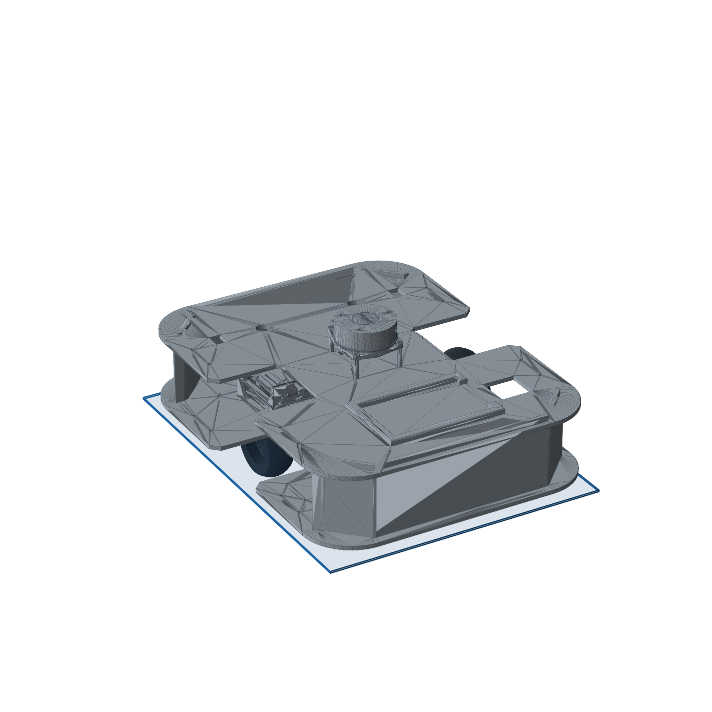
Các bộ lập kế hoạch toàn cục trong ROS 2 Navigation2 thường trả về một chuỗi tư thế rời rạc có các góc gãy. Đối với robot vi sai, đường hợp lệ trên bản đồ chi phí (costmap) chưa bảo đảm chuyển hướng có thể thực thi liên tục: robot có thể phải giảm tốc mạnh, quay tại chỗ hoặc yêu cầu vận tốc bánh vượt giới hạn. Báo cáo này trình bày PSTMO, một bộ làm mượt đường đi tạo đoạn chuyển tiếp (transition) Bézier bậc năm liên tục hình học G², kiểm tra động học hai bánh, giới hạn vận tốc theo độ cong, vùng quét hình bao robot, điều kiện ưu thế thời gian và quy hoạch động chống chồng lấn.
Bộ bằng chứng gồm 35 nhóm hình học RViz2 và 175 lượt thực thi Gazebo: 7 môi trường × 5 bộ lập kế hoạch × 5 phương án. Trên 34 nhóm đủ năm phương án, PSTMO đạt κmax trung bình 2,405 m⁻¹ và Eκ 3,312 m⁻¹; tương ứng giảm 90,33% và 98,49% so với Raw. PSTMO thành công 35/35 ở phép thử hình học; Simple thành công 34/35. Trong thực thi vòng kín, 170/175 lượt tới đích; cả năm thất bại thuộc cùng nhóm Kho điều phối–SmacHybrid. Trên 34 cặp PSTMO–Raw cùng thành công, PSTMO nhanh hơn trung bình 3,973 s và nhanh hơn trong 32/34 cặp. Không ghi nhận mẫu hình bao robot trên đường kế hoạch bị va chạm hoặc lần mô-đun Collision Monitor can thiệp.
Kết quả chứng minh lợi ích rõ rệt về hình học và thời gian mô phỏng, nhưng chưa thay thế kiểm chứng lặp lại hoặc thử nghiệm robot thật.
Từ khóa—PSTMO; robot vi sai; làm mượt đường đi; Bézier bậc năm G²; vùng quét hình bao robot; ROS 2 Navigation2; RViz2; Gazebo.
| Chương | Câu hỏi được trả lời |
|---|---|
| 1. Bối cảnh và bài toán | PSTMO nằm ở đâu trong Nav2 và vì sao góc gãy khó thực thi? |
| 2. Cơ sở toán học và mô hình robot | Các công thức nào cần để mô tả góc, độ cong, bánh xe và an toàn? |
| 3. Phương pháp PSTMO | Các phương án xử lý tại góc được tạo, kiểm tra, lựa chọn và ghép như thế nào? |
| 4. Triển khai ROS 2/Nav2 | Công thức tương ứng với tệp mã nguồn và tham số nào? |
| 5. Thiết kế thực nghiệm | Mô hình, môi trường, bộ lập kế hoạch, phương án, điểm đầu–đích và chỉ số đánh giá là gì? |
| 6. Kết quả tổng hợp | PSTMO hơn/kém ở chỉ số nào và giới hạn thống kê là gì? |
| 7. Phân tích C01–C35 | Mỗi ca có góc bao nhiêu, trạng thái nào và so sánh từng phương án ra sao? |
| 8. Thảo luận | Điều gì giải thích kết quả và điều gì chưa được chứng minh? |
| 9. Kết luận và hướng phát triển | Kết luận khoa học và bước kiểm chứng tiếp theo là gì? |
| Phụ lục | Công thức, thuật ngữ, tham số, bảng 35 ca và tệp tái lập. |
Navigation2 (Nav2) là khung điều hướng dạng mô-đun của ROS 2. Bộ định vị (localization) ước lượng tư thế robot; bộ lập kế hoạch toàn cục (global planner) tạo đường đi; bộ làm mượt đường đi (path smoother) chỉnh hình học; bộ điều khiển bám đường (path-following controller) phát lệnh vận tốc tuyến tính v và vận tốc góc ω. PSTMO được tích hợp ở tầng làm mượt, giữa bộ lập kế hoạch và bộ điều khiển.
Đường đi (path) là chuỗi tư thế P={p₀,…,pₙ}, trong đó pᵢ=(xᵢ,yᵢ,ψᵢ). Quỹ đạo theo thời gian (trajectory) bổ sung thời điểm, vận tốc và gia tốc. PSTMO trả về nav_msgs/Path, nhưng trong quá trình lựa chọn phương án có xây dựng biểu đồ vận tốc và ước lượng thời gian để loại đường cong không khả thi.
Tại một đỉnh của đường gấp khúc (polyline), hướng cạnh vào và cạnh ra khác nhau. Nếu robot đi qua đúng đỉnh với v>0, hướng vận tốc phải đổi tức thời; độ cong vì thế rất lớn hoặc không xác định. Bộ điều khiển thường phải giảm tốc mạnh, dừng–quay–đi hoặc tạo chuyển động lệch khỏi đường hình học. Vấn đề nghiên cứu là thay vùng quanh góc bằng một thao tác chuyển hướng mượt mà nhưng vẫn an toàn và có lợi về thời gian.
Trong cấu hình thử nghiệm đối chứng, Constrained dùng w_smooth=200000, w_cost=0,015, w_curve=0 và w_dist=0. Vì vậy báo cáo phân biệt công thức tổng quát của plugin với đúng cấu hình được thử.
θ>0 biểu diễn rẽ trái và θ<0 biểu diễn rẽ phải theo quy ước trục bản đồ. Trong chương kết quả, mọi góc báo bằng độ được chuyển trực tiếp từ trường turn_angle trong dữ liệu chẩn đoán sau điều kiện hóa đường; không ước lượng lại từ ảnh.
κmax phản ánh đoạn uốn gắt nhất; Eκ mô tả mức uốn tích lũy trên toàn đường. Eκ có đơn vị m⁻¹, là một chỉ số hình học và là thành phần của hàm mục tiêu; không phải năng lượng điện đo từ pin.
C¹ yêu cầu đạo hàm theo tham số bằng nhau; G¹ chỉ yêu cầu cùng hướng tiếp tuyến. G² yêu cầu thêm độ cong liên tục. Khi nối đoạn thẳng với đường cong, độ cong của đường cong phải tiến về 0 ở mối nối vì đoạn thẳng có κ=0. Nếu chỉ dùng G¹, κ vẫn có thể nhảy bậc và kéo theo lệnh ω=vκ đổi đột ngột khi v>0. Vì vậy PSTMO chọn G²: nó giữ cùng tiếp tuyến như G¹ đồng thời loại bước nhảy độ cong tại mối nối thẳng–cong.
Đoạn chuyển tiếp được xem là pha tịnh tiến liên tục; vì vậy bánh trong không được chạy lùi. Điều kiện 1−|bκ|/2≥0 dẫn tới |κ|≤2/b. Quay tại chỗ là trạng thái riêng, trong đó hai bánh có thể quay ngược chiều.
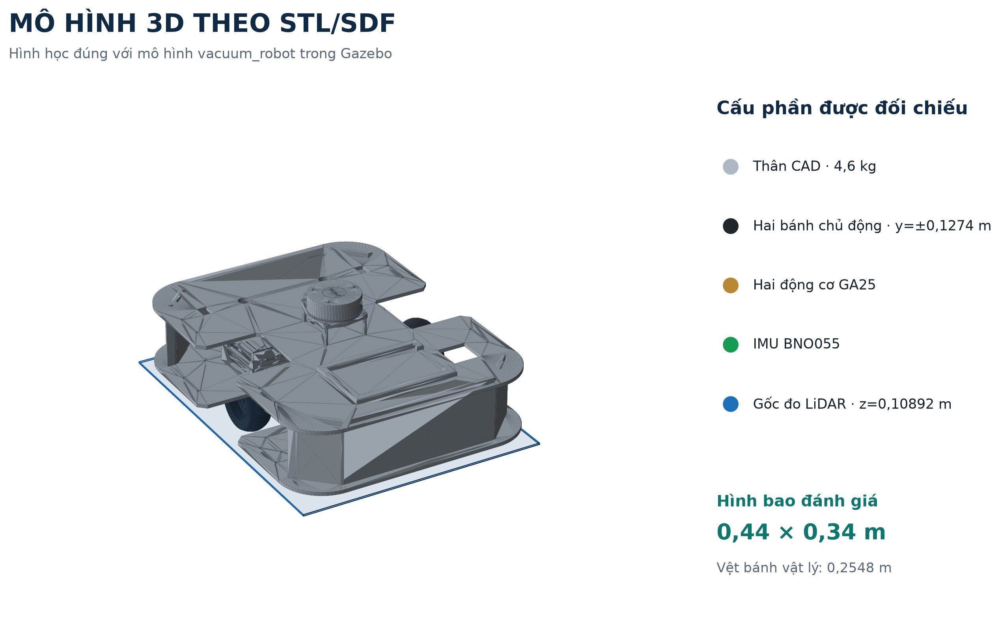
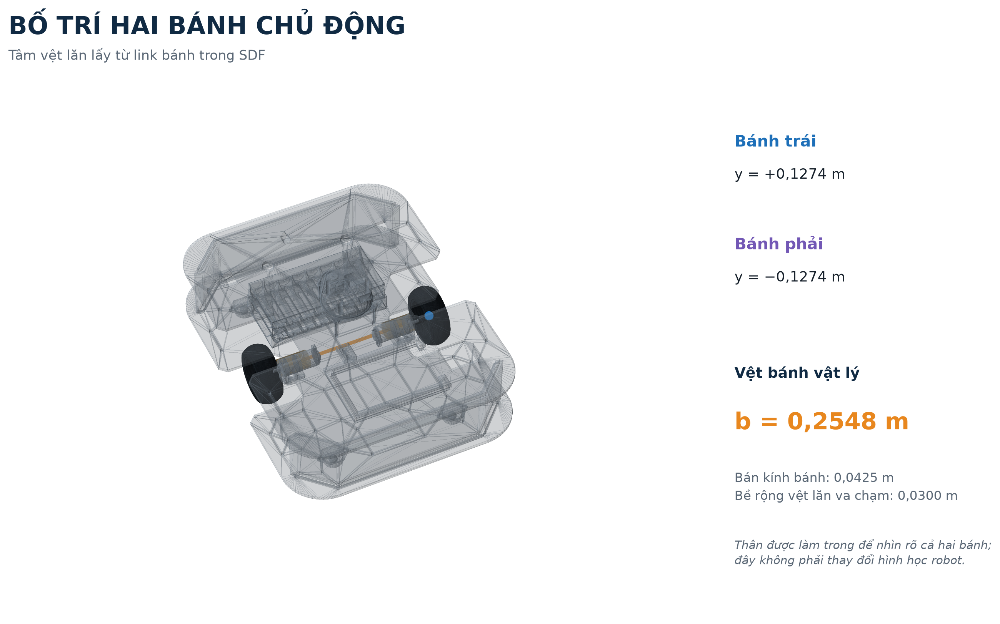
Kiểm tra an toàn tại một tư thế (pose safety) chỉ xét hình bao robot ở đúng tư thế đó. Kiểm tra an toàn vùng quét (swept-footprint safety) xét thêm các tư thế nội suy giữa hai mốc, gồm cả thay đổi vị trí và góc hướng (yaw). Chỉ kiểm tra tâm robot là chưa đủ vì góc của hình bao có thể chạm kệ dù tâm còn nằm trong ô tự do.
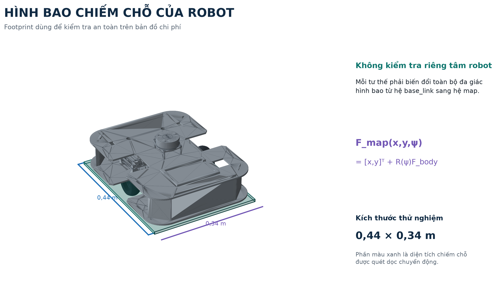
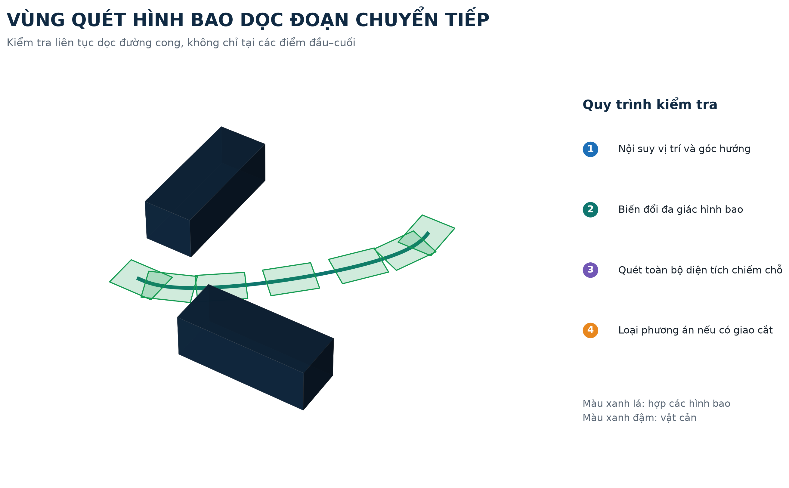
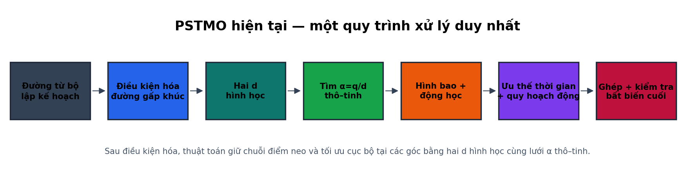
Đường do bộ lập kế hoạch tạo ra được điều kiện hóa, phân tích góc, sinh tối đa hai khoảng cắt cho mỗi góc, tìm α theo lưới phân cấp, kiểm tra hình học–động học–an toàn–thời gian, so sánh các phương án tại từng góc, chọn chuỗi bằng quy hoạch động, ghép và hậu kiểm toàn đường.
Thuật toán Ramer–Douglas–Peucker (RDP) chỉ nhận một dây cung khi vừa đạt sai số hình học vừa an toàn theo vùng quét hình bao robot. Sau đó bộ triệt dao động zíc-zắc cục bộ xử lý dải ngắn có nhiều lần đổi dấu góc. Cấu hình độc lập hiện tại là condition_only; rút gọn theo đường nhìn thẳng tham lam (greedy line-of-sight, LOS) không thuộc quy trình được đánh giá.
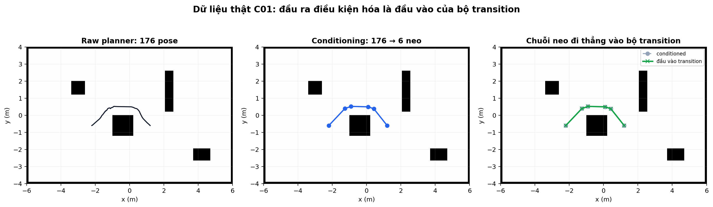
Ba điểm đầu và ba điểm cuối thẳng hàng, cách đều q. Vì vậy B″(0)=B″(1)=0; thay vào công thức độ cong cho κ(0)=κ(1)=0. Mối nối với hai đoạn thẳng đạt G² về hình học. Bézier bậc năm được chọn vì đủ điều kiện biên mà vẫn giữ α để điều chỉnh hình dạng.
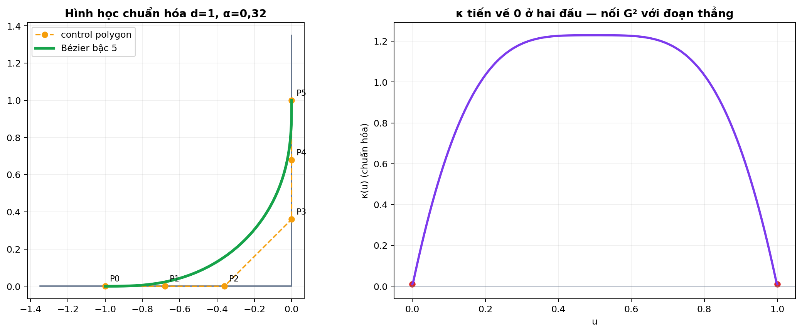
dpref ưu tiên vùng chuyển tiếp lớn; dcompat giảm mức chiếm đoạn khi góc kề cùng dùng một cạnh. Với từng d, lưới thô α={0,1;0,2;0,3;0,4;0,5} được đánh giá trước. Nếu toàn bộ lưới thô thất bại, lưới phục hồi {0,15;0,25;0,35;0,45} mới được dùng; sau đó đánh giá tinh 11 nút quanh phương án có Eκ nhỏ nhất.
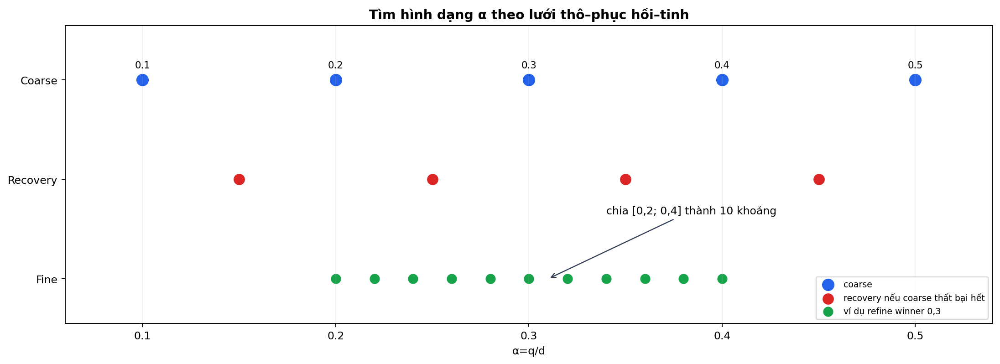

Một phương án bị loại nếu đạo hàm suy biến, độ cong không hữu hạn, đổi dấu quay ngoài ý muốn, yêu cầu bánh trong chạy lùi, không tạo được vận tốc dương, vi phạm hình bao robot hoặc bản đồ chi phí, hoặc biểu đồ thời gian không hội tụ. Va chạm là điều kiện loại bắt buộc; không thể được bù bằng Eκ thấp.
Giới hạn vận tốc theo độ cong là ngưỡng cục bộ tại mỗi mẫu. Biểu đồ vận tốc theo chiều dài đường là dãy v(s) sau quét tiến/lùi để thỏa giới hạn tăng tốc và giảm tốc. Hai khái niệm này phải được trình bày riêng, không thay thế cho nhau.
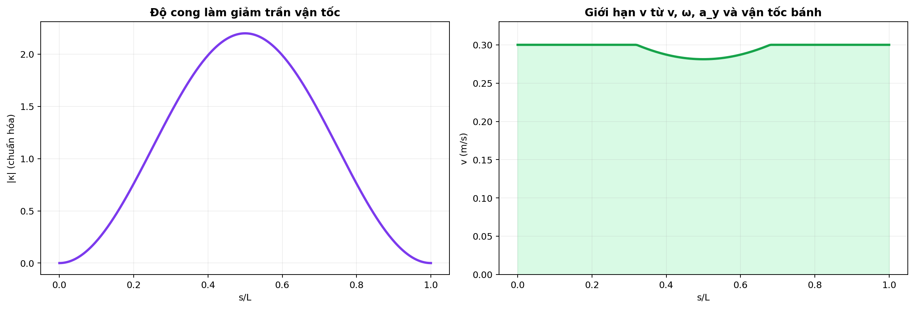
Điều kiện ưu thế thời gian (time gate) chỉ mở nhánh đoạn chuyển tiếp khi đường cong nhanh nhất cộng biên 0,15 s vẫn nhanh hơn quay tại chỗ, trừ trường hợp quay tại chỗ không an toàn. Sau khi mở nhánh, chỉ phương án có thời gian nằm trong cửa sổ cạnh tranh ΔTcomp mới được xét tiếp; khi quay tại chỗ an toàn, cửa sổ này còn bị chặn để mọi phương án vẫn nhanh hơn quay tại chỗ ít nhất 0,15 s. Trong đó rcost là thành phần chi phí môi trường, rω là thành phần vận tốc góc và eκ là thành phần uốn hình học không thứ nguyên, dùng mức tham chiếu Eref=1 m⁻¹; eκ không phải điện năng. Trong mã nguồn, Eref là tham số curvature_energy_scale=1,0. Hàm J được tối thiểu hóa và chỉ xếp hạng các trạng thái đã vượt mọi điều kiện bắt buộc. Toàn bộ bảy môi trường dùng cùng một định nghĩa J và cùng bộ trọng số; môi trường chỉ làm thay đổi giá trị chi phí, khoảng hở và tập phương án khả thi, không tạo một hàm mục tiêu riêng.
Quy hoạch động chọn một trạng thái cho mỗi góc mà không chồng lấn vùng cắt; độ phức tạp O(NK²). Đường cuối bảo toàn tư thế đầu và tư thế đích, nội suy đoạn thẳng 0,05 m, gán góc hướng theo tiếp tuyến và quét lại toàn bộ hình bao robot. Nếu bất biến cuối thất bại, plugin báo lỗi thay vì âm thầm trả Raw.
| Khối | Tệp chịu trách nhiệm | Hành vi chính |
|---|---|---|
| Điều kiện hóa | path_conditioning.cpp | RDP, triệt dao động zíc-zắc, điều kiện an toàn dây cung |
| Bézier G² | quintic_transition.cpp | Sáu điểm điều khiển, κ, Eκ, giới hạn bánh và vận tốc |
| Hai d và α | hierarchical_shape_search.cpp | d_pref, d_compat, lưới thô–phục hồi–tinh |
| Thời gian | time_parameterization.cpp | Quét tiến/lùi, gia tốc góc, thời gian quay tại chỗ |
| Hàm mục tiêu | candidate_selection.cpp | Chi phí môi trường–vận tốc góc–mức uốn và quy tắc lựa chọn tất định khi bằng điểm |
| Quy hoạch động | path_optimization.cpp | Tương thích đoạn chung và truy vết chuỗi trạng thái |
| Trình cắm Nav2 | adaptive_pivot_g2_smoother.cpp | Quy trình, điều kiện ưu thế thời gian, ghép đường và dữ liệu chẩn đoán |
| An toàn | footprint_safety.cpp | Kiểm tra tư thế, đoạn thẳng, quay và vùng quét hình bao robot |
| Tham số | Giá trị | Ý nghĩa |
|---|---|---|
| wheel_separation của PSTMO | 0,2548 m | Khoảng cách tâm vệt lăn vật lý dùng trong ràng buộc động học |
| wheel_separation hiệu dụng Gazebo | 0,2834 m | Giá trị DiffDrive đã hiệu chuẩn tiếp xúc; hệ số 1,112245 so với vệt bánh vật lý |
| wheel_radius | 0,0425 m | Bán kính bánh chủ động trong SDF |
| footprint (hình bao robot) | 0,44 × 0,34 m | Hình chữ nhật dự phòng và mô hình đánh giá |
| costmap resolution (độ phân giải) | 0,05 m | Độ phân giải bản đồ chi phí |
| maximum_trim_distance | 0,8 m | Khoảng cắt lớn nhất |
| minimum_trim_distance | 0,02 m | Khoảng cắt nhỏ nhất |
| output_spacing / sample_spacing | 0,05 / 0,02 m | Khoảng mẫu đầu ra / Bézier |
| vmax / ωmax | 0,30 m/s / 0,80 rad/s | Giới hạn thân xe |
| vwheel,max | 0,36 m/s | Giới hạn mỗi bánh |
| ay,max | 0,18 m/s² | Giới hạn gia tốc ngang |
| a_acc / a_dec | 0,35 / 0,45 m/s² | Gia tốc dọc / độ lớn giảm tốc dọc |
| aω,max | 1,20 rad/s² | Gia tốc góc |
| max_footprint_cost | 252 | Ngưỡng chi phí tại tâm; đa giác hình bao được quét riêng |
| ΔT_selection | 0,15 s | Biên ưu thế thời gian |
| time_competitive_slack | 10,0 s | Giới hạn trên của cửa sổ các phương án được so sánh; còn bị chặn bởi thời gian quay tại chỗ |
| curvature_energy_scale | 1,0 m⁻¹ | Mức tham chiếu để chuẩn hóa Eκ thành đại lượng không thứ nguyên |
| segment_margin | 0 → hiệu dụng 0,05 m | Giá trị 0 kích hoạt max(output spacing, 2×sample spacing, resolution) |
| trọng số J | 0,15 / 0,10 / 0,75 | Chi phí môi trường / vận tốc góc / mức uốn Eκ |
Cả năm phương án dùng cùng bộ điều khiển bám đường Regulated Pure Pursuit (RPP) ở 20 Hz, vận tốc mong muốn 0,30 m/s và khoảng nhìn trước (lookahead distance) cố định 0,50 m. Bộ làm mượt lệnh vận tốc (Velocity Smoother) chạy 50 Hz; mô-đun giám sát va chạm (Collision Monitor) kiểm tra tiếp cận theo hình bao robot. Do bộ điều khiển và giới hạn vận tốc dùng chung, khác biệt giữa các phương án chủ yếu đến từ đường được giao cho tác vụ FollowPath.
Kết quả tổng hợp hiện có: 308 phép kiểm thử, 0 lỗi thực thi, 0 phép thất bại và 40 phép được bỏ qua thuộc cppcheck/phân tích tĩnh theo môi trường. Cả 35 ca PSTMO đều xác nhận đúng một lần chạy quy trình và trường hậu kiểm final_invariants_verified=true.
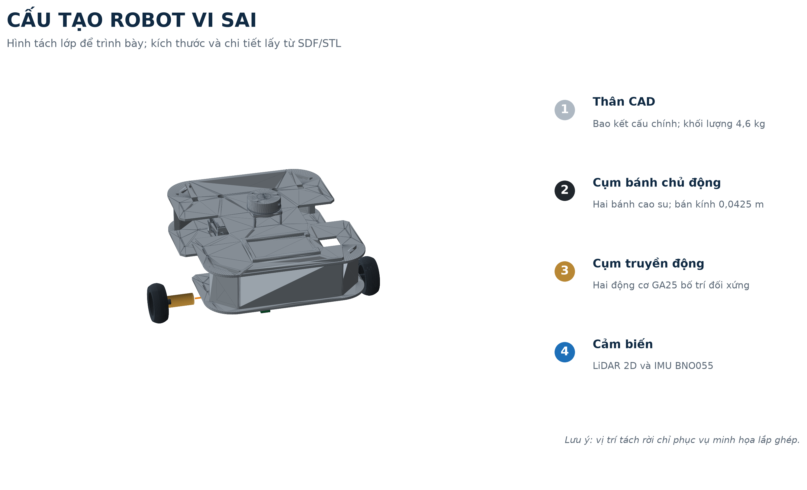
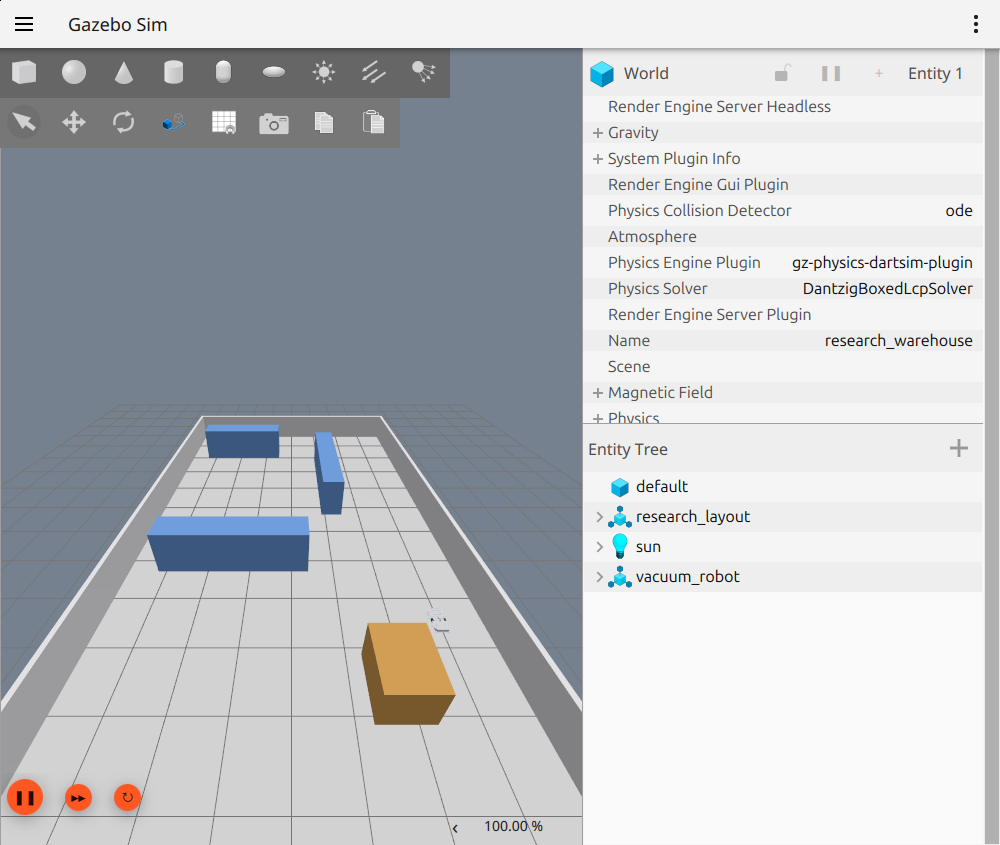
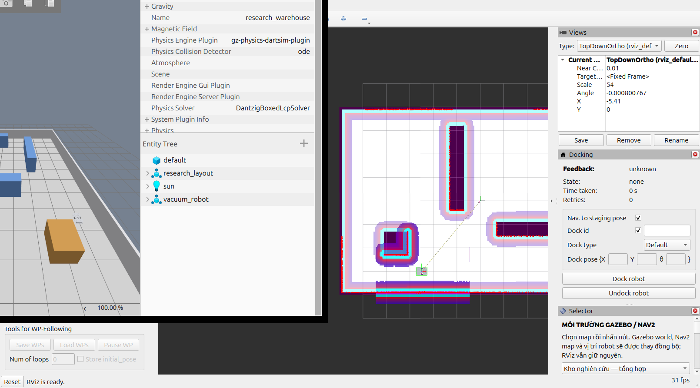
Cần phân biệt ba loại hình. Hình 3D từ STL/SDF giải thích cấu tạo và quan hệ hình học; Gazebo mô phỏng thân xe, tiếp xúc bánh–sàn, cảm biến và vật cản; Nav2 xử lý định vị, bản đồ chi phí, lập kế hoạch, làm mượt và điều khiển. Vì vậy ảnh Gazebo xác nhận mô hình vật lý/môi trường, còn ảnh RViz2 xác nhận dữ liệu điều hướng và đúng đường nav_msgs/Path được đánh giá. Hình 3D và các sơ đồ ở Chương 2–3 không được dùng thay bằng chứng mô phỏng.
| Khối | Giá trị/cấu hình đúng trong mô hình | Dữ liệu quan sát |
|---|---|---|
| Thân robot | Bao CAD 0,44 × 0,34 m; thân chính 4,6 kg; hai bánh 0,2 kg/bánh; bốn gối cầu đỡ | RobotModel, hình bao robot và trạng thái vật lý Gazebo |
| Truyền động vi sai | Hai bánh chủ động R=0,0425 m; vệt bánh vật lý 0,2548 m | /cmd_vel, /joint_states, /odom ở 30 Hz |
| Hiệu chuẩn Gazebo | DiffDrive dùng vệt bánh hiệu dụng 0,2834 m để ước lượng hành trình khớp giá trị thực mô phỏng | /odom đối chiếu /ground_truth/odom độc lập ở 30 Hz |
| LiDAR 2D RPLIDAR A1M8 | 360°; 1440 tia; 5,5 Hz; 0,15–12 m; σ nhiễu 0,01 m | /scan và lớp LaserScan trong RViz2 |
| IMU BNO055 | 100 Hz; nhiễu vận tốc góc 0,002 rad/s và gia tốc 0,03 m/s² | /imu/data |
| Định vị và bản đồ | Định vị Monte Carlo thích nghi (AMCL) với mô hình chuyển động vi sai; bản đồ chi phí toàn cục/cục bộ | TF map→odom→base_link, bản đồ, bản đồ chi phí và hình bao robot |
| Chuỗi điều hướng | 5 bộ lập kế hoạch toàn cục → 5 phương án đường → PSTMO/đối chứng → RPP → bộ làm mượt lệnh vận tốc → Collision Monitor | Đường của bộ lập kế hoạch, đường sau làm mượt, dữ liệu chẩn đoán và quỹ đạo thực mô phỏng |
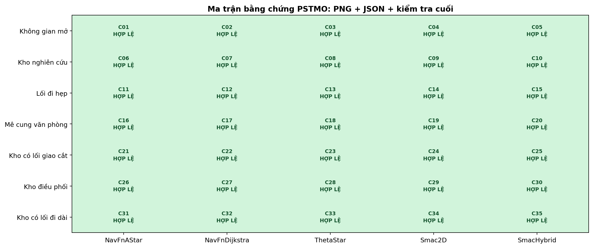
Mỗi tổ hợp môi trường–bộ lập kế hoạch tạo một đường thô Raw. Năm phương án Raw, Simple, Savitzky–Golay, Constrained và PSTMO nhận cùng đường đó. Phép thử hình học có 35×5=175 bản ghi; phép thử vòng kín có thêm 175 lượt Gazebo độc lập.
| Môi trường | Điểm đầu (x; y; góc hướng) | Điểm đích (x; y; góc hướng) | Phương vị thẳng đầu→đích | Kịch bản |
|---|---|---|---|---|
| Không gian mở | (-2,20; -0,60; 49,1°) | (1,20; -0,60; 0,0°) | 0,0° | Vòng qua khối trung tâm |
| Kho nghiên cứu | (-5,00; -3,00; 2,9°) | (-2,00; -0,50; 39,8°) | 39,8° | Đường chéo góc trái dưới |
| Lối đi hẹp | (-5,00; -3,00; 35,5°) | (5,00; 3,00; 31,0°) | 31,0° | Luồn Tây Nam–Đông Bắc |
| Mê cung văn phòng | (-5,20; -3,00; 49,1°) | (5,20; 3,00; 30,0°) | 30,0° | Đường chéo dài văn phòng |
| Kho có lối giao cắt | (-2,00; -2,80; 87,1°) | (2,00; 2,80; 54,5°) | 54,5° | Chuyển lối tại giao cắt |
| Kho điều phối | (-5,20; 3,20; 43,5°) | (5,00; -2,80; -30,5°) | -30,5° | Tuyến bổ sung hàng toàn kho |
| Kho có lối đi dài | (-4,50; -2,40; 87,1°) | (4,50; 2,40; 28,1°) | 28,1° | Tuyến bổ sung hàng chéo |

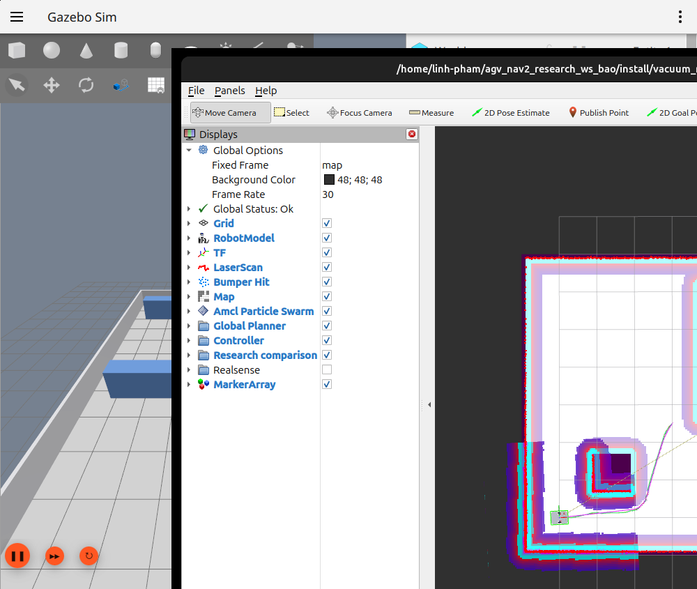


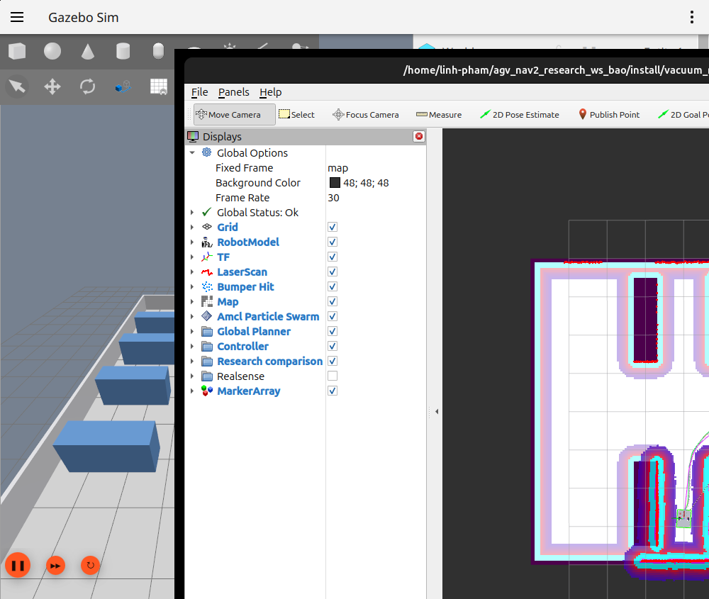

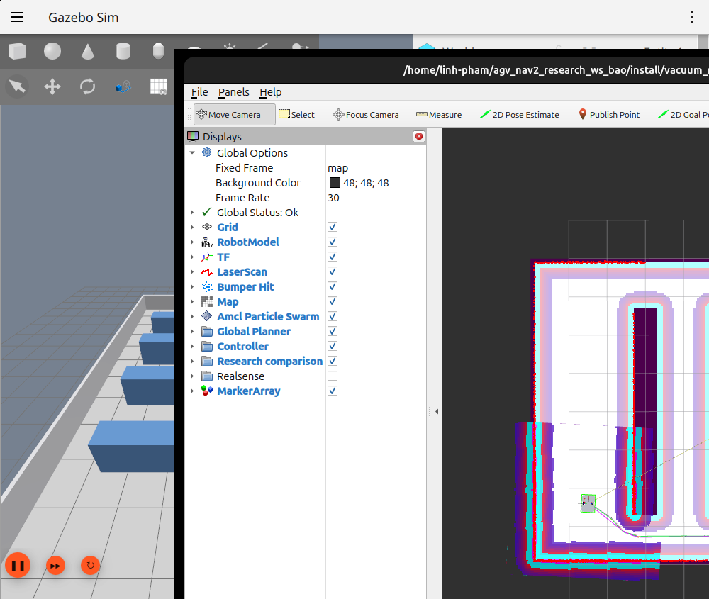
| Bộ lập kế hoạch | Đặc trưng dùng trong báo cáo | Điểm cần thận trọng |
|---|---|---|
| NavFn A* | Tìm kiếm A* trên lưới bản đồ chi phí | Đường có thể mang đặc trưng bước lưới và nhiều điểm |
| NavFn Dijkstra | Tìm kiếm Dijkstra trên lưới | Dùng cùng bản đồ chi phí nhưng chiến lược tìm kiếm khác A* |
| ThetaStar | Lập kế hoạch không bị giới hạn theo hướng lưới (any-angle) | Thường tạo dây cung dài và ít điểm hơn |
| Smac2D | Tìm kiếm hai chiều có xét chi phí | Có bước làm mượt nội bộ của bộ lập kế hoạch; không phải máy chủ làm mượt độc lập |
| SmacHybrid | Hybrid A* sử dụng các mẫu chuyển động tiến | Mô hình chuyển động của bộ lập kế hoạch không biểu diễn đầy đủ thao tác quay tại chỗ của robot vi sai |
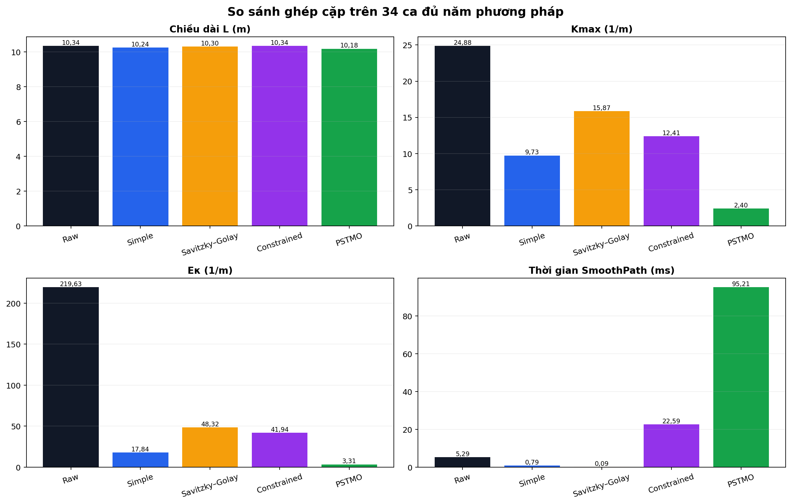
| Phương án | Thành công hình học | Chiều dài L (m) | Độ cong lớn nhất κmax (m⁻¹) | ∫κ²ds = Eκ (m⁻¹) | Thời gian xử lý (ms) | Khoảng hở nhỏ nhất (m) |
|---|---|---|---|---|---|---|
| Raw | 35/35 | 10,3395 | 24,8792 | 219,6271 | 5,29 | 0,1613 |
| Simple | 34/35 | 10,2423 | 9,7309 | 17,8415 | 0,79 | 0,1908 |
| Savitzky–Golay | 35/35 | 10,3022 | 15,8719 | 48,3213 | 0,09 | 0,1912 |
| Constrained | 35/35 | 10,3382 | 12,4077 | 41,9379 | 22,59 | 0,2138 |
| PSTMO | 35/35 | 10,1766 | 2,4047 | 3,3121 | 95,21 | 0,1708 |
So với phương án đối chứng Nav2 tốt nhất về κmax là Simple, PSTMO giảm 75,29%. So với phương án đối chứng tốt nhất về Eκ cũng là Simple, PSTMO giảm 81,44%. Chiều dài PSTMO ngắn hơn Simple 0,64%, nhưng thời gian thuật toán cao hơn 94,41 ms.
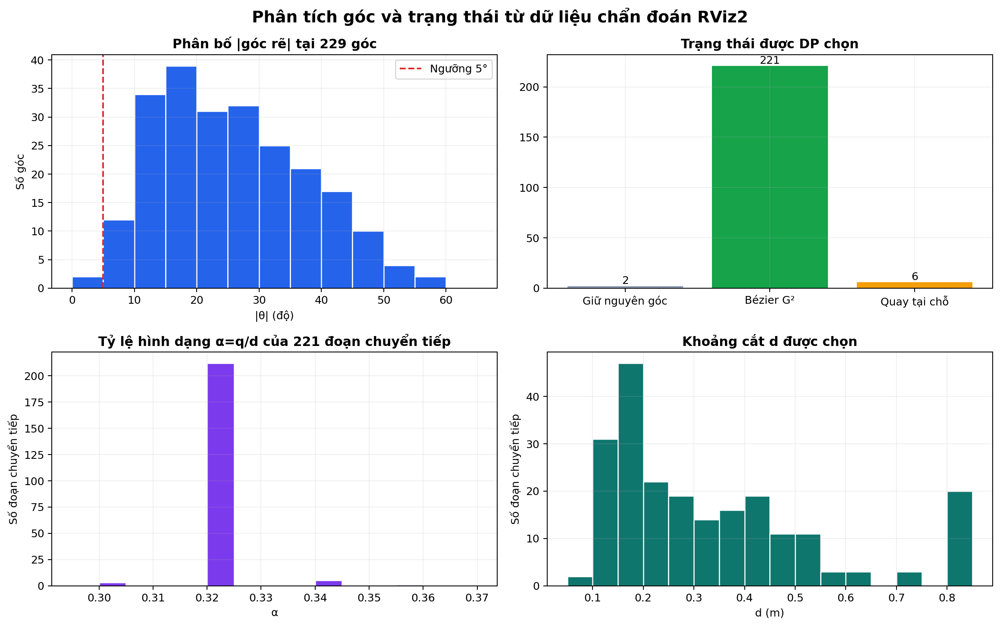
Toàn bộ 35 đường có 229 góc sau điều kiện hóa: 221 đoạn chuyển tiếp Bézier G², 6 quay tại chỗ và 2 góc được giữ nguyên. |θ| trung bình 25,91°, trung vị 24,53°, nhỏ nhất 3,01° và lớn nhất 59,25°. Trong 221 đoạn chuyển tiếp, α được chọn nằm trong [0,30; 0,36], trung bình 0,320; d nằm trong [0,079; 0,800] m.
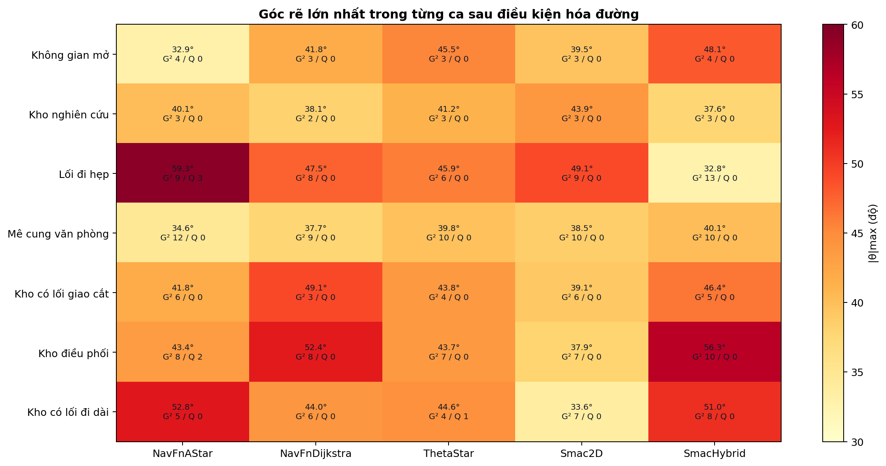
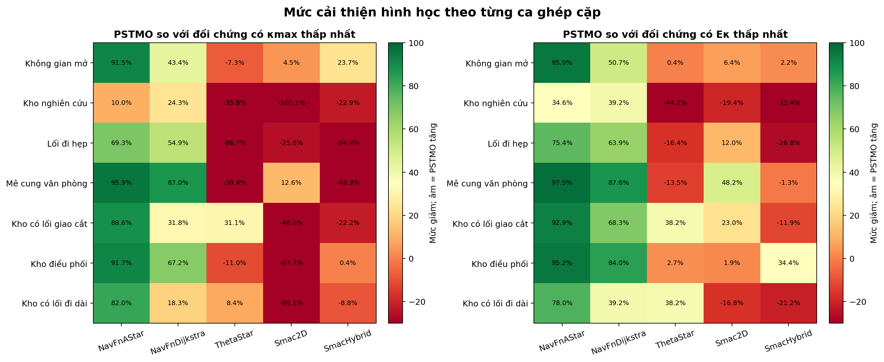
PSTMO không tốt hơn ở mọi ca với cùng biên độ. Một số ca của Smac2D/SmacHybrid đã có đường tương đối mượt từ bộ lập kế hoạch hoặc phương án đối chứng, nên mức giảm nhỏ hơn. Ngược lại, các đường lưới có đỉnh độ cong cao cho mức cải thiện lớn. Phân tích từng ca ở Chương 7 ghi rõ cả trường hợp PSTMO tốt hơn và kém hơn.
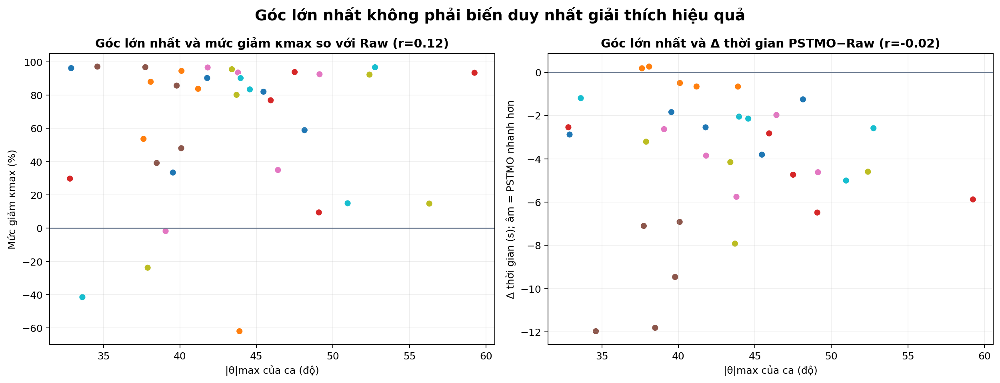
Hệ số tương quan mô tả giữa góc lớn nhất và mức giảm κmax so với Raw chỉ là r=0,12; giữa góc lớn nhất và chênh lệch thời gian PSTMO−Raw là r=-0,02. Vì vậy không thể kết luận đơn giản “góc càng lớn thì PSTMO càng nhanh”. Số điểm, chiều dài cạnh, chuỗi góc, hành lang, bộ lập kế hoạch và phản ứng của bộ điều khiển cùng ảnh hưởng kết quả.
Trên 34 nhóm đầy đủ, khoảng hở nhỏ nhất trung bình của PSTMO là 0,1708 m; Raw là 0,1613 m, Simple là 0,1908 m. PSTMO có khoảng hở cao hơn Raw nhưng thấp hơn Simple, Savitzky–Golay và Constrained. Đây là đánh đổi về khoảng dự phòng, không phải va chạm: số mẫu hình bao robot bị va chạm của PSTMO bằng 0.
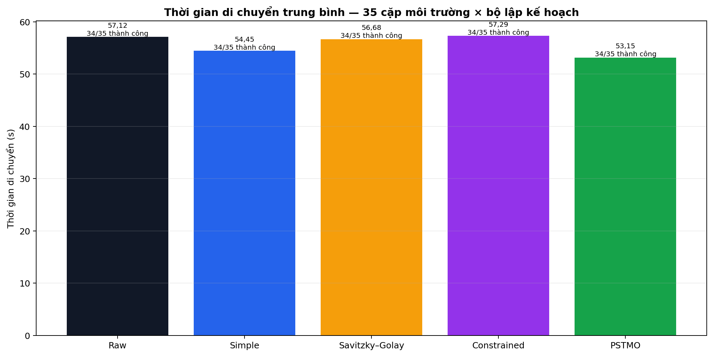
| Phương án | Lượt thành công | Số mẫu thời gian hợp lệ | Trung bình (s) | Độ lệch chuẩn (s) | Nhỏ nhất (s) | Lớn nhất (s) |
|---|---|---|---|---|---|---|
| Raw | 34/35 | 34 | 57,120 | 19,903 | 29,241 | 88,422 |
| Simple | 34/35 | 34 | 54,449 | 19,064 | 28,197 | 86,715 |
| Savitzky–Golay | 34/35 | 34 | 56,677 | 19,882 | 29,199 | 88,446 |
| Constrained | 34/35 | 34 | 57,293 | 19,885 | 29,280 | 87,015 |
| PSTMO | 34/35 | 34 | 53,148 | 18,376 | 28,098 | 84,267 |
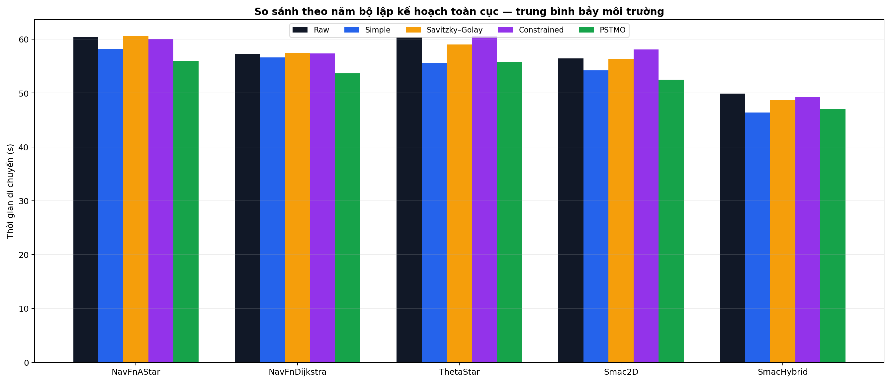
| PSTMO so với | Số cặp | Chênh lệch trung bình PSTMO−đối chứng (s) | Thay đổi tương đối ghép cặp | PSTMO nhanh hơn | PSTMO chậm hơn |
|---|---|---|---|---|---|
| Raw | 34 | -3,973 | -6,58% | 32/34 | 2/34 |
| Simple | 34 | -1,301 | -2,07% | 21/34 | 13/34 |
| Savitzky–Golay | 34 | -3,529 | -5,83% | 31/34 | 3/34 |
| Constrained | 34 | -4,145 | -6,89% | 31/34 | 3/34 |
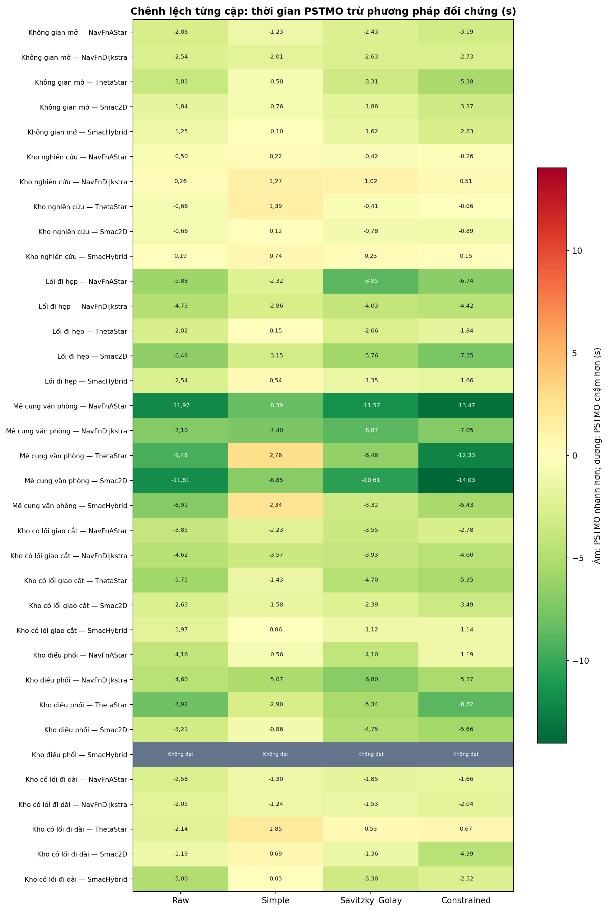
smoother_server từ chối đường Simple tại x=−4,741290 m; y=3,482165 m; góc hướng=0,352672 rad vì kiểm tra hình bao phát hiện va chạm. Trong phép thử thực thi, cả năm phương án của Kho điều phối–SmacHybrid không hoàn tất: Simple không có đường hợp lệ; bốn đường còn lại không có mẫu hình bao tĩnh bị va chạm nhưng RPP liên tục dự báo va chạm phía trước và tác vụ bị hủy do vượt thời gian chờ điều khiển (PATIENCE_EXCEEDED, mã 104). Cảnh báo dự báo va chạm nội bộ của RPP khác với một lần can thiệp của mô-đun Collision Monitor; dữ liệu ghi nhận số lần Collision Monitor can thiệp bằng 0. Do đó đây là giới hạn phối hợp giữa bộ lập kế hoạch, bộ làm mượt và bộ điều khiển; không được coi thời điểm dừng sớm là thời gian hoàn thành.| Môi trường | Raw | Simple | Savitzky–Golay | Constrained | PSTMO |
|---|---|---|---|---|---|
| Không gian mở | 33,116 (5/5) | 31,586 (5/5) | 33,026 (5/5) | 34,151 (5/5) | 30,653 (5/5) |
| Kho nghiên cứu | 32,001 (5/5) | 30,980 (5/5) | 31,803 (5/5) | 31,840 (5/5) | 31,729 (5/5) |
| Lối đi hẹp | 70,423 (5/5) | 67,460 (5/5) | 70,464 (5/5) | 70,378 (5/5) | 65,932 (5/5) |
| Mê cung văn phòng | 70,119 (5/5) | 64,175 (5/5) | 68,833 (5/5) | 71,131 (5/5) | 60,667 (5/5) |
| Kho có lối giao cắt | 43,504 (5/5) | 41,488 (5/5) | 42,877 (5/5) | 43,211 (5/5) | 39,738 (5/5) |
| Kho điều phối | 84,520 (4/5) | 81,900 (4/5) | 84,799 (4/5) | 84,811 (4/5) | 79,551 (4/5) |
| Kho có lối đi dài | 71,639 (5/5) | 69,041 (5/5) | 70,561 (5/5) | 71,032 (5/5) | 69,045 (5/5) |
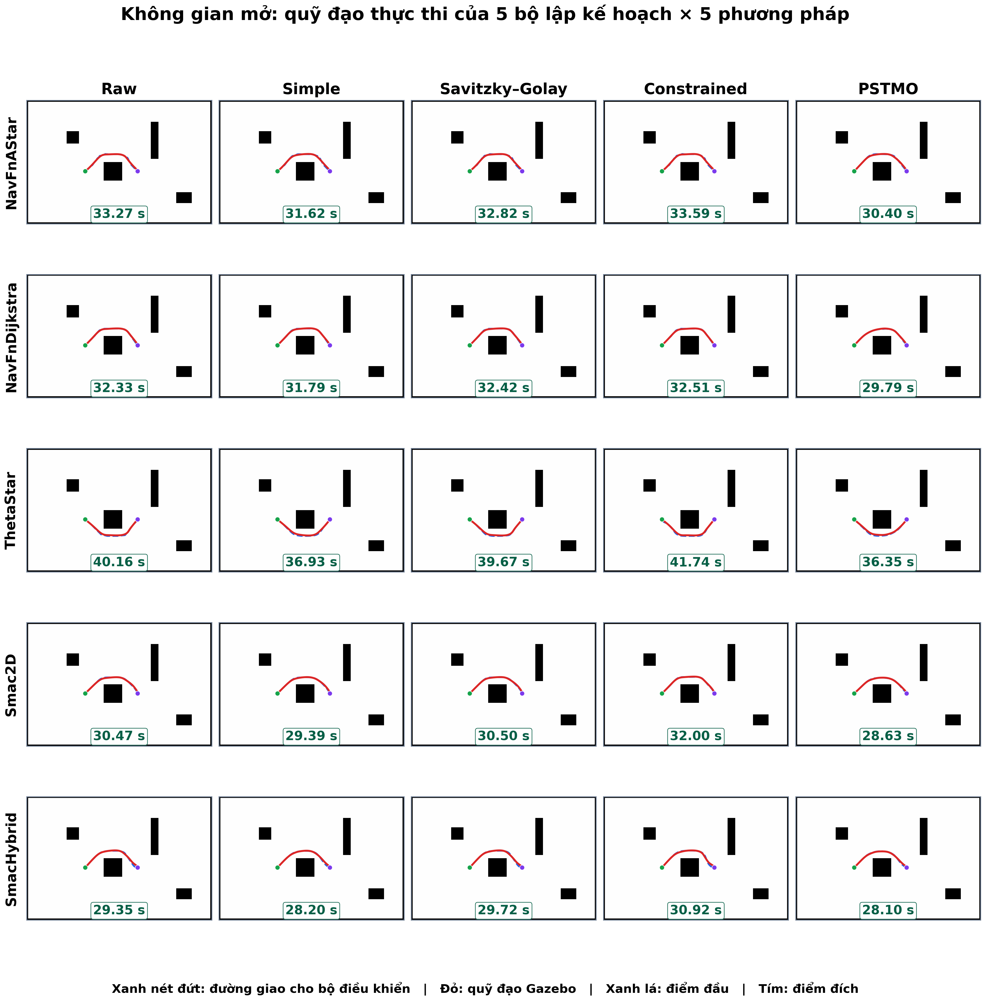
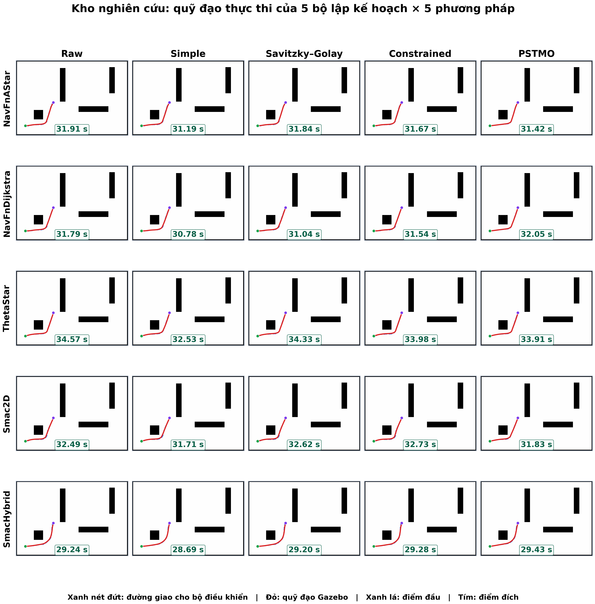
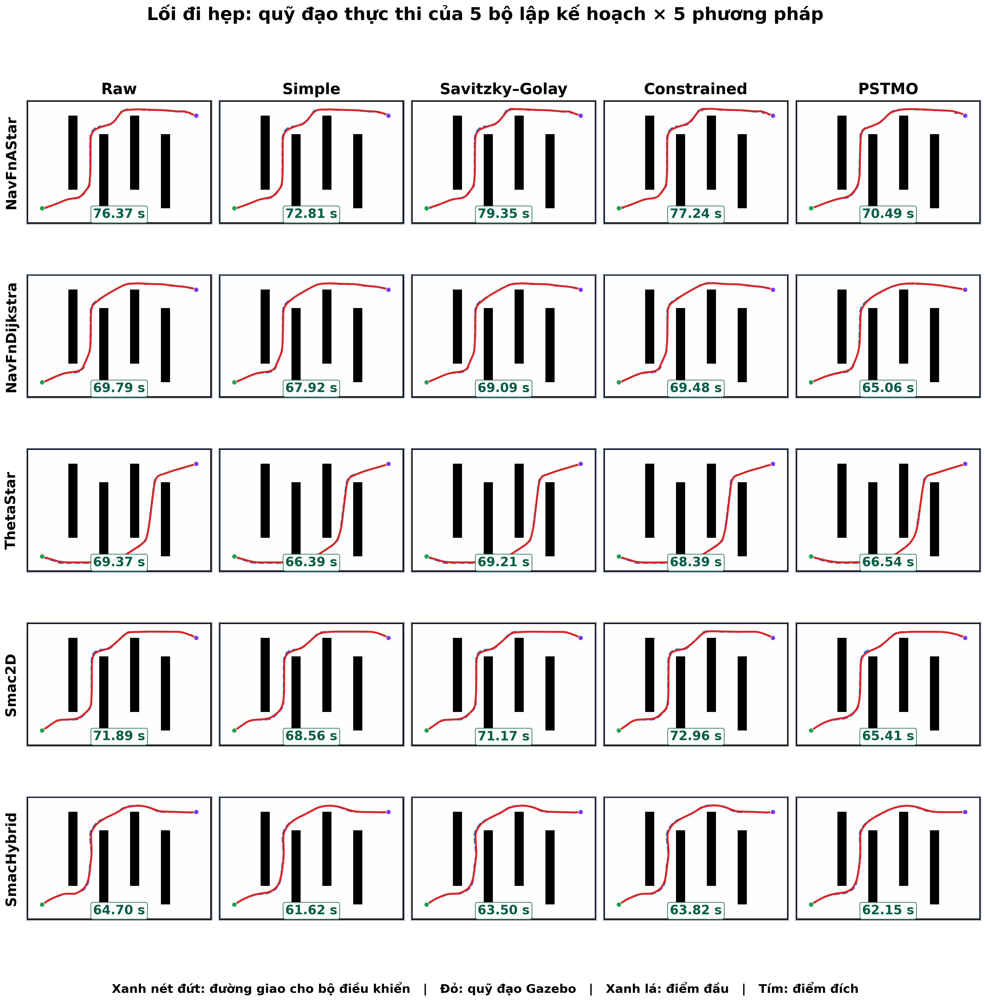
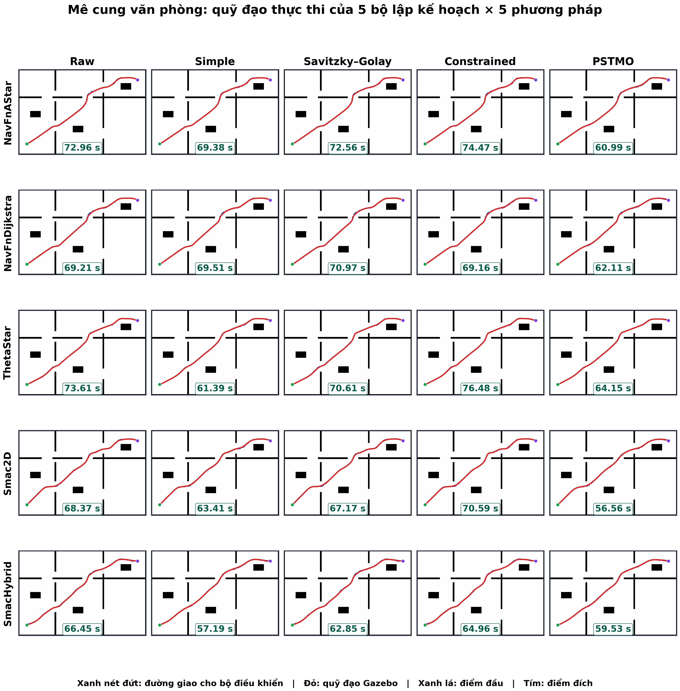
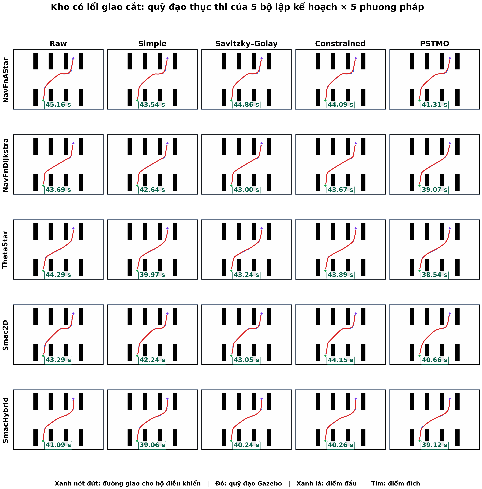
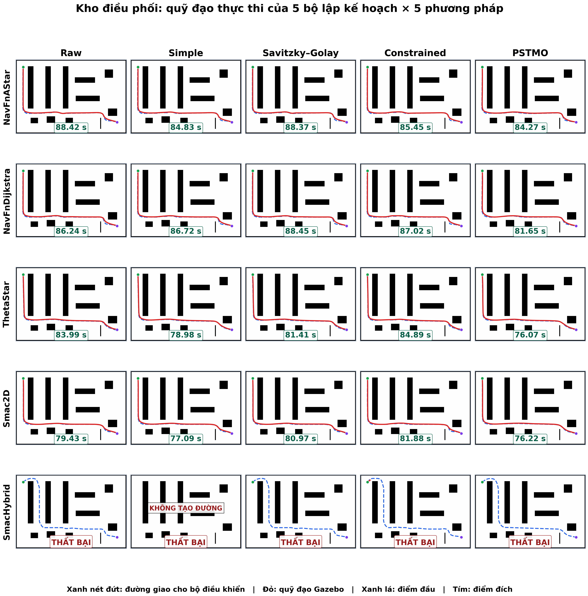
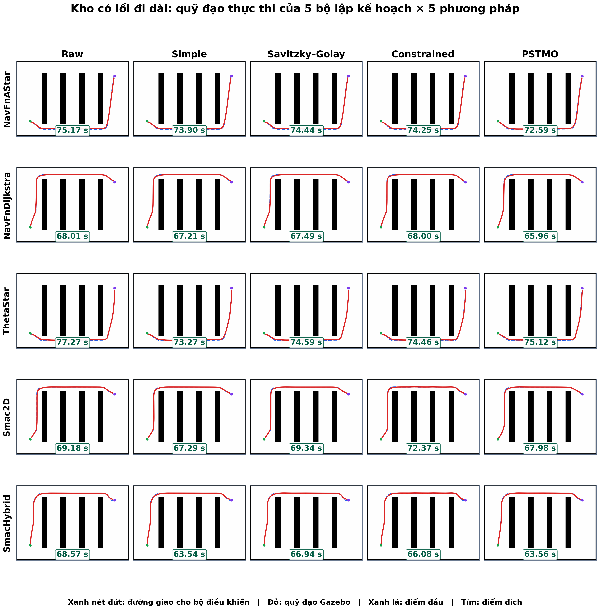
Mỗi ca dưới đây dùng đúng một tệp JSON RViz2, năm hàng thử nghiệm hình học và năm hàng thực thi Gazebo. Góc được lấy từ dữ liệu chẩn đoán sau điều kiện hóa. “Hơn” chỉ được dùng theo chiều có lợi của từng chỉ số: L, κmax, Eκ và thời gian càng thấp càng tốt; khoảng hở càng cao càng tốt; va chạm phải bằng 0.
Vật cản thưa; dùng để quan sát ảnh hưởng của đường vòng quanh một khối trung tâm khi hành lang không phải yếu tố chi phối.
Cấu hình hình học. Điểm đầu=(-2,200; -0,600; góc hướng 49,11°), điểm đích=(1,200; -0,600; góc hướng 0,00°). Phương vị thẳng đầu→đích là 0,00°; góc hướng đầu lệch 49,11° và góc hướng đích lệch 0,00° so với phương vị này.
Cấu trúc góc. Đường Raw có 176 mẫu tư thế; sau điều kiện hóa còn 6 điểm neo và tạo 4 góc. Có 0 góc rẽ trái, 4 góc rẽ phải; |θ| trung bình 24,60°, trung vị 24,12° và lớn nhất 32,89°. Quy hoạch động (DP) chọn 4 đoạn chuyển tiếp G², 0 quay tại chỗ và giữ nguyên 0 góc nhỏ.
Các góc lớn nhất của ca:
| STT góc | Tọa độ (m) | Góc rẽ θ (°) | Chiều rẽ | Cách xử lý được chọn | Khoảng cắt d (m) | Tỷ lệ α | Số phương án đạt / lượt đánh giá |
|---|---|---|---|---|---|---|---|
| 4 | (0,423; 0,383) | -32,89 | Phải | Bézier G² | 0,149 | 0,320 | 24/26 |
| 1 | (-1,266; 0,392) | -27,02 | Phải | Bézier G² | 0,166 | 0,320 | 23/26 |
| 2 | (-0,906; 0,521) | -21,22 | Phải | Bézier G² | 0,166 | 0,320 | 25/26 |
| 3 | (0,093; 0,495) | -17,27 | Phải | Bézier G² | 0,149 | 0,320 | 25/26 |
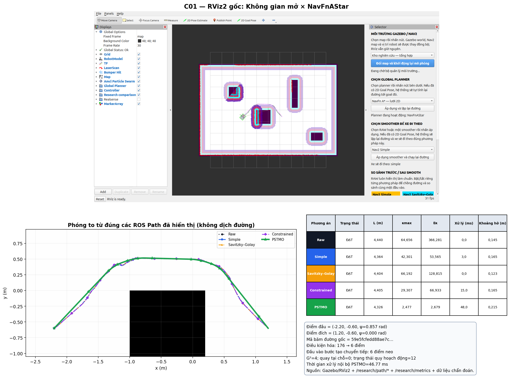
Bảng hình học năm phương án:
| Phương án | Kết quả | Chiều dài L (m) | Độ cong lớn nhất κmax (m⁻¹) | ∫κ²ds = Eκ (m⁻¹) | Thời gian xử lý (ms) | Khoảng hở nhỏ nhất (m) | Mẫu hình bao va chạm |
|---|---|---|---|---|---|---|---|
| Raw | Đạt | 4,440 | 64,656 | 366,281 | 0,00 | 0,145 | 0 |
| Simple | Đạt | 4,364 | 42,301 | 53,565 | 3,00 | 0,165 | 0 |
| Savitzky–Golay | Đạt | 4,404 | 66,192 | 128,815 | 0,00 | 0,123 | 0 |
| Constrained | Đạt | 4,405 | 29,307 | 66,933 | 15,00 | 0,165 | 0 |
| PSTMO | Đạt | 4,326 | 2,477 | 2,679 | 48,00 | 0,215 | 0 |
Phân tích so sánh:
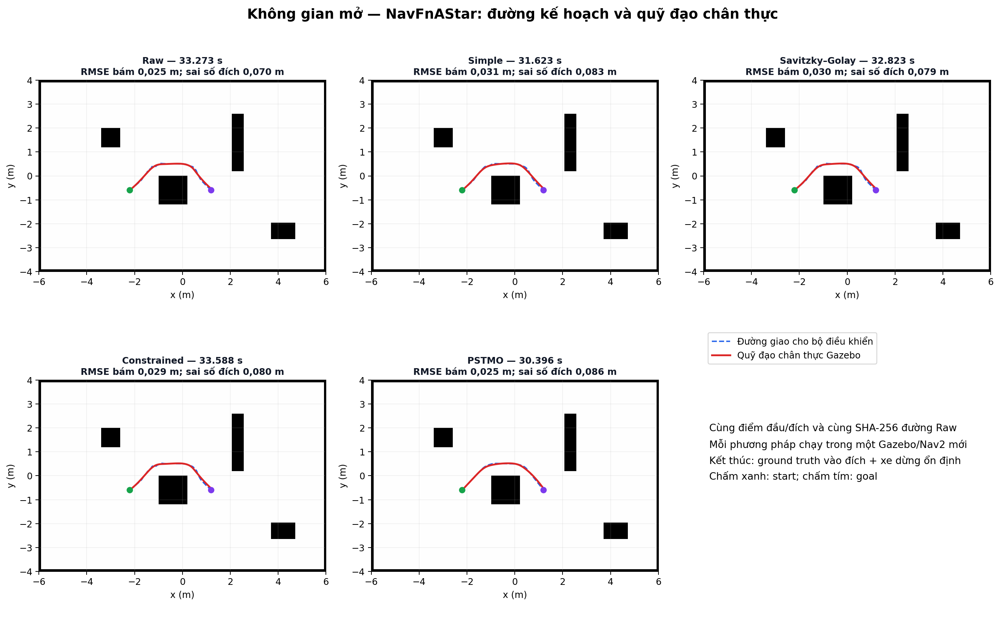
Bảng thực thi vòng kín:
| Phương án | Kết quả | Thời gian chạy (s) | Quãng đường (m) | Sai số vị trí đích (m) | Sai số góc hướng (°) | RMSE bám đường (m) | Sai số bám lớn nhất (m) |
|---|---|---|---|---|---|---|---|
| Raw | Đạt | 33,273 | 4,254 | 0,070 | 4,18 | 0,025 | 0,050 |
| Simple | Đạt | 31,623 | 4,221 | 0,083 | 3,97 | 0,031 | 0,061 |
| Savitzky–Golay | Đạt | 32,823 | 4,238 | 0,079 | 5,42 | 0,030 | 0,061 |
| Constrained | Đạt | 33,588 | 4,255 | 0,080 | 4,80 | 0,029 | 0,060 |
| PSTMO | Đạt | 30,396 | 4,217 | 0,086 | 5,61 | 0,025 | 0,045 |
Dữ liệu chẩn đoán PSTMO. 104 lần đánh giá hình dạng, 12 trạng thái quy hoạch động, 17 cạnh tương thích và thời gian xử lý nội bộ 46,77 ms.
Cấu hình hình học. Điểm đầu=(-2,200; -0,600; góc hướng 49,11°), điểm đích=(1,200; -0,600; góc hướng 0,00°). Phương vị thẳng đầu→đích là 0,00°; góc hướng đầu lệch 49,11° và góc hướng đích lệch 0,00° so với phương vị này.
Cấu trúc góc. Đường Raw có 173 mẫu tư thế; sau điều kiện hóa còn 5 điểm neo và tạo 3 góc. Có 0 góc rẽ trái, 3 góc rẽ phải; |θ| trung bình 33,11°, trung vị 37,99° và lớn nhất 41,78°. Quy hoạch động (DP) chọn 3 đoạn chuyển tiếp G², 0 quay tại chỗ và giữ nguyên 0 góc nhỏ.
Các góc lớn nhất của ca:
| STT góc | Tọa độ (m) | Góc rẽ θ (°) | Chiều rẽ | Cách xử lý được chọn | Khoảng cắt d (m) | Tỷ lệ α | Số phương án đạt / lượt đánh giá |
|---|---|---|---|---|---|---|---|
| 1 | (-1,270; 0,383) | -41,78 | Phải | Bézier G² | 0,800 | 0,320 | 26/26 |
| 3 | (0,478; 0,350) | -37,99 | Phải | Bézier G² | 0,243 | 0,320 | 24/26 |
| 2 | (-0,040; 0,486) | -19,57 | Phải | Bézier G² | 0,243 | 0,320 | 26/26 |
Bảng hình học năm phương án:
| Phương án | Kết quả | Chiều dài L (m) | Độ cong lớn nhất κmax (m⁻¹) | ∫κ²ds = Eκ (m⁻¹) | Thời gian xử lý (ms) | Khoảng hở nhỏ nhất (m) | Mẫu hình bao va chạm |
|---|---|---|---|---|---|---|---|
| Raw | Đạt | 4,355 | 18,063 | 72,393 | 3,00 | 0,145 | 0 |
| Simple | Đạt | 4,334 | 3,117 | 3,277 | 3,00 | 0,247 | 0 |
| Savitzky–Golay | Đạt | 4,346 | 5,834 | 7,870 | 0,00 | 0,247 | 0 |
| Constrained | Đạt | 4,348 | 3,888 | 6,943 | 15,00 | 0,247 | 0 |
| PSTMO | Đạt | 4,226 | 1,763 | 1,615 | 51,00 | 0,123 | 0 |
Phân tích so sánh:
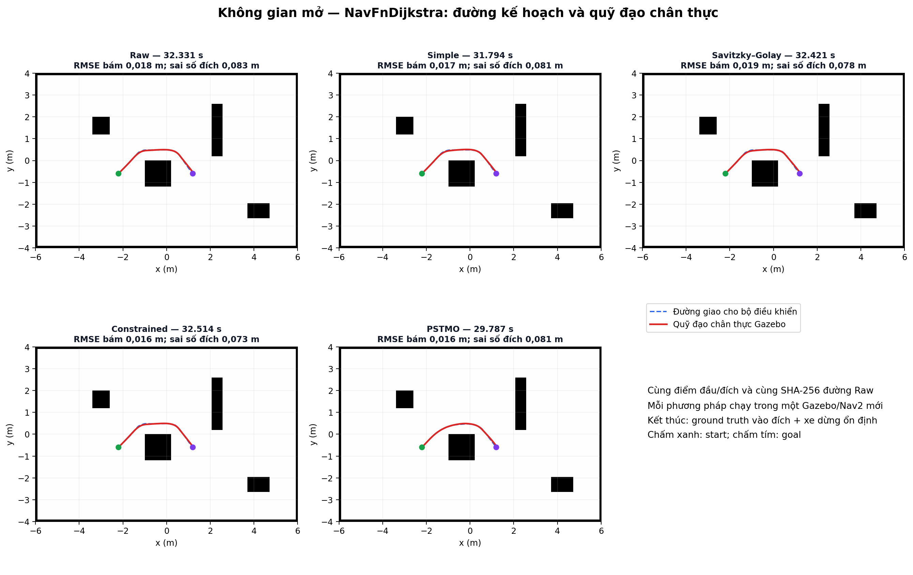
Bảng thực thi vòng kín:
| Phương án | Kết quả | Thời gian chạy (s) | Quãng đường (m) | Sai số vị trí đích (m) | Sai số góc hướng (°) | RMSE bám đường (m) | Sai số bám lớn nhất (m) |
|---|---|---|---|---|---|---|---|
| Raw | Đạt | 32,331 | 4,259 | 0,083 | 5,10 | 0,018 | 0,051 |
| Simple | Đạt | 31,794 | 4,245 | 0,081 | 5,58 | 0,017 | 0,038 |
| Savitzky–Golay | Đạt | 32,421 | 4,251 | 0,078 | 4,90 | 0,019 | 0,044 |
| Constrained | Đạt | 32,514 | 4,251 | 0,073 | 4,01 | 0,016 | 0,036 |
| PSTMO | Đạt | 29,787 | 4,166 | 0,081 | 5,11 | 0,016 | 0,040 |
Dữ liệu chẩn đoán PSTMO. 78 lần đánh giá hình dạng, 9 trạng thái quy hoạch động, 12 cạnh tương thích và thời gian xử lý nội bộ 51,62 ms.
Cấu hình hình học. Điểm đầu=(-2,200; -0,600; góc hướng 49,11°), điểm đích=(1,200; -0,600; góc hướng 0,00°). Phương vị thẳng đầu→đích là 0,00°; góc hướng đầu lệch 49,11° và góc hướng đích lệch 0,00° so với phương vị này.
Cấu trúc góc. Đường Raw có 78 mẫu tư thế; sau điều kiện hóa còn 5 điểm neo và tạo 3 góc. Có 3 góc rẽ trái, 0 góc rẽ phải; |θ| trung bình 31,58°, trung vị 38,13° và lớn nhất 45,46°. Quy hoạch động (DP) chọn 3 đoạn chuyển tiếp G², 0 quay tại chỗ và giữ nguyên 0 góc nhỏ.
Các góc lớn nhất của ca:
| STT góc | Tọa độ (m) | Góc rẽ θ (°) | Chiều rẽ | Cách xử lý được chọn | Khoảng cắt d (m) | Tỷ lệ α | Số phương án đạt / lượt đánh giá |
|---|---|---|---|---|---|---|---|
| 3 | (0,375; -1,625) | 45,46 | Trái | Bézier G² | 0,226 | 0,320 | 22/26 |
| 1 | (-1,175; -1,575) | 38,13 | Trái | Bézier G² | 0,502 | 0,320 | 25/26 |
| 2 | (-0,125; -1,675) | 11,15 | Trái | Bézier G² | 0,226 | 0,320 | 26/26 |
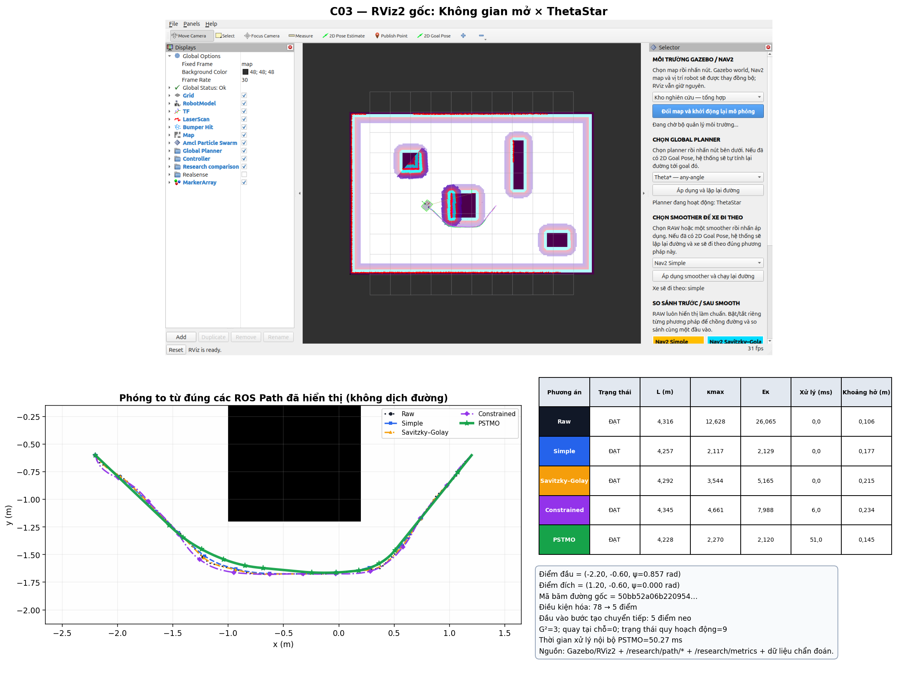
Bảng hình học năm phương án:
| Phương án | Kết quả | Chiều dài L (m) | Độ cong lớn nhất κmax (m⁻¹) | ∫κ²ds = Eκ (m⁻¹) | Thời gian xử lý (ms) | Khoảng hở nhỏ nhất (m) | Mẫu hình bao va chạm |
|---|---|---|---|---|---|---|---|
| Raw | Đạt | 4,316 | 12,628 | 26,065 | 0,00 | 0,106 | 0 |
| Simple | Đạt | 4,257 | 2,117 | 2,129 | 0,00 | 0,177 | 0 |
| Savitzky–Golay | Đạt | 4,292 | 3,544 | 5,165 | 0,00 | 0,215 | 0 |
| Constrained | Đạt | 4,345 | 4,661 | 7,988 | 6,00 | 0,234 | 0 |
| PSTMO | Đạt | 4,228 | 2,270 | 2,120 | 51,00 | 0,145 | 0 |
Phân tích so sánh:
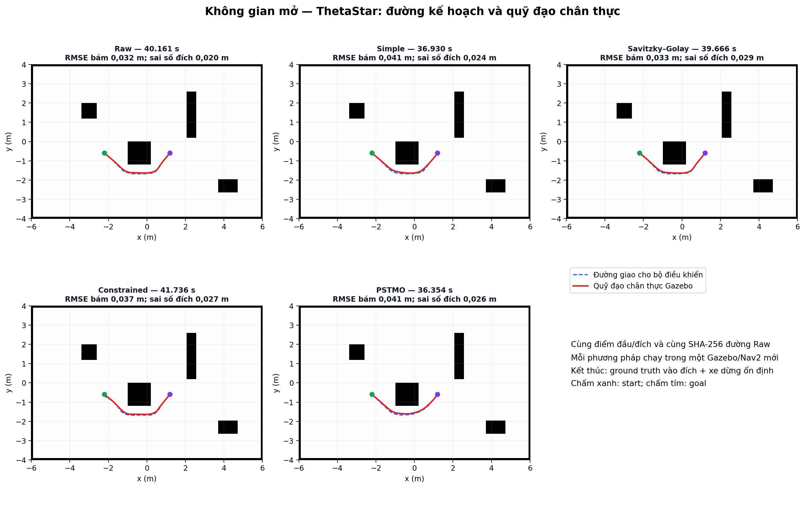
Bảng thực thi vòng kín:
| Phương án | Kết quả | Thời gian chạy (s) | Quãng đường (m) | Sai số vị trí đích (m) | Sai số góc hướng (°) | RMSE bám đường (m) | Sai số bám lớn nhất (m) |
|---|---|---|---|---|---|---|---|
| Raw | Đạt | 40,161 | 4,208 | 0,020 | 4,19 | 0,032 | 0,066 |
| Simple | Đạt | 36,930 | 4,147 | 0,024 | 4,40 | 0,041 | 0,071 |
| Savitzky–Golay | Đạt | 39,666 | 4,195 | 0,029 | 4,89 | 0,033 | 0,067 |
| Constrained | Đạt | 41,736 | 4,217 | 0,027 | 4,26 | 0,037 | 0,065 |
| PSTMO | Đạt | 36,354 | 4,090 | 0,026 | 5,09 | 0,041 | 0,074 |
Dữ liệu chẩn đoán PSTMO. 78 lần đánh giá hình dạng, 9 trạng thái quy hoạch động, 10 cạnh tương thích và thời gian xử lý nội bộ 50,27 ms.
Cấu hình hình học. Điểm đầu=(-2,200; -0,600; góc hướng 49,11°), điểm đích=(1,200; -0,600; góc hướng 0,00°). Phương vị thẳng đầu→đích là 0,00°; góc hướng đầu lệch 49,11° và góc hướng đích lệch 0,00° so với phương vị này.
Cấu trúc góc. Đường Raw có 72 mẫu tư thế; sau điều kiện hóa còn 5 điểm neo và tạo 3 góc. Có 0 góc rẽ trái, 3 góc rẽ phải; |θ| trung bình 30,81°, trung vị 36,31° và lớn nhất 39,54°. Quy hoạch động (DP) chọn 3 đoạn chuyển tiếp G², 0 quay tại chỗ và giữ nguyên 0 góc nhỏ.
Các góc lớn nhất của ca:
| STT góc | Tọa độ (m) | Góc rẽ θ (°) | Chiều rẽ | Cách xử lý được chọn | Khoảng cắt d (m) | Tỷ lệ α | Số phương án đạt / lượt đánh giá |
|---|---|---|---|---|---|---|---|
| 3 | (0,400; 0,318) | -39,54 | Phải | Bézier G² | 0,380 | 0,320 | 23/26 |
| 1 | (-1,200; 0,349) | -36,31 | Phải | Bézier G² | 0,378 | 0,320 | 24/26 |
| 2 | (-0,400; 0,450) | -16,57 | Phải | Bézier G² | 0,378 | 0,320 | 26/26 |
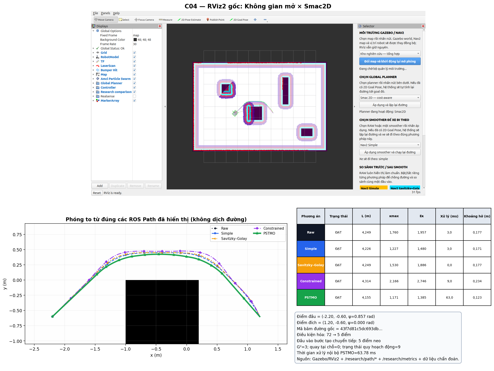
Bảng hình học năm phương án:
| Phương án | Kết quả | Chiều dài L (m) | Độ cong lớn nhất κmax (m⁻¹) | ∫κ²ds = Eκ (m⁻¹) | Thời gian xử lý (ms) | Khoảng hở nhỏ nhất (m) | Mẫu hình bao va chạm |
|---|---|---|---|---|---|---|---|
| Raw | Đạt | 4,249 | 1,760 | 1,957 | 3,00 | 0,177 | 0 |
| Simple | Đạt | 4,226 | 1,227 | 1,480 | 3,00 | 0,171 | 0 |
| Savitzky–Golay | Đạt | 4,249 | 1,530 | 1,886 | 0,00 | 0,177 | 0 |
| Constrained | Đạt | 4,314 | 2,166 | 2,746 | 9,00 | 0,234 | 0 |
| PSTMO | Đạt | 4,155 | 1,171 | 1,385 | 63,00 | 0,123 | 0 |
Phân tích so sánh:
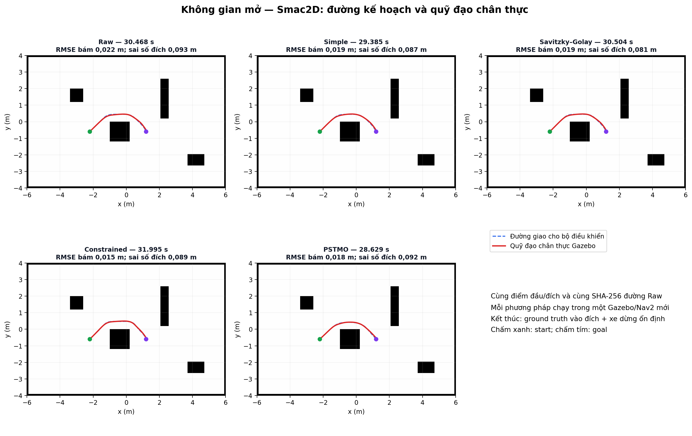
Bảng thực thi vòng kín:
| Phương án | Kết quả | Thời gian chạy (s) | Quãng đường (m) | Sai số vị trí đích (m) | Sai số góc hướng (°) | RMSE bám đường (m) | Sai số bám lớn nhất (m) |
|---|---|---|---|---|---|---|---|
| Raw | Đạt | 30,468 | 4,158 | 0,093 | 5,44 | 0,022 | 0,044 |
| Simple | Đạt | 29,385 | 4,146 | 0,087 | 5,38 | 0,019 | 0,038 |
| Savitzky–Golay | Đạt | 30,504 | 4,175 | 0,081 | 5,35 | 0,019 | 0,037 |
| Constrained | Đạt | 31,995 | 4,226 | 0,089 | 4,52 | 0,015 | 0,033 |
| PSTMO | Đạt | 28,629 | 4,069 | 0,092 | 5,00 | 0,018 | 0,047 |
Dữ liệu chẩn đoán PSTMO. 78 lần đánh giá hình dạng, 9 trạng thái quy hoạch động, 8 cạnh tương thích và thời gian xử lý nội bộ 63,78 ms.
Cấu hình hình học. Điểm đầu=(-2,200; -0,600; góc hướng 49,11°), điểm đích=(1,200; -0,600; góc hướng 0,00°). Phương vị thẳng đầu→đích là 0,00°; góc hướng đầu lệch 49,11° và góc hướng đích lệch 0,00° so với phương vị này.
Cấu trúc góc. Đường Raw có 52 mẫu tư thế; sau điều kiện hóa còn 6 điểm neo và tạo 4 góc. Có 1 góc rẽ trái, 3 góc rẽ phải; |θ| trung bình 32,02°, trung vị 27,94° và lớn nhất 48,14°. Quy hoạch động (DP) chọn 4 đoạn chuyển tiếp G², 0 quay tại chỗ và giữ nguyên 0 góc nhỏ.
Các góc lớn nhất của ca:
| STT góc | Tọa độ (m) | Góc rẽ θ (°) | Chiều rẽ | Cách xử lý được chọn | Khoảng cắt d (m) | Tỷ lệ α | Số phương án đạt / lượt đánh giá |
|---|---|---|---|---|---|---|---|
| 3 | (0,277; 0,401) | -48,14 | Phải | Bézier G² | 0,464 | 0,320 | 21/26 |
| 4 | (0,938; -0,482) | 28,94 | Trái | Bézier G² | 0,287 | 0,320 | 11/13 |
| 1 | (-1,375; 0,253) | -26,93 | Phải | Bézier G² | 0,333 | 0,320 | 26/26 |
| 2 | (-0,698; 0,486) | -24,05 | Phải | Bézier G² | 0,333 | 0,320 | 25/26 |
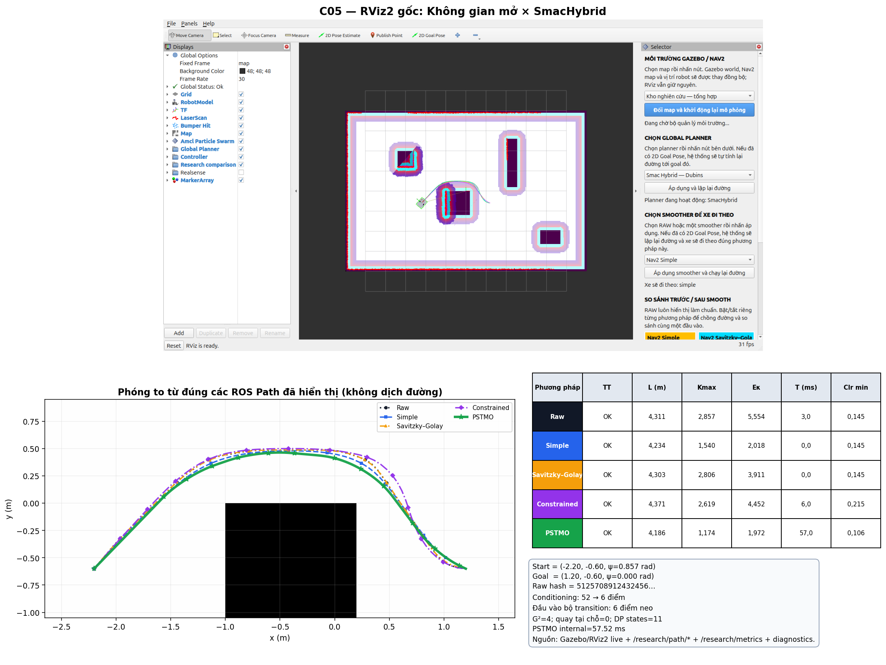
Bảng hình học năm phương án:
| Phương án | Kết quả | Chiều dài L (m) | Độ cong lớn nhất κmax (m⁻¹) | ∫κ²ds = Eκ (m⁻¹) | Thời gian xử lý (ms) | Khoảng hở nhỏ nhất (m) | Mẫu hình bao va chạm |
|---|---|---|---|---|---|---|---|
| Raw | Đạt | 4,311 | 2,857 | 5,554 | 3,00 | 0,145 | 0 |
| Simple | Đạt | 4,234 | 1,540 | 2,018 | 0,00 | 0,145 | 0 |
| Savitzky–Golay | Đạt | 4,303 | 2,806 | 3,911 | 0,00 | 0,145 | 0 |
| Constrained | Đạt | 4,371 | 2,619 | 4,452 | 6,00 | 0,215 | 0 |
| PSTMO | Đạt | 4,186 | 1,174 | 1,972 | 57,00 | 0,106 | 0 |
Phân tích so sánh:
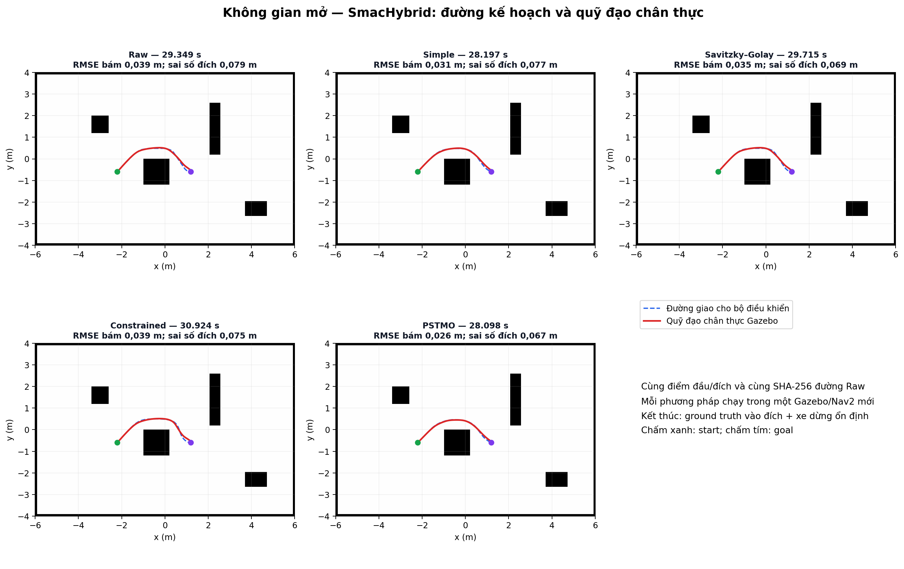
Bảng thực thi vòng kín:
| Phương án | Kết quả | Thời gian chạy (s) | Quãng đường (m) | Sai số vị trí đích (m) | Sai số góc hướng (°) | RMSE bám đường (m) | Sai số bám lớn nhất (m) |
|---|---|---|---|---|---|---|---|
| Raw | Đạt | 29,349 | 4,197 | 0,079 | 4,90 | 0,039 | 0,124 |
| Simple | Đạt | 28,197 | 4,145 | 0,077 | 5,11 | 0,031 | 0,083 |
| Savitzky–Golay | Đạt | 29,715 | 4,198 | 0,069 | 5,02 | 0,035 | 0,108 |
| Constrained | Đạt | 30,924 | 4,235 | 0,075 | 4,97 | 0,039 | 0,119 |
| PSTMO | Đạt | 28,098 | 4,100 | 0,067 | 5,48 | 0,026 | 0,068 |
Dữ liệu chẩn đoán PSTMO. 91 lần đánh giá hình dạng, 11 trạng thái quy hoạch động, 15 cạnh tương thích và thời gian xử lý nội bộ 57,52 ms.
Kệ, thùng hàng, đoạn chéo và góc vuông cùng xuất hiện; phù hợp kiểm tra sự phối hợp giữa đường chéo dài và các chuyển hướng cục bộ.
Cấu hình hình học. Điểm đầu=(-5,000; -3,000; góc hướng 2,89°), điểm đích=(-2,000; -0,500; góc hướng 39,81°). Phương vị thẳng đầu→đích là 39,81°; góc hướng đầu lệch -36,92° và góc hướng đích lệch -0,00° so với phương vị này.
Cấu trúc góc. Đường Raw có 182 mẫu tư thế; sau điều kiện hóa còn 5 điểm neo và tạo 3 góc. Có 2 góc rẽ trái, 1 góc rẽ phải; |θ| trung bình 28,39°, trung vị 27,51° và lớn nhất 40,10°. Quy hoạch động (DP) chọn 3 đoạn chuyển tiếp G², 0 quay tại chỗ và giữ nguyên 0 góc nhỏ.
Các góc lớn nhất của ca:
| STT góc | Tọa độ (m) | Góc rẽ θ (°) | Chiều rẽ | Cách xử lý được chọn | Khoảng cắt d (m) | Tỷ lệ α | Số phương án đạt / lượt đánh giá |
|---|---|---|---|---|---|---|---|
| 1 | (-2,919; -2,765) | 40,10 | Trái | Bézier G² | 0,125 | 0,320 | 21/26 |
| 2 | (-2,713; -2,548) | 27,51 | Trái | Bézier G² | 0,125 | 0,320 | 25/26 |
| 3 | (-2,224; -0,838) | -17,56 | Phải | Bézier G² | 0,405 | 0,320 | 13/13 |
Bảng hình học năm phương án:
| Phương án | Kết quả | Chiều dài L (m) | Độ cong lớn nhất κmax (m⁻¹) | ∫κ²ds = Eκ (m⁻¹) | Thời gian xử lý (ms) | Khoảng hở nhỏ nhất (m) | Mẫu hình bao va chạm |
|---|---|---|---|---|---|---|---|
| Raw | Đạt | 4,656 | 65,485 | 444,117 | 3,00 | 0,165 | 0 |
| Simple | Đạt | 4,583 | 3,989 | 4,956 | 0,00 | 0,234 | 0 |
| Savitzky–Golay | Đạt | 4,605 | 10,090 | 21,576 | 0,00 | 0,215 | 0 |
| Constrained | Đạt | 4,616 | 38,915 | 53,219 | 15,00 | 0,215 | 0 |
| PSTMO | Đạt | 4,557 | 3,592 | 3,241 | 33,00 | 0,256 | 0 |
Phân tích so sánh:
Bảng thực thi vòng kín:
| Phương án | Kết quả | Thời gian chạy (s) | Quãng đường (m) | Sai số vị trí đích (m) | Sai số góc hướng (°) | RMSE bám đường (m) | Sai số bám lớn nhất (m) |
|---|---|---|---|---|---|---|---|
| Raw | Đạt | 31,911 | 4,537 | 0,014 | 3,66 | 0,022 | 0,040 |
| Simple | Đạt | 31,194 | 4,519 | 0,012 | 3,84 | 0,025 | 0,045 |
| Savitzky–Golay | Đạt | 31,839 | 4,531 | 0,013 | 5,54 | 0,022 | 0,044 |
| Constrained | Đạt | 31,674 | 4,547 | 0,009 | 4,83 | 0,021 | 0,040 |
| PSTMO | Đạt | 31,416 | 4,517 | 0,020 | 4,15 | 0,015 | 0,046 |
Dữ liệu chẩn đoán PSTMO. 65 lần đánh giá hình dạng, 8 trạng thái quy hoạch động, 10 cạnh tương thích và thời gian xử lý nội bộ 31,81 ms.
Cấu hình hình học. Điểm đầu=(-5,000; -3,000; góc hướng 2,89°), điểm đích=(-2,000; -0,500; góc hướng 39,81°). Phương vị thẳng đầu→đích là 39,81°; góc hướng đầu lệch -36,92° và góc hướng đích lệch -0,00° so với phương vị này.
Cấu trúc góc. Đường Raw có 184 mẫu tư thế; sau điều kiện hóa còn 4 điểm neo và tạo 2 góc. Có 2 góc rẽ trái, 0 góc rẽ phải; |θ| trung bình 32,23°, trung vị 32,23° và lớn nhất 38,09°. Quy hoạch động (DP) chọn 2 đoạn chuyển tiếp G², 0 quay tại chỗ và giữ nguyên 0 góc nhỏ.
Các góc lớn nhất của ca:
| STT góc | Tọa độ (m) | Góc rẽ θ (°) | Chiều rẽ | Cách xử lý được chọn | Khoảng cắt d (m) | Tỷ lệ α | Số phương án đạt / lượt đánh giá |
|---|---|---|---|---|---|---|---|
| 1 | (-2,914; -2,759) | 38,09 | Trái | Bézier G² | 0,122 | 0,320 | 21/26 |
| 2 | (-2,705; -2,552) | 26,38 | Trái | Bézier G² | 0,122 | 0,320 | 25/26 |
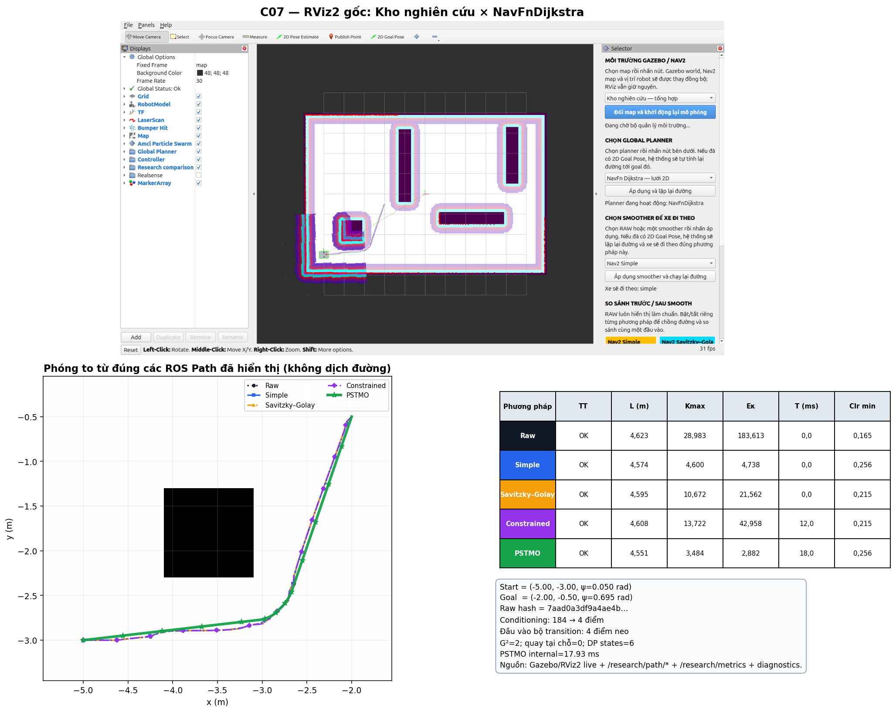
Bảng hình học năm phương án:
| Phương án | Kết quả | Chiều dài L (m) | Độ cong lớn nhất κmax (m⁻¹) | ∫κ²ds = Eκ (m⁻¹) | Thời gian xử lý (ms) | Khoảng hở nhỏ nhất (m) | Mẫu hình bao va chạm |
|---|---|---|---|---|---|---|---|
| Raw | Đạt | 4,623 | 28,983 | 183,613 | 0,00 | 0,165 | 0 |
| Simple | Đạt | 4,574 | 4,600 | 4,738 | 0,00 | 0,256 | 0 |
| Savitzky–Golay | Đạt | 4,595 | 10,672 | 21,562 | 0,00 | 0,215 | 0 |
| Constrained | Đạt | 4,608 | 13,722 | 42,958 | 12,00 | 0,215 | 0 |
| PSTMO | Đạt | 4,551 | 3,484 | 2,882 | 18,00 | 0,256 | 0 |
Phân tích so sánh:
Bảng thực thi vòng kín:
| Phương án | Kết quả | Thời gian chạy (s) | Quãng đường (m) | Sai số vị trí đích (m) | Sai số góc hướng (°) | RMSE bám đường (m) | Sai số bám lớn nhất (m) |
|---|---|---|---|---|---|---|---|
| Raw | Đạt | 31,788 | 4,531 | 0,011 | 4,89 | 0,021 | 0,048 |
| Simple | Đạt | 30,780 | 4,514 | 0,026 | 3,82 | 0,020 | 0,043 |
| Savitzky–Golay | Đạt | 31,035 | 4,513 | 0,025 | 4,29 | 0,022 | 0,051 |
| Constrained | Đạt | 31,542 | 4,525 | 0,015 | 4,34 | 0,020 | 0,049 |
| PSTMO | Đạt | 32,052 | 4,515 | 0,018 | 3,89 | 0,015 | 0,044 |
Dữ liệu chẩn đoán PSTMO. 52 lần đánh giá hình dạng, 6 trạng thái quy hoạch động, 4 cạnh tương thích và thời gian xử lý nội bộ 17,93 ms.
Cấu hình hình học. Điểm đầu=(-5,000; -3,000; góc hướng 2,89°), điểm đích=(-2,000; -0,500; góc hướng 39,81°). Phương vị thẳng đầu→đích là 39,81°; góc hướng đầu lệch -36,92° và góc hướng đích lệch -0,00° so với phương vị này.
Cấu trúc góc. Đường Raw có 88 mẫu tư thế; sau điều kiện hóa còn 5 điểm neo và tạo 3 góc. Có 2 góc rẽ trái, 1 góc rẽ phải; |θ| trung bình 26,81°, trung vị 26,13° và lớn nhất 41,19°. Quy hoạch động (DP) chọn 3 đoạn chuyển tiếp G², 0 quay tại chỗ và giữ nguyên 0 góc nhỏ.
Các góc lớn nhất của ca:
| STT góc | Tọa độ (m) | Góc rẽ θ (°) | Chiều rẽ | Cách xử lý được chọn | Khoảng cắt d (m) | Tỷ lệ α | Số phương án đạt / lượt đánh giá |
|---|---|---|---|---|---|---|---|
| 2 | (-2,925; -2,725) | 41,19 | Trái | Bézier G² | 0,152 | 0,360 | 19/26 |
| 3 | (-2,675; -2,475) | 26,13 | Trái | Bézier G² | 0,152 | 0,320 | 24/26 |
| 1 | (-4,425; -2,825) | -13,11 | Phải | Bézier G² | 0,601 | 0,320 | 13/13 |
Bảng hình học năm phương án:
| Phương án | Kết quả | Chiều dài L (m) | Độ cong lớn nhất κmax (m⁻¹) | ∫κ²ds = Eκ (m⁻¹) | Thời gian xử lý (ms) | Khoảng hở nhỏ nhất (m) | Mẫu hình bao va chạm |
|---|---|---|---|---|---|---|---|
| Raw | Đạt | 4,551 | 18,586 | 25,263 | 3,00 | 0,145 | 0 |
| Simple | Đạt | 4,505 | 2,224 | 1,887 | 0,00 | 0,215 | 0 |
| Savitzky–Golay | Đạt | 4,536 | 3,799 | 3,918 | 0,00 | 0,247 | 0 |
| Constrained | Đạt | 4,551 | 15,217 | 12,562 | 12,00 | 0,247 | 0 |
| PSTMO | Đạt | 4,524 | 3,020 | 2,722 | 33,00 | 0,234 | 0 |
Phân tích so sánh:
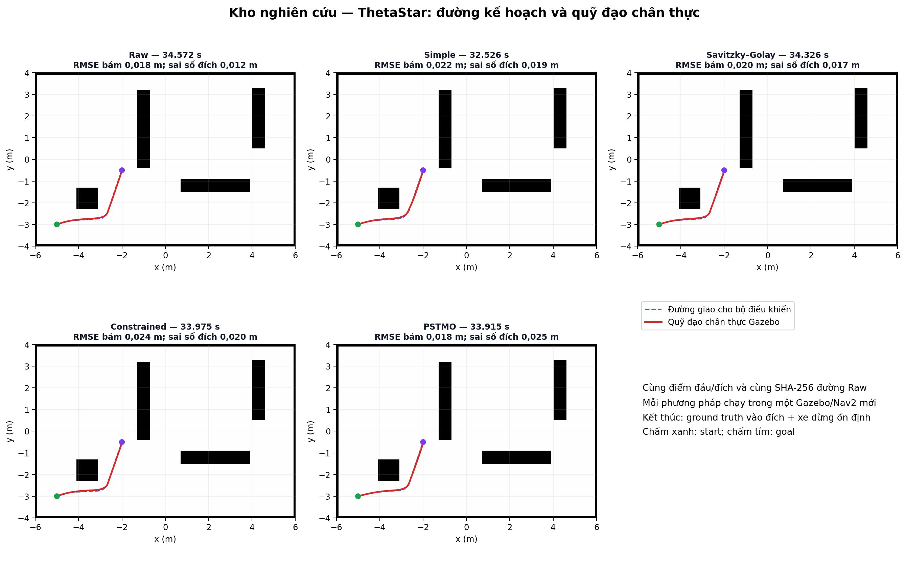
Bảng thực thi vòng kín:
| Phương án | Kết quả | Thời gian chạy (s) | Quãng đường (m) | Sai số vị trí đích (m) | Sai số góc hướng (°) | RMSE bám đường (m) | Sai số bám lớn nhất (m) |
|---|---|---|---|---|---|---|---|
| Raw | Đạt | 34,572 | 4,522 | 0,012 | 4,90 | 0,018 | 0,047 |
| Simple | Đạt | 32,526 | 4,461 | 0,019 | 4,41 | 0,022 | 0,045 |
| Savitzky–Golay | Đạt | 34,326 | 4,503 | 0,017 | 4,81 | 0,020 | 0,053 |
| Constrained | Đạt | 33,975 | 4,511 | 0,020 | 4,53 | 0,024 | 0,058 |
| PSTMO | Đạt | 33,915 | 4,496 | 0,025 | 5,51 | 0,018 | 0,043 |
Dữ liệu chẩn đoán PSTMO. 65 lần đánh giá hình dạng, 8 trạng thái quy hoạch động, 10 cạnh tương thích và thời gian xử lý nội bộ 33,02 ms.
Cấu hình hình học. Điểm đầu=(-5,000; -3,000; góc hướng 2,89°), điểm đích=(-2,000; -0,500; góc hướng 39,81°). Phương vị thẳng đầu→đích là 39,81°; góc hướng đầu lệch -36,92° và góc hướng đích lệch -0,00° so với phương vị này.
Cấu trúc góc. Đường Raw có 87 mẫu tư thế; sau điều kiện hóa còn 5 điểm neo và tạo 3 góc. Có 2 góc rẽ trái, 1 góc rẽ phải; |θ| trung bình 26,74°, trung vị 22,62° và lớn nhất 43,89°. Quy hoạch động (DP) chọn 3 đoạn chuyển tiếp G², 0 quay tại chỗ và giữ nguyên 0 góc nhỏ.
Các góc lớn nhất của ca:
| STT góc | Tọa độ (m) | Góc rẽ θ (°) | Chiều rẽ | Cách xử lý được chọn | Khoảng cắt d (m) | Tỷ lệ α | Số phương án đạt / lượt đánh giá |
|---|---|---|---|---|---|---|---|
| 3 | (-2,861; -2,631) | 43,89 | Trái | Bézier G² | 0,161 | 0,300 | 22/26 |
| 2 | (-3,200; -2,782) | 22,62 | Trái | Bézier G² | 0,161 | 0,320 | 25/26 |
| 1 | (-4,300; -2,810) | -13,69 | Phải | Bézier G² | 0,725 | 0,320 | 26/26 |
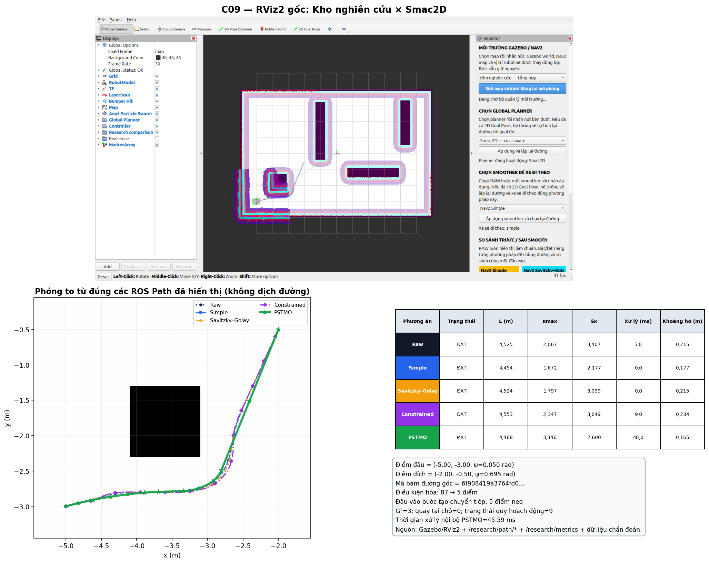
Bảng hình học năm phương án:
| Phương án | Kết quả | Chiều dài L (m) | Độ cong lớn nhất κmax (m⁻¹) | ∫κ²ds = Eκ (m⁻¹) | Thời gian xử lý (ms) | Khoảng hở nhỏ nhất (m) | Mẫu hình bao va chạm |
|---|---|---|---|---|---|---|---|
| Raw | Đạt | 4,525 | 2,067 | 3,407 | 3,00 | 0,215 | 0 |
| Simple | Đạt | 4,494 | 1,672 | 2,177 | 0,00 | 0,177 | 0 |
| Savitzky–Golay | Đạt | 4,524 | 1,797 | 3,099 | 0,00 | 0,215 | 0 |
| Constrained | Đạt | 4,553 | 2,347 | 3,649 | 9,00 | 0,234 | 0 |
| PSTMO | Đạt | 4,468 | 3,346 | 2,600 | 48,00 | 0,165 | 0 |
Phân tích so sánh:
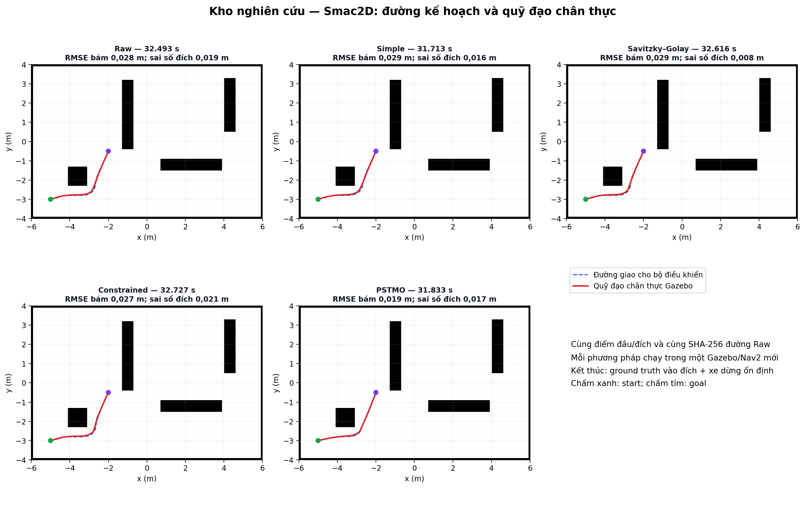
Bảng thực thi vòng kín:
| Phương án | Kết quả | Thời gian chạy (s) | Quãng đường (m) | Sai số vị trí đích (m) | Sai số góc hướng (°) | RMSE bám đường (m) | Sai số bám lớn nhất (m) |
|---|---|---|---|---|---|---|---|
| Raw | Đạt | 32,493 | 4,445 | 0,019 | 4,93 | 0,028 | 0,061 |
| Simple | Đạt | 31,713 | 4,417 | 0,016 | 4,77 | 0,029 | 0,066 |
| Savitzky–Golay | Đạt | 32,616 | 4,452 | 0,008 | 4,72 | 0,029 | 0,060 |
| Constrained | Đạt | 32,727 | 4,469 | 0,021 | 4,94 | 0,027 | 0,060 |
| PSTMO | Đạt | 31,833 | 4,420 | 0,017 | 5,27 | 0,019 | 0,046 |
Dữ liệu chẩn đoán PSTMO. 78 lần đánh giá hình dạng, 9 trạng thái quy hoạch động, 12 cạnh tương thích và thời gian xử lý nội bộ 45,59 ms.
Cấu hình hình học. Điểm đầu=(-5,000; -3,000; góc hướng 2,89°), điểm đích=(-2,000; -0,500; góc hướng 39,81°). Phương vị thẳng đầu→đích là 39,81°; góc hướng đầu lệch -36,92° và góc hướng đích lệch -0,00° so với phương vị này.
Cấu trúc góc. Đường Raw có 56 mẫu tư thế; sau điều kiện hóa còn 5 điểm neo và tạo 3 góc. Có 2 góc rẽ trái, 1 góc rẽ phải; |θ| trung bình 32,91°, trung vị 36,06° và lớn nhất 37,62°. Quy hoạch động (DP) chọn 3 đoạn chuyển tiếp G², 0 quay tại chỗ và giữ nguyên 0 góc nhỏ.
Các góc lớn nhất của ca:
| STT góc | Tọa độ (m) | Góc rẽ θ (°) | Chiều rẽ | Cách xử lý được chọn | Khoảng cắt d (m) | Tỷ lệ α | Số phương án đạt / lượt đánh giá |
|---|---|---|---|---|---|---|---|
| 1 | (-2,850; -2,658) | 37,62 | Trái | Bézier G² | 0,382 | 0,320 | 24/26 |
| 2 | (-2,291; -2,067) | 36,06 | Trái | Bézier G² | 0,382 | 0,320 | 25/26 |
| 3 | (-2,114; -0,679) | -25,05 | Phải | Bézier G² | 0,212 | 0,320 | 11/13 |
Bảng hình học năm phương án:
| Phương án | Kết quả | Chiều dài L (m) | Độ cong lớn nhất κmax (m⁻¹) | ∫κ²ds = Eκ (m⁻¹) | Thời gian xử lý (ms) | Khoảng hở nhỏ nhất (m) | Mẫu hình bao va chạm |
|---|---|---|---|---|---|---|---|
| Raw | Đạt | 4,635 | 2,857 | 4,585 | 6,00 | 0,247 | 0 |
| Simple | Đạt | 4,580 | 1,078 | 1,259 | 0,00 | 0,215 | 0 |
| Savitzky–Golay | Đạt | 4,627 | 2,353 | 2,649 | 0,00 | 0,247 | 0 |
| Constrained | Đạt | 4,638 | 2,696 | 2,999 | 6,00 | 0,247 | 0 |
| PSTMO | Đạt | 4,544 | 1,324 | 1,666 | 48,00 | 0,171 | 0 |
Phân tích so sánh:
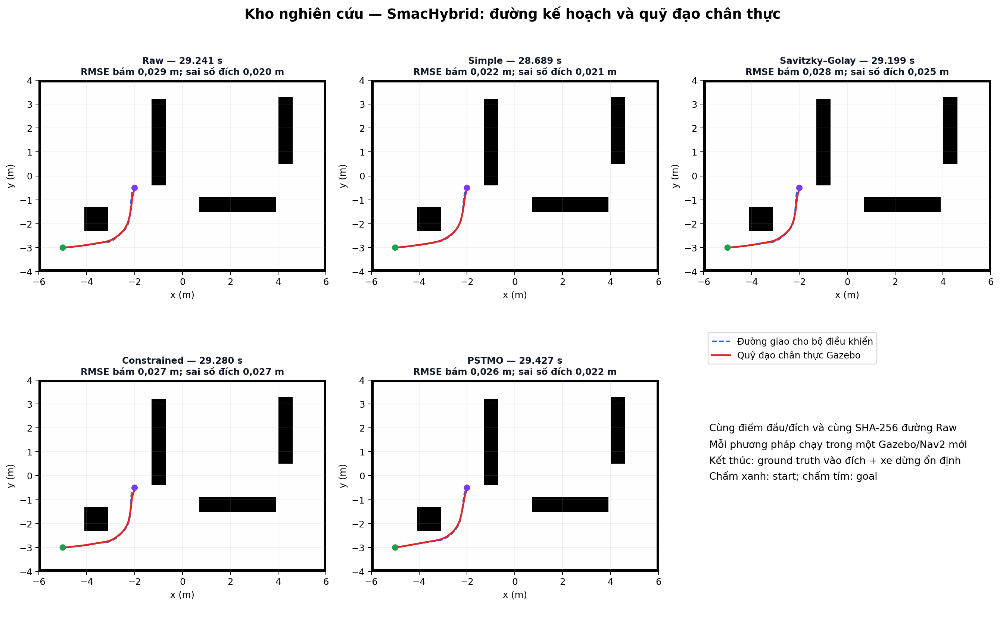
Bảng thực thi vòng kín:
| Phương án | Kết quả | Thời gian chạy (s) | Quãng đường (m) | Sai số vị trí đích (m) | Sai số góc hướng (°) | RMSE bám đường (m) | Sai số bám lớn nhất (m) |
|---|---|---|---|---|---|---|---|
| Raw | Đạt | 29,241 | 4,551 | 0,020 | 5,23 | 0,029 | 0,067 |
| Simple | Đạt | 28,689 | 4,535 | 0,021 | 4,97 | 0,022 | 0,047 |
| Savitzky–Golay | Đạt | 29,199 | 4,552 | 0,025 | 4,57 | 0,028 | 0,065 |
| Constrained | Đạt | 29,280 | 4,561 | 0,027 | 4,54 | 0,027 | 0,073 |
| PSTMO | Đạt | 29,427 | 4,481 | 0,022 | 4,06 | 0,026 | 0,049 |
Dữ liệu chẩn đoán PSTMO. 65 lần đánh giá hình dạng, 8 trạng thái quy hoạch động, 10 cạnh tương thích và thời gian xử lý nội bộ 45,36 ms.
Các dãy kệ tạo hành lang ngoằn ngoèo; khoảng hở hình bao và chuỗi góc gần nhau là các ràng buộc quan trọng.
Cấu hình hình học. Điểm đầu=(-5,000; -3,000; góc hướng 35,46°), điểm đích=(5,000; 3,000; góc hướng 30,96°). Phương vị thẳng đầu→đích là 30,96°; góc hướng đầu lệch 4,50° và góc hướng đích lệch -0,00° so với phương vị này.
Cấu trúc góc. Đường Raw có 576 mẫu tư thế; sau điều kiện hóa còn 14 điểm neo và tạo 12 góc. Có 5 góc rẽ trái, 7 góc rẽ phải; |θ| trung bình 33,45°, trung vị 34,98° và lớn nhất 59,25°. Quy hoạch động (DP) chọn 9 đoạn chuyển tiếp G², 3 quay tại chỗ và giữ nguyên 0 góc nhỏ.
Các góc lớn nhất của ca:
| STT góc | Tọa độ (m) | Góc rẽ θ (°) | Chiều rẽ | Cách xử lý được chọn | Khoảng cắt d (m) | Tỷ lệ α | Số phương án đạt / lượt đánh giá |
|---|---|---|---|---|---|---|---|
| 11 | (4,379; 3,156) | 59,25 | Trái | Quay tại chỗ | – | – | 9/22 |
| 8 | (0,188; 3,359) | -48,86 | Phải | Bézier G² | 0,496 | 0,320 | 25/26 |
| 10 | (4,250; 3,300) | -45,65 | Phải | Quay tại chỗ | – | – | 15/26 |
| 5 | (-1,801; 1,918) | -41,91 | Phải | Bézier G² | 0,176 | 0,300 | 21/26 |
| 12 | (4,600; 3,200) | -37,80 | Phải | Quay tại chỗ | – | – | 20/26 |
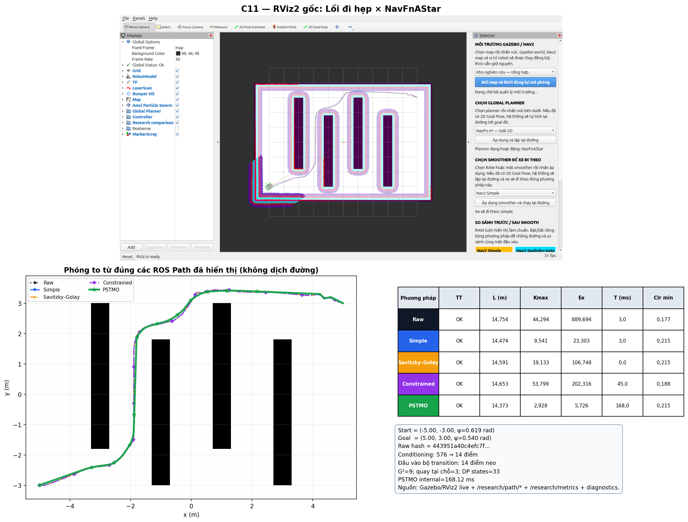
Bảng hình học năm phương án:
| Phương án | Kết quả | Chiều dài L (m) | Độ cong lớn nhất κmax (m⁻¹) | ∫κ²ds = Eκ (m⁻¹) | Thời gian xử lý (ms) | Khoảng hở nhỏ nhất (m) | Mẫu hình bao va chạm |
|---|---|---|---|---|---|---|---|
| Raw | Đạt | 14,754 | 44,294 | 889,694 | 3,00 | 0,177 | 0 |
| Simple | Đạt | 14,474 | 9,541 | 23,303 | 3,00 | 0,215 | 0 |
| Savitzky–Golay | Đạt | 14,591 | 19,133 | 106,748 | 0,00 | 0,215 | 0 |
| Constrained | Đạt | 14,653 | 53,799 | 202,316 | 45,00 | 0,188 | 0 |
| PSTMO | Đạt | 14,373 | 2,928 | 5,726 | 168,00 | 0,215 | 0 |
Phân tích so sánh:
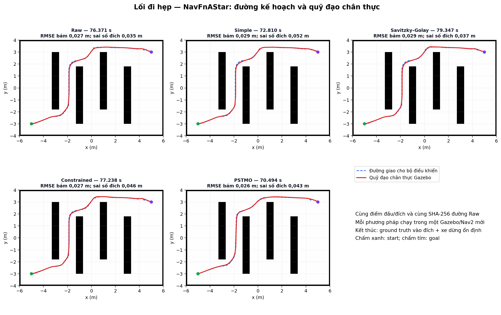
Bảng thực thi vòng kín:
| Phương án | Kết quả | Thời gian chạy (s) | Quãng đường (m) | Sai số vị trí đích (m) | Sai số góc hướng (°) | RMSE bám đường (m) | Sai số bám lớn nhất (m) |
|---|---|---|---|---|---|---|---|
| Raw | Đạt | 76,371 | 14,281 | 0,035 | 4,65 | 0,027 | 0,075 |
| Simple | Đạt | 72,810 | 14,245 | 0,052 | 3,69 | 0,029 | 0,084 |
| Savitzky–Golay | Đạt | 79,347 | 14,309 | 0,037 | 5,08 | 0,029 | 0,082 |
| Constrained | Đạt | 77,238 | 14,333 | 0,046 | 4,60 | 0,027 | 0,078 |
| PSTMO | Đạt | 70,494 | 14,167 | 0,043 | 4,55 | 0,026 | 0,077 |
Dữ liệu chẩn đoán PSTMO. 308 lần đánh giá hình dạng, 33 trạng thái quy hoạch động, 55 cạnh tương thích và thời gian xử lý nội bộ 168,12 ms.
Cấu hình hình học. Điểm đầu=(-5,000; -3,000; góc hướng 35,46°), điểm đích=(5,000; 3,000; góc hướng 30,96°). Phương vị thẳng đầu→đích là 30,96°; góc hướng đầu lệch 4,50° và góc hướng đích lệch -0,00° so với phương vị này.
Cấu trúc góc. Đường Raw có 572 mẫu tư thế; sau điều kiện hóa còn 10 điểm neo và tạo 8 góc. Có 3 góc rẽ trái, 5 góc rẽ phải; |θ| trung bình 23,69°, trung vị 23,84° và lớn nhất 47,50°. Quy hoạch động (DP) chọn 8 đoạn chuyển tiếp G², 0 quay tại chỗ và giữ nguyên 0 góc nhỏ.
Các góc lớn nhất của ca:
| STT góc | Tọa độ (m) | Góc rẽ θ (°) | Chiều rẽ | Cách xử lý được chọn | Khoảng cắt d (m) | Tỷ lệ α | Số phương án đạt / lượt đánh giá |
|---|---|---|---|---|---|---|---|
| 5 | (-1,813; 1,907) | -47,50 | Phải | Bézier G² | 0,442 | 0,320 | 24/26 |
| 2 | (-2,585; -2,304) | 30,74 | Trái | Bézier G² | 0,155 | 0,320 | 25/26 |
| 3 | (-2,310; -2,072) | 29,15 | Trái | Bézier G² | 0,155 | 0,320 | 25/26 |
| 7 | (0,585; 3,403) | -28,72 | Phải | Bézier G² | 0,800 | 0,320 | 12/13 |
| 4 | (-1,901; -0,986) | 18,96 | Trái | Bézier G² | 0,555 | 0,320 | 25/26 |
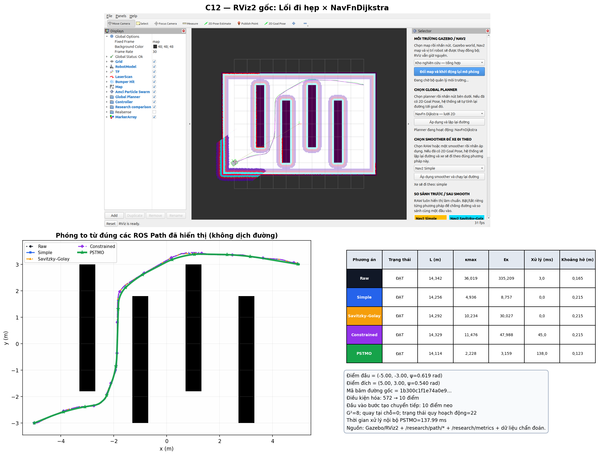
Bảng hình học năm phương án:
| Phương án | Kết quả | Chiều dài L (m) | Độ cong lớn nhất κmax (m⁻¹) | ∫κ²ds = Eκ (m⁻¹) | Thời gian xử lý (ms) | Khoảng hở nhỏ nhất (m) | Mẫu hình bao va chạm |
|---|---|---|---|---|---|---|---|
| Raw | Đạt | 14,342 | 36,019 | 335,209 | 3,00 | 0,165 | 0 |
| Simple | Đạt | 14,256 | 4,936 | 8,757 | 0,00 | 0,215 | 0 |
| Savitzky–Golay | Đạt | 14,292 | 10,234 | 30,027 | 0,00 | 0,215 | 0 |
| Constrained | Đạt | 14,329 | 11,476 | 47,988 | 45,00 | 0,215 | 0 |
| PSTMO | Đạt | 14,114 | 2,228 | 3,159 | 138,00 | 0,123 | 0 |
Phân tích so sánh:
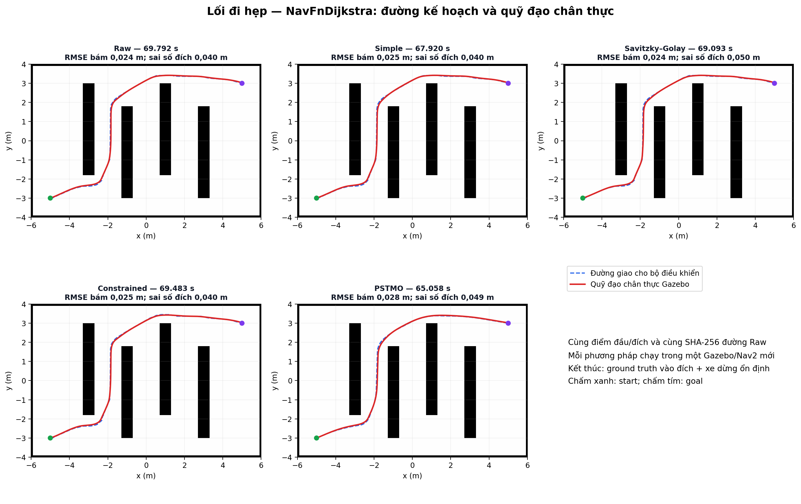
Bảng thực thi vòng kín:
| Phương án | Kết quả | Thời gian chạy (s) | Quãng đường (m) | Sai số vị trí đích (m) | Sai số góc hướng (°) | RMSE bám đường (m) | Sai số bám lớn nhất (m) |
|---|---|---|---|---|---|---|---|
| Raw | Đạt | 69,792 | 14,138 | 0,040 | 4,18 | 0,024 | 0,063 |
| Simple | Đạt | 67,920 | 14,122 | 0,040 | 3,11 | 0,025 | 0,062 |
| Savitzky–Golay | Đạt | 69,093 | 14,122 | 0,050 | 4,69 | 0,024 | 0,060 |
| Constrained | Đạt | 69,483 | 14,139 | 0,040 | 4,54 | 0,025 | 0,065 |
| PSTMO | Đạt | 65,058 | 13,998 | 0,049 | 5,88 | 0,028 | 0,069 |
Dữ liệu chẩn đoán PSTMO. 182 lần đánh giá hình dạng, 22 trạng thái quy hoạch động, 46 cạnh tương thích và thời gian xử lý nội bộ 137,99 ms.
Cấu hình hình học. Điểm đầu=(-5,000; -3,000; góc hướng 35,46°), điểm đích=(5,000; 3,000; góc hướng 30,96°). Phương vị thẳng đầu→đích là 30,96°; góc hướng đầu lệch 4,50° và góc hướng đích lệch -0,00° so với phương vị này.
Cấu trúc góc. Đường Raw có 273 mẫu tư thế; sau điều kiện hóa còn 9 điểm neo và tạo 7 góc. Có 5 góc rẽ trái, 2 góc rẽ phải; |θ| trung bình 23,63°, trung vị 23,55° và lớn nhất 45,93°. Quy hoạch động (DP) chọn 6 đoạn chuyển tiếp G², 0 quay tại chỗ và giữ nguyên 1 góc nhỏ.
Các góc lớn nhất của ca:
| STT góc | Tọa độ (m) | Góc rẽ θ (°) | Chiều rẽ | Cách xử lý được chọn | Khoảng cắt d (m) | Tỷ lệ α | Số phương án đạt / lượt đánh giá |
|---|---|---|---|---|---|---|---|
| 5 | (1,725; -1,975) | 45,93 | Trái | Bézier G² | 0,800 | 0,320 | 12/13 |
| 6 | (2,325; 2,025) | -36,47 | Phải | Bézier G² | 0,116 | 0,320 | 21/26 |
| 7 | (2,525; 2,225) | -27,61 | Phải | Bézier G² | 0,116 | 0,320 | 24/26 |
| 3 | (-0,475; -3,375) | 23,55 | Trái | Bézier G² | 0,422 | 0,320 | 26/26 |
| 1 | (-3,825; -3,425) | 19,89 | Trái | Bézier G² | 0,800 | 0,320 | 13/13 |
Bảng hình học năm phương án:
| Phương án | Kết quả | Chiều dài L (m) | Độ cong lớn nhất κmax (m⁻¹) | ∫κ²ds = Eκ (m⁻¹) | Thời gian xử lý (ms) | Khoảng hở nhỏ nhất (m) | Mẫu hình bao va chạm |
|---|---|---|---|---|---|---|---|
| Raw | Đạt | 14,191 | 15,101 | 46,840 | 9,00 | 0,145 | 0 |
| Simple | Đạt | 14,088 | 1,872 | 3,238 | 0,00 | 0,215 | 0 |
| Savitzky–Golay | Đạt | 14,146 | 3,968 | 8,360 | 0,00 | 0,215 | 0 |
| Constrained | Đạt | 14,207 | 8,753 | 22,164 | 27,00 | 0,215 | 0 |
| PSTMO | Đạt | 14,014 | 3,495 | 3,770 | 81,00 | 0,106 | 0 |
Phân tích so sánh:
Bảng thực thi vòng kín:
| Phương án | Kết quả | Thời gian chạy (s) | Quãng đường (m) | Sai số vị trí đích (m) | Sai số góc hướng (°) | RMSE bám đường (m) | Sai số bám lớn nhất (m) |
|---|---|---|---|---|---|---|---|
| Raw | Đạt | 69,366 | 14,016 | 0,033 | 0,24 | 0,032 | 0,080 |
| Simple | Đạt | 66,390 | 13,965 | 0,028 | 2,84 | 0,033 | 0,065 |
| Savitzky–Golay | Đạt | 69,207 | 14,003 | 0,041 | 5,16 | 0,031 | 0,076 |
| Constrained | Đạt | 68,388 | 14,027 | 0,031 | 3,59 | 0,032 | 0,068 |
| PSTMO | Đạt | 66,543 | 13,915 | 0,042 | 4,53 | 0,030 | 0,054 |
Dữ liệu chẩn đoán PSTMO. 130 lần đánh giá hình dạng, 17 trạng thái quy hoạch động, 27 cạnh tương thích và thời gian xử lý nội bộ 80,79 ms.
Cấu hình hình học. Điểm đầu=(-5,000; -3,000; góc hướng 35,46°), điểm đích=(5,000; 3,000; góc hướng 30,96°). Phương vị thẳng đầu→đích là 30,96°; góc hướng đầu lệch 4,50° và góc hướng đích lệch -0,00° so với phương vị này.
Cấu trúc góc. Đường Raw có 269 mẫu tư thế; sau điều kiện hóa còn 11 điểm neo và tạo 9 góc. Có 3 góc rẽ trái, 6 góc rẽ phải; |θ| trung bình 31,93°, trung vị 29,11° và lớn nhất 49,08°. Quy hoạch động (DP) chọn 9 đoạn chuyển tiếp G², 0 quay tại chỗ và giữ nguyên 0 góc nhỏ.
Các góc lớn nhất của ca:
| STT góc | Tọa độ (m) | Góc rẽ θ (°) | Chiều rẽ | Cách xử lý được chọn | Khoảng cắt d (m) | Tỷ lệ α | Số phương án đạt / lượt đánh giá |
|---|---|---|---|---|---|---|---|
| 5 | (-1,496; 2,149) | -49,08 | Phải | Bézier G² | 0,264 | 0,320 | 23/26 |
| 3 | (-1,885; -1,550) | 44,97 | Trái | Bézier G² | 0,466 | 0,320 | 25/26 |
| 2 | (-2,600; -2,224) | 38,77 | Trái | Bézier G² | 0,466 | 0,320 | 26/26 |
| 6 | (-0,650; 2,306) | 32,42 | Trái | Bézier G² | 0,405 | 0,320 | 25/26 |
| 1 | (-4,000; -2,335) | -29,11 | Phải | Bézier G² | 0,800 | 0,320 | 25/26 |
Bảng hình học năm phương án:
| Phương án | Kết quả | Chiều dài L (m) | Độ cong lớn nhất κmax (m⁻¹) | ∫κ²ds = Eκ (m⁻¹) | Thời gian xử lý (ms) | Khoảng hở nhỏ nhất (m) | Mẫu hình bao va chạm |
|---|---|---|---|---|---|---|---|
| Raw | Đạt | 14,430 | 2,324 | 8,315 | 15,00 | 0,215 | 0 |
| Simple | Đạt | 14,342 | 1,675 | 5,853 | 0,00 | 0,171 | 0 |
| Savitzky–Golay | Đạt | 14,427 | 2,188 | 7,873 | 0,00 | 0,215 | 0 |
| Constrained | Đạt | 14,503 | 2,422 | 8,469 | 27,00 | 0,220 | 0 |
| PSTMO | Đạt | 14,153 | 2,104 | 5,149 | 147,00 | 0,145 | 0 |
Phân tích so sánh:
Bảng thực thi vòng kín:
| Phương án | Kết quả | Thời gian chạy (s) | Quãng đường (m) | Sai số vị trí đích (m) | Sai số góc hướng (°) | RMSE bám đường (m) | Sai số bám lớn nhất (m) |
|---|---|---|---|---|---|---|---|
| Raw | Đạt | 71,892 | 14,209 | 0,040 | 5,80 | 0,028 | 0,085 |
| Simple | Đạt | 68,562 | 14,113 | 0,045 | 4,98 | 0,032 | 0,088 |
| Savitzky–Golay | Đạt | 71,169 | 14,186 | 0,037 | 4,52 | 0,029 | 0,089 |
| Constrained | Đạt | 72,963 | 14,263 | 0,042 | 5,02 | 0,032 | 0,076 |
| PSTMO | Đạt | 65,409 | 13,979 | 0,046 | 4,43 | 0,029 | 0,091 |
Dữ liệu chẩn đoán PSTMO. 221 lần đánh giá hình dạng, 26 trạng thái quy hoạch động, 51 cạnh tương thích và thời gian xử lý nội bộ 145,96 ms.
Cấu hình hình học. Điểm đầu=(-5,000; -3,000; góc hướng 35,46°), điểm đích=(5,000; 3,000; góc hướng 30,96°). Phương vị thẳng đầu→đích là 30,96°; góc hướng đầu lệch 4,50° và góc hướng đích lệch -0,00° so với phương vị này.
Cấu trúc góc. Đường Raw có 162 mẫu tư thế; sau điều kiện hóa còn 15 điểm neo và tạo 13 góc. Có 5 góc rẽ trái, 8 góc rẽ phải; |θ| trung bình 19,50°, trung vị 18,56° và lớn nhất 32,81°. Quy hoạch động (DP) chọn 13 đoạn chuyển tiếp G², 0 quay tại chỗ và giữ nguyên 0 góc nhỏ.
Các góc lớn nhất của ca:
| STT góc | Tọa độ (m) | Góc rẽ θ (°) | Chiều rẽ | Cách xử lý được chọn | Khoảng cắt d (m) | Tỷ lệ α | Số phương án đạt / lượt đánh giá |
|---|---|---|---|---|---|---|---|
| 7 | (-1,864; 1,688) | -32,81 | Phải | Bézier G² | 0,247 | 0,320 | 24/26 |
| 5 | (-2,088; -1,746) | 28,20 | Trái | Bézier G² | 0,157 | 0,320 | 25/26 |
| 4 | (-2,307; -2,038) | 26,88 | Trái | Bézier G² | 0,157 | 0,320 | 24/26 |
| 3 | (-2,798; -2,280) | 22,65 | Trái | Bézier G² | 0,249 | 0,320 | 25/26 |
| 13 | (2,650; 3,002) | 20,97 | Trái | Bézier G² | 0,430 | 0,320 | 26/26 |
Bảng hình học năm phương án:
| Phương án | Kết quả | Chiều dài L (m) | Độ cong lớn nhất κmax (m⁻¹) | ∫κ²ds = Eκ (m⁻¹) | Thời gian xử lý (ms) | Khoảng hở nhỏ nhất (m) | Mẫu hình bao va chạm |
|---|---|---|---|---|---|---|---|
| Raw | Đạt | 14,328 | 2,857 | 9,771 | 15,00 | 0,215 | 0 |
| Simple | Đạt | 14,182 | 1,088 | 3,016 | 3,00 | 0,165 | 0 |
| Savitzky–Golay | Đạt | 14,309 | 1,734 | 5,382 | 0,00 | 0,188 | 0 |
| Constrained | Đạt | 14,344 | 2,393 | 5,586 | 12,00 | 0,215 | 0 |
| PSTMO | Đạt | 14,191 | 2,006 | 3,824 | 237,00 | 0,145 | 0 |
Phân tích so sánh:
Bảng thực thi vòng kín:
| Phương án | Kết quả | Thời gian chạy (s) | Quãng đường (m) | Sai số vị trí đích (m) | Sai số góc hướng (°) | RMSE bám đường (m) | Sai số bám lớn nhất (m) |
|---|---|---|---|---|---|---|---|
| Raw | Đạt | 64,695 | 14,133 | 0,028 | 5,63 | 0,032 | 0,069 |
| Simple | Đạt | 61,617 | 14,033 | 0,037 | 4,25 | 0,030 | 0,062 |
| Savitzky–Golay | Đạt | 63,504 | 14,117 | 0,036 | 4,36 | 0,033 | 0,070 |
| Constrained | Đạt | 63,816 | 14,134 | 0,046 | 4,97 | 0,033 | 0,063 |
| PSTMO | Đạt | 62,154 | 14,065 | 0,023 | 4,39 | 0,030 | 0,078 |
Dữ liệu chẩn đoán PSTMO. 338 lần đánh giá hình dạng, 39 trạng thái quy hoạch động, 72 cạnh tương thích và thời gian xử lý nội bộ 246,42 ms.
Vách ngăn và cửa lệch tạo nhiều đoạn ngắn; môi trường này nhấn mạnh ràng buộc không chồng lấn giữa vùng cắt của hai góc kề nhau.
Cấu hình hình học. Điểm đầu=(-5,200; -3,000; góc hướng 49,11°), điểm đích=(5,200; 3,000; góc hướng 29,98°). Phương vị thẳng đầu→đích là 29,98°; góc hướng đầu lệch 19,13° và góc hướng đích lệch -0,00° so với phương vị này.
Cấu trúc góc. Đường Raw có 524 mẫu tư thế; sau điều kiện hóa còn 14 điểm neo và tạo 12 góc. Có 5 góc rẽ trái, 7 góc rẽ phải; |θ| trung bình 20,94°, trung vị 20,67° và lớn nhất 34,60°. Quy hoạch động (DP) chọn 12 đoạn chuyển tiếp G², 0 quay tại chỗ và giữ nguyên 0 góc nhỏ.
Các góc lớn nhất của ca:
| STT góc | Tọa độ (m) | Góc rẽ θ (°) | Chiều rẽ | Cách xử lý được chọn | Khoảng cắt d (m) | Tỷ lệ α | Số phương án đạt / lượt đánh giá |
|---|---|---|---|---|---|---|---|
| 5 | (0,532; 1,632) | -34,60 | Phải | Bézier G² | 0,186 | 0,320 | 22/26 |
| 10 | (3,328; 3,084) | -26,45 | Phải | Bézier G² | 0,147 | 0,320 | 25/26 |
| 4 | (0,343; 0,877) | 25,38 | Trái | Bézier G² | 0,364 | 0,320 | 25/26 |
| 11 | (3,645; 3,219) | -25,10 | Phải | Bézier G² | 0,147 | 0,320 | 24/26 |
| 9 | (2,953; 2,645) | 22,19 | Trái | Bézier G² | 0,264 | 0,320 | 26/26 |
Bảng hình học năm phương án:
| Phương án | Kết quả | Chiều dài L (m) | Độ cong lớn nhất κmax (m⁻¹) | ∫κ²ds = Eκ (m⁻¹) | Thời gian xử lý (ms) | Khoảng hở nhỏ nhất (m) | Mẫu hình bao va chạm |
|---|---|---|---|---|---|---|---|
| Raw | Đạt | 13,138 | 72,036 | 1324,914 | 3,00 | 0,165 | 0 |
| Simple | Đạt | 12,850 | 51,475 | 166,822 | 0,00 | 0,165 | 0 |
| Savitzky–Golay | Đạt | 12,985 | 75,254 | 451,512 | 0,00 | 0,123 | 0 |
| Constrained | Đạt | 12,993 | 51,254 | 290,970 | 54,00 | 0,165 | 0 |
| PSTMO | Đạt | 12,719 | 2,095 | 4,186 | 183,00 | 0,234 | 0 |
Phân tích so sánh:
Bảng thực thi vòng kín:
| Phương án | Kết quả | Thời gian chạy (s) | Quãng đường (m) | Sai số vị trí đích (m) | Sai số góc hướng (°) | RMSE bám đường (m) | Sai số bám lớn nhất (m) |
|---|---|---|---|---|---|---|---|
| Raw | Đạt | 72,963 | 12,719 | 0,047 | 5,05 | 0,018 | 0,078 |
| Simple | Đạt | 69,381 | 12,689 | 0,047 | 4,30 | 0,018 | 0,056 |
| Savitzky–Golay | Đạt | 72,561 | 12,730 | 0,049 | 3,74 | 0,018 | 0,070 |
| Constrained | Đạt | 74,466 | 12,710 | 0,051 | 4,20 | 0,020 | 0,080 |
| PSTMO | Đạt | 60,993 | 12,615 | 0,053 | 4,10 | 0,021 | 0,058 |
Dữ liệu chẩn đoán PSTMO. 312 lần đánh giá hình dạng, 36 trạng thái quy hoạch động, 60 cạnh tương thích và thời gian xử lý nội bộ 181,11 ms.
Cấu hình hình học. Điểm đầu=(-5,200; -3,000; góc hướng 49,11°), điểm đích=(5,200; 3,000; góc hướng 29,98°). Phương vị thẳng đầu→đích là 29,98°; góc hướng đầu lệch 19,13° và góc hướng đích lệch -0,00° so với phương vị này.
Cấu trúc góc. Đường Raw có 513 mẫu tư thế; sau điều kiện hóa còn 11 điểm neo và tạo 9 góc. Có 3 góc rẽ trái, 6 góc rẽ phải; |θ| trung bình 24,17°, trung vị 24,69° và lớn nhất 37,74°. Quy hoạch động (DP) chọn 9 đoạn chuyển tiếp G², 0 quay tại chỗ và giữ nguyên 0 góc nhỏ.
Các góc lớn nhất của ca:
| STT góc | Tọa độ (m) | Góc rẽ θ (°) | Chiều rẽ | Cách xử lý được chọn | Khoảng cắt d (m) | Tỷ lệ α | Số phương án đạt / lượt đánh giá |
|---|---|---|---|---|---|---|---|
| 3 | (0,382; 1,023) | 37,74 | Trái | Bézier G² | 0,245 | 0,320 | 25/26 |
| 8 | (3,543; 3,171) | -32,43 | Phải | Bézier G² | 0,449 | 0,320 | 25/26 |
| 4 | (0,483; 1,553) | -29,89 | Phải | Bézier G² | 0,171 | 0,340 | 23/26 |
| 5 | (0,738; 1,850) | -25,20 | Phải | Bézier G² | 0,171 | 0,320 | 24/26 |
| 2 | (-2,100; -1,174) | 24,69 | Trái | Bézier G² | 0,379 | 0,320 | 25/26 |
Bảng hình học năm phương án:
| Phương án | Kết quả | Chiều dài L (m) | Độ cong lớn nhất κmax (m⁻¹) | ∫κ²ds = Eκ (m⁻¹) | Thời gian xử lý (ms) | Khoảng hở nhỏ nhất (m) | Mẫu hình bao va chạm |
|---|---|---|---|---|---|---|---|
| Raw | Đạt | 12,852 | 56,698 | 653,250 | 6,00 | 0,165 | 0 |
| Simple | Đạt | 12,712 | 25,595 | 28,888 | 0,00 | 0,215 | 0 |
| Savitzky–Golay | Đạt | 12,769 | 48,972 | 108,337 | 0,00 | 0,165 | 0 |
| Constrained | Đạt | 12,786 | 14,201 | 77,899 | 45,00 | 0,215 | 0 |
| PSTMO | Đạt | 12,607 | 1,851 | 3,571 | 153,00 | 0,215 | 0 |
Phân tích so sánh:
Bảng thực thi vòng kín:
| Phương án | Kết quả | Thời gian chạy (s) | Quãng đường (m) | Sai số vị trí đích (m) | Sai số góc hướng (°) | RMSE bám đường (m) | Sai số bám lớn nhất (m) |
|---|---|---|---|---|---|---|---|
| Raw | Đạt | 69,207 | 12,602 | 0,054 | 4,05 | 0,021 | 0,084 |
| Simple | Đạt | 69,510 | 12,601 | 0,049 | 4,03 | 0,019 | 0,075 |
| Savitzky–Golay | Đạt | 70,974 | 12,604 | 0,051 | 4,86 | 0,020 | 0,082 |
| Constrained | Đạt | 69,156 | 12,596 | 0,052 | 3,65 | 0,023 | 0,081 |
| PSTMO | Đạt | 62,106 | 12,530 | 0,050 | 4,23 | 0,021 | 0,058 |
Dữ liệu chẩn đoán PSTMO. 234 lần đánh giá hình dạng, 27 trạng thái quy hoạch động, 47 cạnh tương thích và thời gian xử lý nội bộ 154,30 ms.
Cấu hình hình học. Điểm đầu=(-5,200; -3,000; góc hướng 49,11°), điểm đích=(5,200; 3,000; góc hướng 29,98°). Phương vị thẳng đầu→đích là 29,98°; góc hướng đầu lệch 19,13° và góc hướng đích lệch -0,00° so với phương vị này.
Cấu trúc góc. Đường Raw có 220 mẫu tư thế; sau điều kiện hóa còn 12 điểm neo và tạo 10 góc. Có 5 góc rẽ trái, 5 góc rẽ phải; |θ| trung bình 22,08°, trung vị 22,82° và lớn nhất 39,78°. Quy hoạch động (DP) chọn 10 đoạn chuyển tiếp G², 0 quay tại chỗ và giữ nguyên 0 góc nhỏ.
Các góc lớn nhất của ca:
| STT góc | Tọa độ (m) | Góc rẽ θ (°) | Chiều rẽ | Cách xử lý được chọn | Khoảng cắt d (m) | Tỷ lệ α | Số phương án đạt / lượt đánh giá |
|---|---|---|---|---|---|---|---|
| 9 | (3,425; 3,125) | -39,78 | Phải | Bézier G² | 0,347 | 0,320 | 25/26 |
| 5 | (0,425; 1,125) | 25,02 | Trái | Bézier G² | 0,268 | 0,320 | 25/26 |
| 6 | (0,625; 1,675) | -25,02 | Phải | Bézier G² | 0,116 | 0,320 | 25/26 |
| 7 | (0,825; 1,875) | -24,90 | Phải | Bézier G² | 0,116 | 0,320 | 25/26 |
| 2 | (-2,775; -1,375) | -23,47 | Phải | Bézier G² | 0,268 | 0,320 | 25/26 |
Bảng hình học năm phương án:
| Phương án | Kết quả | Chiều dài L (m) | Độ cong lớn nhất κmax (m⁻¹) | ∫κ²ds = Eκ (m⁻¹) | Thời gian xử lý (ms) | Khoảng hở nhỏ nhất (m) | Mẫu hình bao va chạm |
|---|---|---|---|---|---|---|---|
| Raw | Đạt | 12,707 | 16,676 | 73,765 | 6,00 | 0,145 | 0 |
| Simple | Đạt | 12,570 | 1,711 | 3,374 | 0,00 | 0,215 | 0 |
| Savitzky–Golay | Đạt | 12,637 | 3,404 | 10,114 | 0,00 | 0,215 | 0 |
| Constrained | Đạt | 12,700 | 13,619 | 32,183 | 18,00 | 0,215 | 0 |
| PSTMO | Đạt | 12,561 | 2,386 | 3,830 | 171,00 | 0,215 | 0 |
Phân tích so sánh:
Bảng thực thi vòng kín:
| Phương án | Kết quả | Thời gian chạy (s) | Quãng đường (m) | Sai số vị trí đích (m) | Sai số góc hướng (°) | RMSE bám đường (m) | Sai số bám lớn nhất (m) |
|---|---|---|---|---|---|---|---|
| Raw | Đạt | 73,608 | 12,584 | 0,041 | 4,83 | 0,014 | 0,056 |
| Simple | Đạt | 61,386 | 12,512 | 0,052 | 5,31 | 0,015 | 0,042 |
| Savitzky–Golay | Đạt | 70,605 | 12,575 | 0,042 | 5,02 | 0,016 | 0,043 |
| Constrained | Đạt | 76,479 | 12,602 | 0,043 | 5,32 | 0,015 | 0,069 |
| PSTMO | Đạt | 64,146 | 12,521 | 0,050 | 4,57 | 0,012 | 0,036 |
Dữ liệu chẩn đoán PSTMO. 260 lần đánh giá hình dạng, 30 trạng thái quy hoạch động, 57 cạnh tương thích và thời gian xử lý nội bộ 168,98 ms.
Cấu hình hình học. Điểm đầu=(-5,200; -3,000; góc hướng 49,11°), điểm đích=(5,200; 3,000; góc hướng 29,98°). Phương vị thẳng đầu→đích là 29,98°; góc hướng đầu lệch 19,13° và góc hướng đích lệch -0,00° so với phương vị này.
Cấu trúc góc. Đường Raw có 216 mẫu tư thế; sau điều kiện hóa còn 12 điểm neo và tạo 10 góc. Có 4 góc rẽ trái, 6 góc rẽ phải; |θ| trung bình 24,39°, trung vị 21,33° và lớn nhất 38,48°. Quy hoạch động (DP) chọn 10 đoạn chuyển tiếp G², 0 quay tại chỗ và giữ nguyên 0 góc nhỏ.
Các góc lớn nhất của ca:
| STT góc | Tọa độ (m) | Góc rẽ θ (°) | Chiều rẽ | Cách xử lý được chọn | Khoảng cắt d (m) | Tỷ lệ α | Số phương án đạt / lượt đánh giá |
|---|---|---|---|---|---|---|---|
| 1 | (-3,550; -1,385) | -38,48 | Phải | Bézier G² | 0,478 | 0,320 | 26/26 |
| 9 | (3,550; 3,109) | -37,13 | Phải | Bézier G² | 0,575 | 0,320 | 25/26 |
| 6 | (0,804; 1,799) | -33,36 | Phải | Bézier G² | 0,537 | 0,320 | 25/26 |
| 8 | (2,550; 2,306) | 30,82 | Trái | Bézier G² | 0,328 | 0,320 | 25/26 |
| 5 | (0,099; 0,803) | 21,78 | Trái | Bézier G² | 0,541 | 0,320 | 25/26 |
Bảng hình học năm phương án:
| Phương án | Kết quả | Chiều dài L (m) | Độ cong lớn nhất κmax (m⁻¹) | ∫κ²ds = Eκ (m⁻¹) | Thời gian xử lý (ms) | Khoảng hở nhỏ nhất (m) | Mẫu hình bao va chạm |
|---|---|---|---|---|---|---|---|
| Raw | Đạt | 12,806 | 2,324 | 8,766 | 6,00 | 0,215 | 0 |
| Simple | Đạt | 12,715 | 1,618 | 5,518 | 0,00 | 0,177 | 0 |
| Savitzky–Golay | Đạt | 12,804 | 2,188 | 8,390 | 0,00 | 0,215 | 0 |
| Constrained | Đạt | 12,885 | 2,498 | 10,244 | 21,00 | 0,215 | 0 |
| PSTMO | Đạt | 12,566 | 1,413 | 2,860 | 168,00 | 0,115 | 0 |
Phân tích so sánh:
Bảng thực thi vòng kín:
| Phương án | Kết quả | Thời gian chạy (s) | Quãng đường (m) | Sai số vị trí đích (m) | Sai số góc hướng (°) | RMSE bám đường (m) | Sai số bám lớn nhất (m) |
|---|---|---|---|---|---|---|---|
| Raw | Đạt | 68,370 | 12,683 | 0,036 | 4,19 | 0,020 | 0,060 |
| Simple | Đạt | 63,408 | 12,598 | 0,051 | 3,92 | 0,024 | 0,073 |
| Savitzky–Golay | Đạt | 67,170 | 12,693 | 0,046 | 4,01 | 0,021 | 0,070 |
| Constrained | Đạt | 70,590 | 12,759 | 0,040 | 3,77 | 0,021 | 0,056 |
| PSTMO | Đạt | 56,559 | 12,499 | 0,047 | 4,47 | 0,021 | 0,054 |
Dữ liệu chẩn đoán PSTMO. 247 lần đánh giá hình dạng, 29 trạng thái quy hoạch động, 54 cạnh tương thích và thời gian xử lý nội bộ 168,32 ms.
Cấu hình hình học. Điểm đầu=(-5,200; -3,000; góc hướng 49,11°), điểm đích=(5,200; 3,000; góc hướng 29,98°). Phương vị thẳng đầu→đích là 29,98°; góc hướng đầu lệch 19,13° và góc hướng đích lệch -0,00° so với phương vị này.
Cấu trúc góc. Đường Raw có 145 mẫu tư thế; sau điều kiện hóa còn 12 điểm neo và tạo 10 góc. Có 5 góc rẽ trái, 5 góc rẽ phải; |θ| trung bình 21,56°, trung vị 19,12° và lớn nhất 40,08°. Quy hoạch động (DP) chọn 10 đoạn chuyển tiếp G², 0 quay tại chỗ và giữ nguyên 0 góc nhỏ.
Các góc lớn nhất của ca:
| STT góc | Tọa độ (m) | Góc rẽ θ (°) | Chiều rẽ | Cách xử lý được chọn | Khoảng cắt d (m) | Tỷ lệ α | Số phương án đạt / lượt đánh giá |
|---|---|---|---|---|---|---|---|
| 10 | (3,473; 3,172) | -40,08 | Phải | Bézier G² | 0,518 | 0,320 | 26/26 |
| 7 | (0,609; 1,672) | -32,52 | Phải | Bézier G² | 0,246 | 0,320 | 24/26 |
| 3 | (-2,200; -1,202) | 23,26 | Trái | Bézier G² | 0,292 | 0,320 | 26/26 |
| 6 | (0,435; 1,158) | 20,43 | Trái | Bézier G² | 0,246 | 0,320 | 26/26 |
| 8 | (1,035; 2,014) | -19,28 | Phải | Bézier G² | 0,248 | 0,320 | 25/26 |
Bảng hình học năm phương án:
| Phương án | Kết quả | Chiều dài L (m) | Độ cong lớn nhất κmax (m⁻¹) | ∫κ²ds = Eκ (m⁻¹) | Thời gian xử lý (ms) | Khoảng hở nhỏ nhất (m) | Mẫu hình bao va chạm |
|---|---|---|---|---|---|---|---|
| Raw | Đạt | 12,725 | 2,857 | 11,714 | 9,00 | 0,115 | 0 |
| Simple | Đạt | 12,577 | 1,010 | 2,623 | 3,00 | 0,123 | 0 |
| Savitzky–Golay | Đạt | 12,698 | 2,155 | 6,629 | 0,00 | 0,123 | 0 |
| Constrained | Đạt | 12,728 | 3,147 | 9,943 | 9,00 | 0,165 | 0 |
| PSTMO | Đạt | 12,539 | 1,484 | 2,656 | 156,00 | 0,165 | 0 |
Phân tích so sánh:
Bảng thực thi vòng kín:
| Phương án | Kết quả | Thời gian chạy (s) | Quãng đường (m) | Sai số vị trí đích (m) | Sai số góc hướng (°) | RMSE bám đường (m) | Sai số bám lớn nhất (m) |
|---|---|---|---|---|---|---|---|
| Raw | Đạt | 66,447 | 12,592 | 0,036 | 5,09 | 0,024 | 0,072 |
| Simple | Đạt | 57,192 | 12,490 | 0,043 | 4,14 | 0,021 | 0,049 |
| Savitzky–Golay | Đạt | 62,853 | 12,572 | 0,032 | 4,54 | 0,025 | 0,064 |
| Constrained | Đạt | 64,962 | 12,608 | 0,022 | 3,88 | 0,023 | 0,075 |
| PSTMO | Đạt | 59,532 | 12,487 | 0,042 | 4,20 | 0,017 | 0,036 |
Dữ liệu chẩn đoán PSTMO. 247 lần đánh giá hình dạng, 29 trạng thái quy hoạch động, 51 cạnh tương thích và thời gian xử lý nội bộ 156,81 ms.
Các lối dọc–ngang giao nhau; dùng để kiểm tra đoạn chuyển tiếp khi robot vào và rời vùng giao cắt.
Cấu hình hình học. Điểm đầu=(-2,000; -2,800; góc hướng 87,11°), điểm đích=(2,000; 2,800; góc hướng 54,46°). Phương vị thẳng đầu→đích là 54,46°; góc hướng đầu lệch 32,65° và góc hướng đích lệch 0,00° so với phương vị này.
Cấu trúc góc. Đường Raw có 311 mẫu tư thế; sau điều kiện hóa còn 8 điểm neo và tạo 6 góc. Có 3 góc rẽ trái, 3 góc rẽ phải; |θ| trung bình 27,68°, trung vị 25,49° và lớn nhất 41,81°. Quy hoạch động (DP) chọn 6 đoạn chuyển tiếp G², 0 quay tại chỗ và giữ nguyên 0 góc nhỏ.
Các góc lớn nhất của ca:
| STT góc | Tọa độ (m) | Góc rẽ θ (°) | Chiều rẽ | Cách xử lý được chọn | Khoảng cắt d (m) | Tỷ lệ α | Số phương án đạt / lượt đánh giá |
|---|---|---|---|---|---|---|---|
| 3 | (0,185; 0,720) | -41,81 | Phải | Bézier G² | 0,449 | 0,320 | 25/26 |
| 5 | (1,540; 0,878) | 38,84 | Trái | Bézier G² | 0,194 | 0,320 | 21/26 |
| 2 | (-1,683; -0,925) | -28,33 | Phải | Bézier G² | 0,221 | 0,320 | 24/26 |
| 4 | (1,134; 0,713) | 22,64 | Trái | Bézier G² | 0,194 | 0,320 | 24/26 |
| 6 | (1,760; 1,277) | 20,02 | Trái | Bézier G² | 0,203 | 0,320 | 24/26 |
Bảng hình học năm phương án:
| Phương án | Kết quả | Chiều dài L (m) | Độ cong lớn nhất κmax (m⁻¹) | ∫κ²ds = Eκ (m⁻¹) | Thời gian xử lý (ms) | Khoảng hở nhỏ nhất (m) | Mẫu hình bao va chạm |
|---|---|---|---|---|---|---|---|
| Raw | Đạt | 7,924 | 65,336 | 446,644 | 0,00 | 0,165 | 0 |
| Simple | Đạt | 7,826 | 42,151 | 54,986 | 0,00 | 0,165 | 0 |
| Savitzky–Golay | Đạt | 7,877 | 67,839 | 140,516 | 0,00 | 0,115 | 0 |
| Constrained | Đạt | 7,873 | 19,648 | 48,866 | 24,00 | 0,188 | 0 |
| PSTMO | Đạt | 7,714 | 2,249 | 3,449 | 93,00 | 0,215 | 0 |
Phân tích so sánh:
Bảng thực thi vòng kín:
| Phương án | Kết quả | Thời gian chạy (s) | Quãng đường (m) | Sai số vị trí đích (m) | Sai số góc hướng (°) | RMSE bám đường (m) | Sai số bám lớn nhất (m) |
|---|---|---|---|---|---|---|---|
| Raw | Đạt | 45,159 | 7,664 | 0,041 | 5,64 | 0,032 | 0,103 |
| Simple | Đạt | 43,536 | 7,647 | 0,036 | 4,81 | 0,030 | 0,096 |
| Savitzky–Golay | Đạt | 44,856 | 7,668 | 0,031 | 5,03 | 0,035 | 0,108 |
| Constrained | Đạt | 44,091 | 7,661 | 0,025 | 3,98 | 0,036 | 0,115 |
| PSTMO | Đạt | 41,307 | 7,601 | 0,028 | 4,49 | 0,027 | 0,081 |
Dữ liệu chẩn đoán PSTMO. 156 lần đánh giá hình dạng, 18 trạng thái quy hoạch động, 28 cạnh tương thích và thời gian xử lý nội bộ 91,30 ms.
Cấu hình hình học. Điểm đầu=(-2,000; -2,800; góc hướng 87,11°), điểm đích=(2,000; 2,800; góc hướng 54,46°). Phương vị thẳng đầu→đích là 54,46°; góc hướng đầu lệch 32,65° và góc hướng đích lệch 0,00° so với phương vị này.
Cấu trúc góc. Đường Raw có 305 mẫu tư thế; sau điều kiện hóa còn 5 điểm neo và tạo 3 góc. Có 1 góc rẽ trái, 2 góc rẽ phải; |θ| trung bình 33,59°, trung vị 36,88° và lớn nhất 49,12°. Quy hoạch động (DP) chọn 3 đoạn chuyển tiếp G², 0 quay tại chỗ và giữ nguyên 0 góc nhỏ.
Các góc lớn nhất của ca:
| STT góc | Tọa độ (m) | Góc rẽ θ (°) | Chiều rẽ | Cách xử lý được chọn | Khoảng cắt d (m) | Tỷ lệ α | Số phương án đạt / lượt đánh giá |
|---|---|---|---|---|---|---|---|
| 3 | (1,677; 1,025) | 49,12 | Trái | Bézier G² | 0,800 | 0,320 | 12/13 |
| 1 | (-1,769; -1,118) | -36,88 | Phải | Bézier G² | 0,159 | 0,340 | 22/26 |
| 2 | (-1,510; -0,856) | -14,76 | Phải | Bézier G² | 0,159 | 0,320 | 25/26 |
Bảng hình học năm phương án:
| Phương án | Kết quả | Chiều dài L (m) | Độ cong lớn nhất κmax (m⁻¹) | ∫κ²ds = Eκ (m⁻¹) | Thời gian xử lý (ms) | Khoảng hở nhỏ nhất (m) | Mẫu hình bao va chạm |
|---|---|---|---|---|---|---|---|
| Raw | Đạt | 7,667 | 32,931 | 238,702 | 3,00 | 0,165 | 0 |
| Simple | Đạt | 7,603 | 3,617 | 6,850 | 0,00 | 0,256 | 0 |
| Savitzky–Golay | Đạt | 7,631 | 7,777 | 23,953 | 0,00 | 0,215 | 0 |
| Constrained | Đạt | 7,641 | 11,281 | 21,330 | 24,00 | 0,256 | 0 |
| PSTMO | Đạt | 7,466 | 2,468 | 2,171 | 39,00 | 0,106 | 0 |
Phân tích so sánh:
Bảng thực thi vòng kín:
| Phương án | Kết quả | Thời gian chạy (s) | Quãng đường (m) | Sai số vị trí đích (m) | Sai số góc hướng (°) | RMSE bám đường (m) | Sai số bám lớn nhất (m) |
|---|---|---|---|---|---|---|---|
| Raw | Đạt | 43,689 | 7,507 | 0,033 | 4,74 | 0,019 | 0,065 |
| Simple | Đạt | 42,642 | 7,489 | 0,031 | 5,21 | 0,023 | 0,051 |
| Savitzky–Golay | Đạt | 43,002 | 7,510 | 0,033 | 4,75 | 0,022 | 0,045 |
| Constrained | Đạt | 43,671 | 7,503 | 0,041 | 4,10 | 0,021 | 0,049 |
| PSTMO | Đạt | 39,069 | 7,409 | 0,029 | 4,19 | 0,018 | 0,037 |
Dữ liệu chẩn đoán PSTMO. 65 lần đánh giá hình dạng, 8 trạng thái quy hoạch động, 10 cạnh tương thích và thời gian xử lý nội bộ 39,32 ms.
Cấu hình hình học. Điểm đầu=(-2,000; -2,800; góc hướng 87,11°), điểm đích=(2,000; 2,800; góc hướng 54,46°). Phương vị thẳng đầu→đích là 54,46°; góc hướng đầu lệch 32,65° và góc hướng đích lệch 0,00° so với phương vị này.
Cấu trúc góc. Đường Raw có 138 mẫu tư thế; sau điều kiện hóa còn 6 điểm neo và tạo 4 góc. Có 2 góc rẽ trái, 2 góc rẽ phải; |θ| trung bình 26,72°, trung vị 27,06° và lớn nhất 43,79°. Quy hoạch động (DP) chọn 4 đoạn chuyển tiếp G², 0 quay tại chỗ và giữ nguyên 0 góc nhỏ.
Các góc lớn nhất của ca:
| STT góc | Tọa độ (m) | Góc rẽ θ (°) | Chiều rẽ | Cách xử lý được chọn | Khoảng cắt d (m) | Tỷ lệ α | Số phương án đạt / lượt đánh giá |
|---|---|---|---|---|---|---|---|
| 1 | (-1,675; -1,075) | -43,79 | Phải | Bézier G² | 0,405 | 0,320 | 24/26 |
| 4 | (1,725; 1,125) | 42,31 | Trái | Bézier G² | 0,740 | 0,320 | 26/26 |
| 3 | (0,525; 0,175) | 11,80 | Trái | Bézier G² | 0,740 | 0,320 | 26/26 |
| 2 | (-0,975; -0,575) | -8,97 | Phải | Bézier G² | 0,405 | 0,320 | 26/26 |
Bảng hình học năm phương án:
| Phương án | Kết quả | Chiều dài L (m) | Độ cong lớn nhất κmax (m⁻¹) | ∫κ²ds = Eκ (m⁻¹) | Thời gian xử lý (ms) | Khoảng hở nhỏ nhất (m) | Mẫu hình bao va chạm |
|---|---|---|---|---|---|---|---|
| Raw | Đạt | 7,556 | 18,833 | 34,988 | 3,00 | 0,145 | 0 |
| Simple | Đạt | 7,492 | 1,771 | 2,055 | 0,00 | 0,215 | 0 |
| Savitzky–Golay | Đạt | 7,531 | 4,195 | 5,207 | 3,00 | 0,220 | 0 |
| Constrained | Đạt | 7,560 | 13,113 | 13,486 | 12,00 | 0,234 | 0 |
| PSTMO | Đạt | 7,411 | 1,221 | 1,270 | 84,00 | 0,123 | 0 |
Phân tích so sánh:
Bảng thực thi vòng kín:
| Phương án | Kết quả | Thời gian chạy (s) | Quãng đường (m) | Sai số vị trí đích (m) | Sai số góc hướng (°) | RMSE bám đường (m) | Sai số bám lớn nhất (m) |
|---|---|---|---|---|---|---|---|
| Raw | Đạt | 44,292 | 7,481 | 0,029 | 4,67 | 0,017 | 0,038 |
| Simple | Đạt | 39,969 | 7,433 | 0,034 | 5,49 | 0,017 | 0,037 |
| Savitzky–Golay | Đạt | 43,236 | 7,474 | 0,040 | 5,25 | 0,019 | 0,040 |
| Constrained | Đạt | 43,890 | 7,477 | 0,038 | 6,22 | 0,017 | 0,051 |
| PSTMO | Đạt | 38,538 | 7,361 | 0,035 | 5,21 | 0,019 | 0,037 |
Dữ liệu chẩn đoán PSTMO. 104 lần đánh giá hình dạng, 12 trạng thái quy hoạch động, 21 cạnh tương thích và thời gian xử lý nội bộ 83,09 ms.
Cấu hình hình học. Điểm đầu=(-2,000; -2,800; góc hướng 87,11°), điểm đích=(2,000; 2,800; góc hướng 54,46°). Phương vị thẳng đầu→đích là 54,46°; góc hướng đầu lệch 32,65° và góc hướng đích lệch 0,00° so với phương vị này.
Cấu trúc góc. Đường Raw có 137 mẫu tư thế; sau điều kiện hóa còn 8 điểm neo và tạo 6 góc. Có 3 góc rẽ trái, 3 góc rẽ phải; |θ| trung bình 28,79°, trung vị 29,00° và lớn nhất 39,06°. Quy hoạch động (DP) chọn 6 đoạn chuyển tiếp G², 0 quay tại chỗ và giữ nguyên 0 góc nhỏ.
Các góc lớn nhất của ca:
| STT góc | Tọa độ (m) | Góc rẽ θ (°) | Chiều rẽ | Cách xử lý được chọn | Khoảng cắt d (m) | Tỷ lệ α | Số phương án đạt / lượt đánh giá |
|---|---|---|---|---|---|---|---|
| 2 | (0,150; 0,715) | -39,06 | Phải | Bézier G² | 0,800 | 0,320 | 26/26 |
| 4 | (1,581; 1,011) | 34,62 | Trái | Bézier G² | 0,165 | 0,320 | 23/26 |
| 1 | (-1,668; -1,100) | -33,99 | Phải | Bézier G² | 0,800 | 0,320 | 12/13 |
| 5 | (1,775; 1,400) | 24,01 | Trái | Bézier G² | 0,192 | 0,320 | 24/26 |
| 3 | (1,250; 0,828) | 23,04 | Trái | Bézier G² | 0,165 | 0,320 | 25/26 |
Bảng hình học năm phương án:
| Phương án | Kết quả | Chiều dài L (m) | Độ cong lớn nhất κmax (m⁻¹) | ∫κ²ds = Eκ (m⁻¹) | Thời gian xử lý (ms) | Khoảng hở nhỏ nhất (m) | Mẫu hình bao va chạm |
|---|---|---|---|---|---|---|---|
| Raw | Đạt | 7,701 | 2,324 | 5,456 | 9,00 | 0,215 | 0 |
| Simple | Đạt | 7,646 | 1,598 | 3,735 | 0,00 | 0,188 | 0 |
| Savitzky–Golay | Đạt | 7,699 | 2,188 | 5,042 | 0,00 | 0,215 | 0 |
| Constrained | Đạt | 7,727 | 2,193 | 5,206 | 12,00 | 0,234 | 0 |
| PSTMO | Đạt | 7,521 | 2,364 | 2,876 | 84,00 | 0,106 | 0 |
Phân tích so sánh:
Bảng thực thi vòng kín:
| Phương án | Kết quả | Thời gian chạy (s) | Quãng đường (m) | Sai số vị trí đích (m) | Sai số góc hướng (°) | RMSE bám đường (m) | Sai số bám lớn nhất (m) |
|---|---|---|---|---|---|---|---|
| Raw | Đạt | 43,287 | 7,542 | 0,042 | 2,09 | 0,027 | 0,061 |
| Simple | Đạt | 42,237 | 7,513 | 0,041 | 3,98 | 0,023 | 0,059 |
| Savitzky–Golay | Đạt | 43,053 | 7,548 | 0,037 | 0,87 | 0,026 | 0,059 |
| Constrained | Đạt | 44,145 | 7,585 | 0,033 | 2,87 | 0,026 | 0,072 |
| PSTMO | Đạt | 40,659 | 7,437 | 0,032 | 4,69 | 0,023 | 0,057 |
Dữ liệu chẩn đoán PSTMO. 143 lần đánh giá hình dạng, 17 trạng thái quy hoạch động, 30 cạnh tương thích và thời gian xử lý nội bộ 83,59 ms.
Cấu hình hình học. Điểm đầu=(-2,000; -2,800; góc hướng 87,11°), điểm đích=(2,000; 2,800; góc hướng 54,46°). Phương vị thẳng đầu→đích là 54,46°; góc hướng đầu lệch 32,65° và góc hướng đích lệch 0,00° so với phương vị này.
Cấu trúc góc. Đường Raw có 90 mẫu tư thế; sau điều kiện hóa còn 7 điểm neo và tạo 5 góc. Có 2 góc rẽ trái, 3 góc rẽ phải; |θ| trung bình 25,45°, trung vị 21,84° và lớn nhất 46,41°. Quy hoạch động (DP) chọn 5 đoạn chuyển tiếp G², 0 quay tại chỗ và giữ nguyên 0 góc nhỏ.
Các góc lớn nhất của ca:
| STT góc | Tọa độ (m) | Góc rẽ θ (°) | Chiều rẽ | Cách xử lý được chọn | Khoảng cắt d (m) | Tỷ lệ α | Số phương án đạt / lượt đánh giá |
|---|---|---|---|---|---|---|---|
| 5 | (1,896; 1,244) | 46,41 | Trái | Bézier G² | 0,474 | 0,320 | 26/26 |
| 2 | (-1,639; -0,942) | -25,88 | Phải | Bézier G² | 0,156 | 0,320 | 23/26 |
| 1 | (-1,813; -1,259) | -21,84 | Phải | Bézier G² | 0,156 | 0,320 | 25/26 |
| 4 | (1,128; 0,606) | 18,76 | Trái | Bézier G² | 0,474 | 0,320 | 25/26 |
| 3 | (-0,150; 0,115) | -14,38 | Phải | Bézier G² | 0,800 | 0,320 | 26/26 |
Bảng hình học năm phương án:
| Phương án | Kết quả | Chiều dài L (m) | Độ cong lớn nhất κmax (m⁻¹) | ∫κ²ds = Eκ (m⁻¹) | Thời gian xử lý (ms) | Khoảng hở nhỏ nhất (m) | Mẫu hình bao va chạm |
|---|---|---|---|---|---|---|---|
| Raw | Đạt | 7,710 | 2,857 | 5,485 | 3,00 | 0,281 | 0 |
| Simple | Đạt | 7,632 | 1,521 | 1,906 | 0,00 | 0,247 | 0 |
| Savitzky–Golay | Đạt | 7,701 | 2,413 | 3,537 | 0,00 | 0,281 | 0 |
| Constrained | Đạt | 7,714 | 2,505 | 3,727 | 6,00 | 0,285 | 0 |
| PSTMO | Đạt | 7,592 | 1,859 | 2,133 | 99,00 | 0,234 | 0 |
Phân tích so sánh:
Bảng thực thi vòng kín:
| Phương án | Kết quả | Thời gian chạy (s) | Quãng đường (m) | Sai số vị trí đích (m) | Sai số góc hướng (°) | RMSE bám đường (m) | Sai số bám lớn nhất (m) |
|---|---|---|---|---|---|---|---|
| Raw | Đạt | 41,091 | 7,635 | 0,033 | 4,48 | 0,018 | 0,047 |
| Simple | Đạt | 39,057 | 7,550 | 0,038 | 4,28 | 0,023 | 0,045 |
| Savitzky–Golay | Đạt | 40,239 | 7,593 | 0,044 | 4,80 | 0,024 | 0,063 |
| Constrained | Đạt | 40,257 | 7,622 | 0,031 | 4,62 | 0,021 | 0,054 |
| PSTMO | Đạt | 39,117 | 7,510 | 0,037 | 4,03 | 0,022 | 0,055 |
Dữ liệu chẩn đoán PSTMO. 130 lần đánh giá hình dạng, 15 trạng thái quy hoạch động, 26 cạnh tương thích và thời gian xử lý nội bộ 97,35 ms.
Tuyến dài qua vùng điều phối có mật độ vật cản cao; đây cũng là nơi xuất hiện ca C30 bộc lộ giới hạn phối hợp giữa bộ lập kế hoạch, bộ làm mượt và bộ điều khiển.
Cấu hình hình học. Điểm đầu=(-5,200; 3,200; góc hướng 43,51°), điểm đích=(5,000; -2,800; góc hướng -30,47°). Phương vị thẳng đầu→đích là -30,47°; góc hướng đầu lệch 73,97° và góc hướng đích lệch 0,00° so với phương vị này.
Cấu trúc góc. Đường Raw có 626 mẫu tư thế; sau điều kiện hóa còn 12 điểm neo và tạo 10 góc. Có 7 góc rẽ trái, 3 góc rẽ phải; |θ| trung bình 24,58°, trung vị 25,96° và lớn nhất 43,39°. Quy hoạch động (DP) chọn 8 đoạn chuyển tiếp G², 2 quay tại chỗ và giữ nguyên 0 góc nhỏ.
Các góc lớn nhất của ca:
| STT góc | Tọa độ (m) | Góc rẽ θ (°) | Chiều rẽ | Cách xử lý được chọn | Khoảng cắt d (m) | Tỷ lệ α | Số phương án đạt / lượt đánh giá |
|---|---|---|---|---|---|---|---|
| 3 | (-4,868; -1,818) | 43,39 | Trái | Bézier G² | 0,184 | 0,320 | 22/26 |
| 8 | (3,418; -1,885) | -38,76 | Phải | Quay tại chỗ | – | – | 20/26 |
| 9 | (3,690; -2,494) | 32,97 | Trái | Quay tại chỗ | – | – | 20/26 |
| 2 | (-5,173; -1,531) | 30,52 | Trái | Bézier G² | 0,122 | 0,320 | 21/26 |
| 7 | (3,200; -1,772) | -28,59 | Phải | Bézier G² | 0,098 | 0,340 | 21/26 |
Bảng hình học năm phương án:
| Phương án | Kết quả | Chiều dài L (m) | Độ cong lớn nhất κmax (m⁻¹) | ∫κ²ds = Eκ (m⁻¹) | Thời gian xử lý (ms) | Khoảng hở nhỏ nhất (m) | Mẫu hình bao va chạm |
|---|---|---|---|---|---|---|---|
| Raw | Đạt | 15,736 | 68,362 | 696,372 | 0,00 | 0,035 | 0 |
| Simple | Đạt | 15,564 | 55,846 | 123,718 | 3,00 | 0,115 | 0 |
| Savitzky–Golay | Đạt | 15,647 | 72,203 | 272,786 | 0,00 | 0,115 | 0 |
| Constrained | Đạt | 15,656 | 36,987 | 127,924 | 42,00 | 0,165 | 0 |
| PSTMO | Đạt | 15,485 | 3,083 | 5,927 | 123,00 | 0,123 | 0 |
Phân tích so sánh:
Bảng thực thi vòng kín:
| Phương án | Kết quả | Thời gian chạy (s) | Quãng đường (m) | Sai số vị trí đích (m) | Sai số góc hướng (°) | RMSE bám đường (m) | Sai số bám lớn nhất (m) |
|---|---|---|---|---|---|---|---|
| Raw | Đạt | 88,422 | 15,258 | 0,059 | 3,10 | 0,042 | 0,164 |
| Simple | Đạt | 84,825 | 15,208 | 0,070 | 4,09 | 0,045 | 0,152 |
| Savitzky–Golay | Đạt | 88,371 | 15,276 | 0,062 | 4,11 | 0,043 | 0,164 |
| Constrained | Đạt | 85,455 | 15,271 | 0,058 | 2,35 | 0,039 | 0,164 |
| PSTMO | Đạt | 84,267 | 15,231 | 0,053 | 4,09 | 0,042 | 0,136 |
Dữ liệu chẩn đoán PSTMO. 260 lần đánh giá hình dạng, 27 trạng thái quy hoạch động, 46 cạnh tương thích và thời gian xử lý nội bộ 123,23 ms.
Cấu hình hình học. Điểm đầu=(-5,200; 3,200; góc hướng 43,51°), điểm đích=(5,000; -2,800; góc hướng -30,47°). Phương vị thẳng đầu→đích là -30,47°; góc hướng đầu lệch 73,97° và góc hướng đích lệch 0,00° so với phương vị này.
Cấu trúc góc. Đường Raw có 624 mẫu tư thế; sau điều kiện hóa còn 10 điểm neo và tạo 8 góc. Có 5 góc rẽ trái, 3 góc rẽ phải; |θ| trung bình 29,28°, trung vị 25,42° và lớn nhất 52,39°. Quy hoạch động (DP) chọn 8 đoạn chuyển tiếp G², 0 quay tại chỗ và giữ nguyên 0 góc nhỏ.
Các góc lớn nhất của ca:
| STT góc | Tọa độ (m) | Góc rẽ θ (°) | Chiều rẽ | Cách xử lý được chọn | Khoảng cắt d (m) | Tỷ lệ α | Số phương án đạt / lượt đánh giá |
|---|---|---|---|---|---|---|---|
| 8 | (3,753; -2,549) | 52,39 | Trái | Bézier G² | 0,329 | 0,320 | 23/26 |
| 2 | (-4,963; -1,751) | 51,99 | Trái | Bézier G² | 0,263 | 0,320 | 24/26 |
| 7 | (3,439; -1,913) | -43,96 | Phải | Bézier G² | 0,120 | 0,300 | 19/26 |
| 1 | (-5,252; -1,252) | 30,76 | Trái | Bézier G² | 0,263 | 0,320 | 25/26 |
| 6 | (3,166; -1,815) | -20,08 | Phải | Bézier G² | 0,120 | 0,320 | 25/26 |
Bảng hình học năm phương án:
| Phương án | Kết quả | Chiều dài L (m) | Độ cong lớn nhất κmax (m⁻¹) | ∫κ²ds = Eκ (m⁻¹) | Thời gian xử lý (ms) | Khoảng hở nhỏ nhất (m) | Mẫu hình bao va chạm |
|---|---|---|---|---|---|---|---|
| Raw | Đạt | 15,631 | 56,754 | 448,899 | 0,00 | 0,065 | 0 |
| Simple | Đạt | 15,502 | 33,626 | 45,058 | 0,00 | 0,115 | 0 |
| Savitzky–Golay | Đạt | 15,570 | 56,634 | 127,434 | 0,00 | 0,115 | 0 |
| Constrained | Đạt | 15,622 | 13,356 | 102,818 | 48,00 | 0,165 | 0 |
| PSTMO | Đạt | 15,343 | 4,383 | 7,201 | 120,00 | 0,123 | 0 |
Phân tích so sánh:
Bảng thực thi vòng kín:
| Phương án | Kết quả | Thời gian chạy (s) | Quãng đường (m) | Sai số vị trí đích (m) | Sai số góc hướng (°) | RMSE bám đường (m) | Sai số bám lớn nhất (m) |
|---|---|---|---|---|---|---|---|
| Raw | Đạt | 86,241 | 15,223 | 0,062 | 3,08 | 0,047 | 0,184 |
| Simple | Đạt | 86,715 | 15,212 | 0,060 | 3,52 | 0,046 | 0,179 |
| Savitzky–Golay | Đạt | 88,446 | 15,224 | 0,054 | 4,06 | 0,046 | 0,184 |
| Constrained | Đạt | 87,015 | 15,232 | 0,063 | 3,58 | 0,044 | 0,172 |
| PSTMO | Đạt | 81,645 | 15,090 | 0,050 | 5,56 | 0,044 | 0,133 |
Dữ liệu chẩn đoán PSTMO. 208 lần đánh giá hình dạng, 24 trạng thái quy hoạch động, 43 cạnh tương thích và thời gian xử lý nội bộ 119,67 ms.
Cấu hình hình học. Điểm đầu=(-5,200; 3,200; góc hướng 43,51°), điểm đích=(5,000; -2,800; góc hướng -30,47°). Phương vị thẳng đầu→đích là -30,47°; góc hướng đầu lệch 73,97° và góc hướng đích lệch 0,00° so với phương vị này.
Cấu trúc góc. Đường Raw có 298 mẫu tư thế; sau điều kiện hóa còn 9 điểm neo và tạo 7 góc. Có 5 góc rẽ trái, 2 góc rẽ phải; |θ| trung bình 26,86°, trung vị 29,98° và lớn nhất 43,70°. Quy hoạch động (DP) chọn 7 đoạn chuyển tiếp G², 0 quay tại chỗ và giữ nguyên 0 góc nhỏ.
Các góc lớn nhất của ca:
| STT góc | Tọa độ (m) | Góc rẽ θ (°) | Chiều rẽ | Cách xử lý được chọn | Khoảng cắt d (m) | Tỷ lệ α | Số phương án đạt / lượt đánh giá |
|---|---|---|---|---|---|---|---|
| 6 | (3,325; -1,875) | -43,70 | Phải | Bézier G² | 0,435 | 0,320 | 24/26 |
| 2 | (-4,875; -1,675) | 40,43 | Trái | Bézier G² | 0,181 | 0,320 | 21/26 |
| 1 | (-5,125; -1,325) | 34,59 | Trái | Bézier G² | 0,190 | 0,320 | 23/26 |
| 7 | (3,975; -2,525) | 29,98 | Trái | Bézier G² | 0,435 | 0,320 | 25/26 |
| 3 | (-4,475; -1,775) | 16,01 | Trái | Bézier G² | 0,181 | 0,320 | 26/26 |
Bảng hình học năm phương án:
| Phương án | Kết quả | Chiều dài L (m) | Độ cong lớn nhất κmax (m⁻¹) | ∫κ²ds = Eκ (m⁻¹) | Thời gian xử lý (ms) | Khoảng hở nhỏ nhất (m) | Mẫu hình bao va chạm |
|---|---|---|---|---|---|---|---|
| Raw | Đạt | 15,188 | 12,649 | 30,739 | 6,00 | 0,035 | 0 |
| Simple | Đạt | 15,095 | 2,265 | 4,171 | 0,00 | 0,145 | 0 |
| Savitzky–Golay | Đạt | 15,160 | 4,290 | 8,244 | 0,00 | 0,145 | 0 |
| Constrained | Đạt | 15,256 | 5,557 | 14,405 | 24,00 | 0,165 | 0 |
| PSTMO | Đạt | 15,070 | 2,514 | 4,058 | 102,00 | 0,123 | 0 |
Phân tích so sánh:
Bảng thực thi vòng kín:
| Phương án | Kết quả | Thời gian chạy (s) | Quãng đường (m) | Sai số vị trí đích (m) | Sai số góc hướng (°) | RMSE bám đường (m) | Sai số bám lớn nhất (m) |
|---|---|---|---|---|---|---|---|
| Raw | Đạt | 83,991 | 15,011 | 0,058 | 5,31 | 0,039 | 0,109 |
| Simple | Đạt | 78,975 | 14,944 | 0,051 | 5,20 | 0,036 | 0,089 |
| Savitzky–Golay | Đạt | 81,408 | 15,004 | 0,059 | 5,70 | 0,040 | 0,106 |
| Constrained | Đạt | 84,891 | 15,028 | 0,059 | 5,45 | 0,042 | 0,126 |
| PSTMO | Đạt | 76,071 | 14,928 | 0,060 | 4,63 | 0,036 | 0,103 |
Dữ liệu chẩn đoán PSTMO. 182 lần đánh giá hình dạng, 21 trạng thái quy hoạch động, 36 cạnh tương thích và thời gian xử lý nội bộ 102,10 ms.
Cấu hình hình học. Điểm đầu=(-5,200; 3,200; góc hướng 43,51°), điểm đích=(5,000; -2,800; góc hướng -30,47°). Phương vị thẳng đầu→đích là -30,47°; góc hướng đầu lệch 73,97° và góc hướng đích lệch 0,00° so với phương vị này.
Cấu trúc góc. Đường Raw có 303 mẫu tư thế; sau điều kiện hóa còn 10 điểm neo và tạo 8 góc. Có 5 góc rẽ trái, 3 góc rẽ phải; |θ| trung bình 22,77°, trung vị 22,46° và lớn nhất 37,89°. Quy hoạch động (DP) chọn 7 đoạn chuyển tiếp G², 0 quay tại chỗ và giữ nguyên 1 góc nhỏ.
Các góc lớn nhất của ca:
| STT góc | Tọa độ (m) | Góc rẽ θ (°) | Chiều rẽ | Cách xử lý được chọn | Khoảng cắt d (m) | Tỷ lệ α | Số phương án đạt / lượt đánh giá |
|---|---|---|---|---|---|---|---|
| 7 | (3,390; -1,951) | -37,89 | Phải | Bézier G² | 0,278 | 0,320 | 23/26 |
| 8 | (3,855; -2,524) | 37,35 | Trái | Bézier G² | 0,344 | 0,320 | 24/26 |
| 3 | (-4,896; -1,699) | 33,62 | Trái | Bézier G² | 0,118 | 0,320 | 23/26 |
| 2 | (-5,099; -1,496) | 29,73 | Trái | Bézier G² | 0,118 | 0,320 | 21/26 |
| 1 | (-5,194; -1,150) | 15,18 | Trái | Bézier G² | 0,155 | 0,320 | 26/26 |
Bảng hình học năm phương án:
| Phương án | Kết quả | Chiều dài L (m) | Độ cong lớn nhất κmax (m⁻¹) | ∫κ²ds = Eκ (m⁻¹) | Thời gian xử lý (ms) | Khoảng hở nhỏ nhất (m) | Mẫu hình bao va chạm |
|---|---|---|---|---|---|---|---|
| Raw | Đạt | 15,280 | 2,561 | 6,939 | 15,00 | 0,123 | 0 |
| Simple | Đạt | 15,212 | 1,890 | 4,928 | 0,00 | 0,123 | 0 |
| Savitzky–Golay | Đạt | 15,278 | 2,463 | 6,635 | 0,00 | 0,123 | 0 |
| Constrained | Đạt | 15,351 | 3,227 | 10,342 | 27,00 | 0,165 | 0 |
| PSTMO | Đạt | 15,166 | 3,169 | 4,835 | 84,00 | 0,145 | 0 |
Phân tích so sánh:
Bảng thực thi vòng kín:
| Phương án | Kết quả | Thời gian chạy (s) | Quãng đường (m) | Sai số vị trí đích (m) | Sai số góc hướng (°) | RMSE bám đường (m) | Sai số bám lớn nhất (m) |
|---|---|---|---|---|---|---|---|
| Raw | Đạt | 79,428 | 15,050 | 0,061 | 4,71 | 0,037 | 0,129 |
| Simple | Đạt | 77,085 | 14,994 | 0,072 | 3,05 | 0,040 | 0,122 |
| Savitzky–Golay | Đạt | 80,970 | 15,066 | 0,071 | 3,25 | 0,040 | 0,130 |
| Constrained | Đạt | 81,882 | 15,084 | 0,062 | 2,83 | 0,040 | 0,154 |
| PSTMO | Đạt | 76,221 | 15,005 | 0,053 | 4,59 | 0,034 | 0,095 |
Dữ liệu chẩn đoán PSTMO. 182 lần đánh giá hình dạng, 22 trạng thái quy hoạch động, 29 cạnh tương thích và thời gian xử lý nội bộ 84,14 ms.
Cấu hình hình học. Điểm đầu=(-5,200; 3,200; góc hướng 43,51°), điểm đích=(5,000; -2,800; góc hướng -30,47°). Phương vị thẳng đầu→đích là -30,47°; góc hướng đầu lệch 73,97° và góc hướng đích lệch 0,00° so với phương vị này.
Cấu trúc góc. Đường Raw có 173 mẫu tư thế; sau điều kiện hóa còn 12 điểm neo và tạo 10 góc. Có 3 góc rẽ trái, 7 góc rẽ phải; |θ| trung bình 29,76°, trung vị 28,84° và lớn nhất 56,30°. Quy hoạch động (DP) chọn 10 đoạn chuyển tiếp G², 0 quay tại chỗ và giữ nguyên 0 góc nhỏ.
Các góc lớn nhất của ca:
| STT góc | Tọa độ (m) | Góc rẽ θ (°) | Chiều rẽ | Cách xử lý được chọn | Khoảng cắt d (m) | Tỷ lệ α | Số phương án đạt / lượt đánh giá |
|---|---|---|---|---|---|---|---|
| 8 | (-3,027; -1,714) | 56,30 | Trái | Bézier G² | 0,376 | 0,320 | 23/26 |
| 9 | (3,345; -1,912) | -45,77 | Phải | Bézier G² | 0,418 | 0,320 | 23/26 |
| 4 | (-3,946; 3,564) | -44,56 | Phải | Bézier G² | 0,198 | 0,340 | 22/26 |
| 10 | (3,943; -2,565) | 35,00 | Trái | Bézier G² | 0,418 | 0,320 | 26/26 |
| 7 | (-3,451; -1,034) | 31,86 | Trái | Bézier G² | 0,376 | 0,320 | 25/26 |
Bảng hình học năm phương án:
| Phương án | Kết quả | Chiều dài L (m) | Độ cong lớn nhất κmax (m⁻¹) | ∫κ²ds = Eκ (m⁻¹) | Thời gian xử lý (ms) | Khoảng hở nhỏ nhất (m) | Mẫu hình bao va chạm |
|---|---|---|---|---|---|---|---|
| Raw | Đạt | 15,337 | 2,857 | 13,824 | 42,00 | 0,015 | 0 |
| Simple | THẤT BẠI | – | – | – | – | – | – |
| Savitzky–Golay | Đạt | 15,314 | 2,469 | 9,942 | 0,00 | 0,015 | 0 |
| Constrained | Đạt | 15,437 | 2,444 | 12,759 | 15,00 | 0,065 | 0 |
| PSTMO | Đạt | 15,071 | 2,435 | 6,519 | 135,00 | 0,015 | 0 |
Phân tích so sánh:
Bảng thực thi vòng kín:
| Phương án | Kết quả | Thời gian chạy (s) | Quãng đường (m) | Sai số vị trí đích (m) | Sai số góc hướng (°) | RMSE bám đường (m) | Sai số bám lớn nhất (m) |
|---|---|---|---|---|---|---|---|
| Raw | THẤT BẠI | – | – | – | – | – | – |
| Simple | THẤT BẠI | – | – | – | – | – | – |
| Savitzky–Golay | THẤT BẠI | – | – | – | – | – | – |
| Constrained | THẤT BẠI | – | – | – | – | – | – |
| PSTMO | THẤT BẠI | – | – | – | – | – | – |
Dữ liệu chẩn đoán PSTMO. 260 lần đánh giá hình dạng, 30 trạng thái quy hoạch động, 50 cạnh tương thích và thời gian xử lý nội bộ 133,26 ms.
Các hành lang song song dài; dùng để quan sát tích lũy độ cong và nhiều lần chuyển lối trên quãng đường lớn.
Cấu hình hình học. Điểm đầu=(-4,500; -2,400; góc hướng 87,11°), điểm đích=(4,500; 2,400; góc hướng 28,07°). Phương vị thẳng đầu→đích là 28,07°; góc hướng đầu lệch 59,04° và góc hướng đích lệch -0,00° so với phương vị này.
Cấu trúc góc. Đường Raw có 562 mẫu tư thế; sau điều kiện hóa còn 7 điểm neo và tạo 5 góc. Có 4 góc rẽ trái, 1 góc rẽ phải; |θ| trung bình 25,32°, trung vị 21,14° và lớn nhất 52,75°. Quy hoạch động (DP) chọn 5 đoạn chuyển tiếp G², 0 quay tại chỗ và giữ nguyên 0 góc nhỏ.
Các góc lớn nhất của ca:
| STT góc | Tọa độ (m) | Góc rẽ θ (°) | Chiều rẽ | Cách xử lý được chọn | Khoảng cắt d (m) | Tỷ lệ α | Số phương án đạt / lượt đánh giá |
|---|---|---|---|---|---|---|---|
| 3 | (3,401; -3,218) | 52,75 | Trái | Bézier G² | 0,267 | 0,320 | 23/26 |
| 4 | (3,750; -2,750) | 29,45 | Trái | Bézier G² | 0,267 | 0,320 | 24/26 |
| 2 | (-3,214; -3,282) | 21,14 | Trái | Bézier G² | 0,155 | 0,320 | 25/26 |
| 1 | (-3,551; -3,155) | 17,92 | Trái | Bézier G² | 0,155 | 0,320 | 25/26 |
| 5 | (4,279; 1,409) | -5,34 | Phải | Bézier G² | 0,800 | 0,320 | 13/13 |
Bảng hình học năm phương án:
| Phương án | Kết quả | Chiều dài L (m) | Độ cong lớn nhất κmax (m⁻¹) | ∫κ²ds = Eκ (m⁻¹) | Thời gian xử lý (ms) | Khoảng hở nhỏ nhất (m) | Mẫu hình bao va chạm |
|---|---|---|---|---|---|---|---|
| Raw | Đạt | 14,157 | 67,789 | 866,341 | 6,00 | 0,165 | 0 |
| Simple | Đạt | 13,991 | 12,469 | 14,322 | 0,00 | 0,215 | 0 |
| Savitzky–Golay | Đạt | 14,039 | 25,776 | 70,029 | 0,00 | 0,171 | 0 |
| Constrained | Đạt | 14,073 | 16,800 | 118,558 | 39,00 | 0,215 | 0 |
| PSTMO | Đạt | 13,925 | 2,248 | 3,149 | 75,00 | 0,188 | 0 |
Phân tích so sánh:
Bảng thực thi vòng kín:
| Phương án | Kết quả | Thời gian chạy (s) | Quãng đường (m) | Sai số vị trí đích (m) | Sai số góc hướng (°) | RMSE bám đường (m) | Sai số bám lớn nhất (m) |
|---|---|---|---|---|---|---|---|
| Raw | Đạt | 75,174 | 13,848 | 0,033 | 4,86 | 0,038 | 0,086 |
| Simple | Đạt | 73,896 | 13,825 | 0,029 | 4,27 | 0,039 | 0,096 |
| Savitzky–Golay | Đạt | 74,439 | 13,840 | 0,013 | 5,02 | 0,045 | 0,109 |
| Constrained | Đạt | 74,250 | 13,838 | 0,034 | 4,39 | 0,038 | 0,094 |
| PSTMO | Đạt | 72,591 | 13,782 | 0,027 | 4,40 | 0,039 | 0,089 |
Dữ liệu chẩn đoán PSTMO. 117 lần đánh giá hình dạng, 14 trạng thái quy hoạch động, 23 cạnh tương thích và thời gian xử lý nội bộ 74,81 ms.
Cấu hình hình học. Điểm đầu=(-4,500; -2,400; góc hướng 87,11°), điểm đích=(4,500; 2,400; góc hướng 28,07°). Phương vị thẳng đầu→đích là 28,07°; góc hướng đầu lệch 59,04° và góc hướng đích lệch -0,00° so với phương vị này.
Cấu trúc góc. Đường Raw có 562 mẫu tư thế; sau điều kiện hóa còn 8 điểm neo và tạo 6 góc. Có 1 góc rẽ trái, 5 góc rẽ phải; |θ| trung bình 24,09°, trung vị 21,72° và lớn nhất 43,96°. Quy hoạch động (DP) chọn 6 đoạn chuyển tiếp G², 0 quay tại chỗ và giữ nguyên 0 góc nhỏ.
Các góc lớn nhất của ca:
| STT góc | Tọa độ (m) | Góc rẽ θ (°) | Chiều rẽ | Cách xử lý được chọn | Khoảng cắt d (m) | Tỷ lệ α | Số phương án đạt / lượt đánh giá |
|---|---|---|---|---|---|---|---|
| 3 | (-3,572; 3,075) | -43,96 | Phải | Bézier G² | 0,183 | 0,320 | 21/26 |
| 2 | (-3,855; 2,608) | -30,47 | Phải | Bézier G² | 0,248 | 0,320 | 25/26 |
| 6 | (3,538; 3,111) | -24,64 | Phải | Bézier G² | 0,149 | 0,320 | 24/26 |
| 1 | (-3,901; -0,716) | 18,81 | Trái | Bézier G² | 0,800 | 0,320 | 13/13 |
| 4 | (-3,169; 3,182) | -14,78 | Phải | Bézier G² | 0,183 | 0,320 | 26/26 |
Bảng hình học năm phương án:
| Phương án | Kết quả | Chiều dài L (m) | Độ cong lớn nhất κmax (m⁻¹) | ∫κ²ds = Eκ (m⁻¹) | Thời gian xử lý (ms) | Khoảng hở nhỏ nhất (m) | Mẫu hình bao va chạm |
|---|---|---|---|---|---|---|---|
| Raw | Đạt | 14,049 | 27,497 | 147,592 | 3,00 | 0,177 | 0 |
| Simple | Đạt | 14,006 | 3,306 | 5,720 | 3,00 | 0,256 | 0 |
| Savitzky–Golay | Đạt | 14,028 | 6,474 | 18,237 | 0,00 | 0,247 | 0 |
| Constrained | Đạt | 14,037 | 7,083 | 23,437 | 42,00 | 0,247 | 0 |
| PSTMO | Đạt | 13,936 | 2,702 | 3,476 | 72,00 | 0,234 | 0 |
Phân tích so sánh:
Bảng thực thi vòng kín:
| Phương án | Kết quả | Thời gian chạy (s) | Quãng đường (m) | Sai số vị trí đích (m) | Sai số góc hướng (°) | RMSE bám đường (m) | Sai số bám lớn nhất (m) |
|---|---|---|---|---|---|---|---|
| Raw | Đạt | 68,013 | 13,901 | 0,051 | 5,10 | 0,018 | 0,072 |
| Simple | Đạt | 67,206 | 13,876 | 0,058 | 4,21 | 0,021 | 0,079 |
| Savitzky–Golay | Đạt | 67,491 | 13,879 | 0,052 | 4,80 | 0,021 | 0,085 |
| Constrained | Đạt | 68,001 | 13,909 | 0,037 | 5,13 | 0,017 | 0,081 |
| PSTMO | Đạt | 65,964 | 13,802 | 0,047 | 5,08 | 0,024 | 0,102 |
Dữ liệu chẩn đoán PSTMO. 143 lần đánh giá hình dạng, 17 trạng thái quy hoạch động, 28 cạnh tương thích và thời gian xử lý nội bộ 71,36 ms.
Cấu hình hình học. Điểm đầu=(-4,500; -2,400; góc hướng 87,11°), điểm đích=(4,500; 2,400; góc hướng 28,07°). Phương vị thẳng đầu→đích là 28,07°; góc hướng đầu lệch 59,04° và góc hướng đích lệch -0,00° so với phương vị này.
Cấu trúc góc. Đường Raw có 274 mẫu tư thế; sau điều kiện hóa còn 7 điểm neo và tạo 5 góc. Có 5 góc rẽ trái, 0 góc rẽ phải; |θ| trung bình 23,96°, trung vị 24,53° và lớn nhất 44,57°. Quy hoạch động (DP) chọn 4 đoạn chuyển tiếp G², 1 quay tại chỗ và giữ nguyên 0 góc nhỏ.
Các góc lớn nhất của ca:
| STT góc | Tọa độ (m) | Góc rẽ θ (°) | Chiều rẽ | Cách xử lý được chọn | Khoảng cắt d (m) | Tỷ lệ α | Số phương án đạt / lượt đánh giá |
|---|---|---|---|---|---|---|---|
| 3 | (3,475; -3,125) | 44,57 | Trái | Quay tại chỗ | – | – | 20/26 |
| 4 | (3,725; -2,875) | 30,96 | Trái | Bézier G² | 0,152 | 0,320 | 25/26 |
| 1 | (-3,425; -3,125) | 24,53 | Trái | Bézier G² | 0,127 | 0,320 | 25/26 |
| 2 | (-3,125; -3,175) | 9,90 | Trái | Bézier G² | 0,127 | 0,320 | 26/26 |
| 5 | (4,275; -0,675) | 9,85 | Trái | Bézier G² | 0,800 | 0,320 | 13/13 |
Bảng hình học năm phương án:
| Phương án | Kết quả | Chiều dài L (m) | Độ cong lớn nhất κmax (m⁻¹) | ∫κ²ds = Eκ (m⁻¹) | Thời gian xử lý (ms) | Khoảng hở nhỏ nhất (m) | Mẫu hình bao va chạm |
|---|---|---|---|---|---|---|---|
| Raw | Đạt | 13,927 | 13,772 | 30,759 | 9,00 | 0,145 | 0 |
| Simple | Đạt | 13,850 | 2,496 | 3,144 | 0,00 | 0,215 | 0 |
| Savitzky–Golay | Đạt | 13,901 | 4,292 | 6,534 | 0,00 | 0,215 | 0 |
| Constrained | Đạt | 13,948 | 5,642 | 10,896 | 24,00 | 0,220 | 0 |
| PSTMO | Đạt | 13,890 | 2,287 | 1,944 | 54,00 | 0,234 | 0 |
Phân tích so sánh:
Bảng thực thi vòng kín:
| Phương án | Kết quả | Thời gian chạy (s) | Quãng đường (m) | Sai số vị trí đích (m) | Sai số góc hướng (°) | RMSE bám đường (m) | Sai số bám lớn nhất (m) |
|---|---|---|---|---|---|---|---|
| Raw | Đạt | 77,265 | 13,807 | 0,031 | 4,38 | 0,034 | 0,094 |
| Simple | Đạt | 73,272 | 13,713 | 0,033 | 2,64 | 0,037 | 0,088 |
| Savitzky–Golay | Đạt | 74,589 | 13,778 | 0,030 | 5,00 | 0,036 | 0,093 |
| Constrained | Đạt | 74,457 | 13,765 | 0,034 | 3,61 | 0,041 | 0,097 |
| PSTMO | Đạt | 75,123 | 13,792 | 0,035 | 4,40 | 0,038 | 0,091 |
Dữ liệu chẩn đoán PSTMO. 117 lần đánh giá hình dạng, 13 trạng thái quy hoạch động, 18 cạnh tương thích và thời gian xử lý nội bộ 53,77 ms.
Cấu hình hình học. Điểm đầu=(-4,500; -2,400; góc hướng 87,11°), điểm đích=(4,500; 2,400; góc hướng 28,07°). Phương vị thẳng đầu→đích là 28,07°; góc hướng đầu lệch 59,04° và góc hướng đích lệch -0,00° so với phương vị này.
Cấu trúc góc. Đường Raw có 271 mẫu tư thế; sau điều kiện hóa còn 9 điểm neo và tạo 7 góc. Có 1 góc rẽ trái, 6 góc rẽ phải; |θ| trung bình 21,97°, trung vị 16,65° và lớn nhất 33,62°. Quy hoạch động (DP) chọn 7 đoạn chuyển tiếp G², 0 quay tại chỗ và giữ nguyên 0 góc nhỏ.
Các góc lớn nhất của ca:
| STT góc | Tọa độ (m) | Góc rẽ θ (°) | Chiều rẽ | Cách xử lý được chọn | Khoảng cắt d (m) | Tỷ lệ α | Số phương án đạt / lượt đánh giá |
|---|---|---|---|---|---|---|---|
| 4 | (-3,496; 3,049) | -33,62 | Phải | Bézier G² | 0,118 | 0,320 | 23/26 |
| 1 | (-3,821; -1,350) | 32,49 | Trái | Bézier G² | 0,800 | 0,320 | 12/13 |
| 3 | (-3,699; 2,846) | -29,73 | Phải | Bézier G² | 0,118 | 0,320 | 21/26 |
| 7 | (3,450; 3,049) | -16,65 | Phải | Bézier G² | 0,156 | 0,320 | 25/26 |
| 6 | (3,100; 3,144) | -15,03 | Phải | Bézier G² | 0,156 | 0,320 | 25/26 |
Bảng hình học năm phương án:
| Phương án | Kết quả | Chiều dài L (m) | Độ cong lớn nhất κmax (m⁻¹) | ∫κ²ds = Eκ (m⁻¹) | Thời gian xử lý (ms) | Khoảng hở nhỏ nhất (m) | Mẫu hình bao va chạm |
|---|---|---|---|---|---|---|---|
| Raw | Đạt | 13,978 | 2,241 | 4,566 | 12,00 | 0,177 | 0 |
| Simple | Đạt | 13,930 | 1,676 | 3,288 | 3,00 | 0,171 | 0 |
| Savitzky–Golay | Đạt | 13,977 | 2,108 | 4,259 | 0,00 | 0,177 | 0 |
| Constrained | Đạt | 14,053 | 2,350 | 5,724 | 24,00 | 0,234 | 0 |
| PSTMO | Đạt | 13,889 | 3,169 | 3,840 | 75,00 | 0,171 | 0 |
Phân tích so sánh:
Bảng thực thi vòng kín:
| Phương án | Kết quả | Thời gian chạy (s) | Quãng đường (m) | Sai số vị trí đích (m) | Sai số góc hướng (°) | RMSE bám đường (m) | Sai số bám lớn nhất (m) |
|---|---|---|---|---|---|---|---|
| Raw | Đạt | 69,177 | 13,847 | 0,037 | 4,28 | 0,024 | 0,087 |
| Simple | Đạt | 67,293 | 13,799 | 0,046 | 4,80 | 0,022 | 0,085 |
| Savitzky–Golay | Đạt | 69,342 | 13,867 | 0,037 | 4,29 | 0,019 | 0,074 |
| Constrained | Đạt | 72,369 | 13,912 | 0,044 | 4,76 | 0,021 | 0,075 |
| PSTMO | Đạt | 67,983 | 13,784 | 0,052 | 3,22 | 0,021 | 0,080 |
Dữ liệu chẩn đoán PSTMO. 169 lần đánh giá hình dạng, 20 trạng thái quy hoạch động, 33 cạnh tương thích và thời gian xử lý nội bộ 73,52 ms.
Cấu hình hình học. Điểm đầu=(-4,500; -2,400; góc hướng 87,11°), điểm đích=(4,500; 2,400; góc hướng 28,07°). Phương vị thẳng đầu→đích là 28,07°; góc hướng đầu lệch 59,04° và góc hướng đích lệch -0,00° so với phương vị này.
Cấu trúc góc. Đường Raw có 159 mẫu tư thế; sau điều kiện hóa còn 10 điểm neo và tạo 8 góc. Có 2 góc rẽ trái, 6 góc rẽ phải; |θ| trung bình 24,93°, trung vị 22,98° và lớn nhất 50,96°. Quy hoạch động (DP) chọn 8 đoạn chuyển tiếp G², 0 quay tại chỗ và giữ nguyên 0 góc nhỏ.
Các góc lớn nhất của ca:
| STT góc | Tọa độ (m) | Góc rẽ θ (°) | Chiều rẽ | Cách xử lý được chọn | Khoảng cắt d (m) | Tỷ lệ α | Số phương án đạt / lượt đánh giá |
|---|---|---|---|---|---|---|---|
| 8 | (4,151; 2,400) | 50,96 | Trái | Bézier G² | 0,349 | 0,320 | 11/13 |
| 7 | (3,645; 3,021) | -29,77 | Phải | Bézier G² | 0,136 | 0,320 | 23/26 |
| 2 | (-4,151; 2,232) | -26,86 | Phải | Bézier G² | 0,293 | 0,320 | 25/26 |
| 4 | (-3,582; 3,032) | -23,12 | Phải | Bézier G² | 0,157 | 0,320 | 25/26 |
| 3 | (-3,860; 2,798) | -22,85 | Phải | Bézier G² | 0,157 | 0,320 | 25/26 |
Bảng hình học năm phương án:
| Phương án | Kết quả | Chiều dài L (m) | Độ cong lớn nhất κmax (m⁻¹) | ∫κ²ds = Eκ (m⁻¹) | Thời gian xử lý (ms) | Khoảng hở nhỏ nhất (m) | Mẫu hình bao va chạm |
|---|---|---|---|---|---|---|---|
| Raw | Đạt | 14,107 | 2,857 | 8,368 | 12,00 | 0,220 | 0 |
| Simple | Đạt | 13,970 | 2,233 | 3,852 | 0,00 | 0,188 | 0 |
| Savitzky–Golay | Đạt | 14,096 | 3,145 | 6,691 | 0,00 | 0,220 | 0 |
| Constrained | Đạt | 14,115 | 3,018 | 6,959 | 12,00 | 0,220 | 0 |
| PSTMO | Đạt | 13,995 | 2,429 | 4,668 | 81,00 | 0,215 | 0 |
Phân tích so sánh:
Bảng thực thi vòng kín:
| Phương án | Kết quả | Thời gian chạy (s) | Quãng đường (m) | Sai số vị trí đích (m) | Sai số góc hướng (°) | RMSE bám đường (m) | Sai số bám lớn nhất (m) |
|---|---|---|---|---|---|---|---|
| Raw | Đạt | 68,568 | 13,924 | 0,039 | 5,22 | 0,028 | 0,146 |
| Simple | Đạt | 63,537 | 13,838 | 0,051 | 4,49 | 0,025 | 0,100 |
| Savitzky–Golay | Đạt | 66,942 | 13,913 | 0,044 | 4,94 | 0,029 | 0,142 |
| Constrained | Đạt | 66,084 | 13,932 | 0,041 | 5,35 | 0,028 | 0,131 |
| PSTMO | Đạt | 63,564 | 13,867 | 0,039 | 4,55 | 0,024 | 0,075 |
Dữ liệu chẩn đoán PSTMO. 182 lần đánh giá hình dạng, 22 trạng thái quy hoạch động, 38 cạnh tương thích và thời gian xử lý nội bộ 81,44 ms.
Hai ca có cùng góc lớn nhất vẫn có thể khác số điểm Raw, chiều dài cạnh, chuỗi trái–phải, khoảng trống quanh góc, bộ lập kế hoạch và phản ứng của RPP. Tương quan mô tả nhỏ trong Hình 6.4 cho thấy góc lớn nhất không phải biến dự báo duy nhất. Phân tích cần dùng toàn bộ cấu trúc đường và môi trường.
Trạng thái không va chạm (collision-free) là điều kiện nhị phân trên bản đồ chi phí hiện tại; khoảng hở (clearance) là biên dự phòng. Một đường có khoảng hở 0,015 m vẫn không giao vật cản tĩnh, nhưng nhạy hơn với sai số định vị, trượt bánh và độ trễ. Vì vậy hướng phát triển cần thêm ràng buộc khoảng hở hoặc thử nghiệm độ bền vững, không chỉ lặp lại kiểm tra va chạm.
PSTMO giải quyết khoảng trống giữa đường gấp khúc của bộ lập kế hoạch và thao tác chuyển hướng có thể thực thi. Cấu trúc Bézier bậc năm tạo mối nối G²; các điều kiện bắt buộc về động học, thời gian và vùng quét hình bao robot loại các phương án không khả thi; quy hoạch động bảo đảm chuỗi đoạn chuyển tiếp không chồng lấn. Bộ dữ liệu hiện tại cho thấy lợi ích lớn về κmax và Eκ, đồng thời giảm thời gian di chuyển trung bình so với Raw trong mô phỏng.
Bước tiếp theo cần ưu tiên: (1) lặp lại mỗi tổ hợp nhiều lần; (2) đánh giá nhiều cặp điểm đầu–đích hơn; (3) đo đầy đủ sai số ngang đường và sai số góc hướng; (4) thêm nhiễu định vị, trượt và vật cản động; (5) đo dòng điện và điện năng Wh trên robot thật; (6) đánh giá ràng buộc khoảng hở thay vì chỉ điều kiện va chạm; (7) kiểm tra chuyển động từ góc hướng ban đầu thực tới hướng cạnh đầu trong hành lang sát vật cản.
| Nội dung | Công thức | Đơn vị/ý nghĩa |
|---|---|---|
| Góc có dấu | θ=atan2(u×v,u·v) | rad hoặc độ; dấu trái/phải |
| Độ cong | κ=(x′y″−y′x″)/(x′²+y′²)³ᐟ² | m⁻¹ |
| Tích phân bình phương độ cong | Eκ=∫κ²ds | m⁻¹; chỉ số hình học |
| Bánh trái/phải | vL=v(1−bκ/2); vR=v(1+bκ/2) | m/s |
| Giới hạn không đảo bánh | |κ|≤2/b | m⁻¹ |
| Bézier bậc năm | B(t)=Σ C(5,i)(1−t)⁵⁻ⁱtⁱPᵢ | 0≤t≤1 |
| Điểm điều khiển | P₀=A;P₁=A+qu;P₂=A+2qu;P₃=B−2qv;P₄=B−qv;P₅=B | q=αd |
| Điều kiện G² tại hai đầu | B″(0)=B″(1)=0⇒κ(0)=κ(1)=0 | Nối với đoạn thẳng |
| Khoảng cắt ưu tiên | d_pref=min(d_max,L_in,L_out) | m |
| Giới hạn vận tốc theo độ cong | v_lim=min[v_max,ω_max/|κ|,√(a_y,max/|κ|),v_w,max/max(|1−bκ/2|,|1+bκ/2|)] | m/s |
| Ràng buộc tăng/giảm tốc | vᵢ≤√(vᵢ₋₁²+2a_accΔs); vᵢ₋₁≤√(vᵢ²+2a_decΔs) | m/s |
| Thời gian đoạn | Δt=2Δs/(vᵢ+vᵢ₊₁) | s |
| Điều kiện thời gian | Tfastest+0,15| Mở nhánh đoạn chuyển tiếp | |
| Cửa sổ cạnh tranh | Tᵢ≤Tfastest+ΔTcomp | ΔTcomp tối đa 10,0 s và bị chặn bởi Tpivot−0,15 s |
| Hàm mục tiêu cục bộ | J=0,15r_cost+0,10r_ω+0,75eκ | Không thứ nguyên; chọn J nhỏ hơn |
| Tương thích hai góc | dᵢ+dᵢ₊₁+m≤Lᵢ | Không chồng lấn; m hiệu dụng=0,05 m |
| Quy hoạch động | Dᵢ(z)=Jᵢ(z)+min Dᵢ₋₁(z′) | O(NK²) |
| Thuật ngữ/ký hiệu tiếng Anh | Tiếng Việt nên dùng | Cách hiểu trong báo cáo |
|---|---|---|
| path | đường đi / đường hình học | Chuỗi tư thế chưa gắn mốc thời gian |
| trajectory | quỹ đạo theo thời gian | Có t, v, ω và gia tốc |
| pose | tư thế | Gồm vị trí và hướng của robot |
| yaw | góc hướng / góc quay quanh trục z | Dùng độ hoặc rad; phải ghi đơn vị |
| global planner | bộ lập kế hoạch toàn cục | Tạo đường từ điểm đầu tới điểm đích |
| path smoother | bộ làm mượt đường đi | Chỉnh hình học của đường |
| path-following controller | bộ điều khiển bám đường | Phát lệnh vận tốc tuyến tính v và vận tốc góc ω |
| corner-handling option | phương án xử lý tại góc | Một cách xử lý cụ thể cho một góc |
| trim distance d | khoảng cắt d | Chiều dài cắt trên cạnh vào/ra |
| shape ratio α=q/d | tỷ lệ hình dạng α | Điều chỉnh phân bố độ cong |
| curvature κ | độ cong κ | Mức đổi hướng trên một đơn vị chiều dài |
| integral of squared curvature Eκ | tích phân bình phương độ cong Eκ | Chỉ số uốn hình học; không phải điện năng |
| footprint | hình bao chiếm chỗ của robot | Đa giác biểu diễn phần thân xe chiếm chỗ |
| swept footprint | vùng quét hình bao robot | Hợp của các hình bao dọc chuyển động |
| footprint clearance | khoảng hở hình bao | Khoảng cách nhỏ nhất từ hình bao tới vật cản |
| costmap | bản đồ chi phí | Lưới chi phí phục vụ lập kế hoạch và kiểm tra an toàn |
| odometry | ước lượng hành trình | Ước lượng chuyển động tích lũy; không đồng nhất với giá trị thực mô phỏng |
| ground truth | giá trị thực mô phỏng | Tư thế/quỹ đạo lấy trực tiếp từ trạng thái vật lý Gazebo |
| diagnostics | dữ liệu chẩn đoán | Số liệu nội bộ dùng để truy vết quyết định |
| curvature-dependent speed limit | giới hạn vận tốc theo độ cong | Ngưỡng v tại từng mẫu |
| speed profile | biểu đồ vận tốc dọc theo chiều dài đường | Dãy v(s) sau quét tiến/lùi |
| time parameterization | tham số hóa theo thời gian | Gắn vận tốc và Δt cho các mẫu đường |
| time gate | điều kiện ưu thế thời gian | Mở đoạn chuyển tiếp khi có lợi hơn quay tại chỗ |
| pivot | quay tại chỗ | Đổi góc hướng khi tâm robot không tịnh tiến |
| pass-through | giữ nguyên góc | Góc nhỏ không chèn đoạn chuyển tiếp hoặc quay tại chỗ |
| dynamic programming | quy hoạch động | Chọn chuỗi trạng thái toàn đường |
| invariant | bất biến / điều kiện luôn phải đúng | Điều kiện phải thỏa ở bước hậu kiểm đầu ra |
| baseline | phương án đối chứng | Mốc so sánh |
| runtime | thời gian xử lý | Thời gian thực thi thuật toán; phải ghi ms hoặc s |
| RMSE tracking error | căn sai số bình phương trung bình khi bám đường | Chỉ số tổng hợp sai số bám, đơn vị m |
| collision-free | không va chạm | Điều kiện nhị phân; không đồng nghĩa có khoảng hở lớn |
| PATIENCE_EXCEEDED | vượt thời gian chờ điều khiển | Mã 104 của FollowPath; không dịch là “hết kiên nhẫn” |
| ID | Môi trường | Bộ lập kế hoạch | Số góc | |θ| trung bình (°) | |θ| lớn nhất (°) | Số G² | Số lần quay | Số góc giữ nguyên | Khoảng α | Khoảng d (m) |
|---|---|---|---|---|---|---|---|---|---|---|
| C01 | Không gian mở | NavFnAStar | 4 | 24,6 | 32,9 | 4 | 0 | 0 | 0,32–0,32 | 0,149–0,166 |
| C02 | Không gian mở | NavFnDijkstra | 3 | 33,1 | 41,8 | 3 | 0 | 0 | 0,32–0,32 | 0,243–0,800 |
| C03 | Không gian mở | ThetaStar | 3 | 31,6 | 45,5 | 3 | 0 | 0 | 0,32–0,32 | 0,226–0,502 |
| C04 | Không gian mở | Smac2D | 3 | 30,8 | 39,5 | 3 | 0 | 0 | 0,32–0,32 | 0,378–0,380 |
| C05 | Không gian mở | SmacHybrid | 4 | 32,0 | 48,1 | 4 | 0 | 0 | 0,32–0,32 | 0,287–0,464 |
| C06 | Kho nghiên cứu | NavFnAStar | 3 | 28,4 | 40,1 | 3 | 0 | 0 | 0,32–0,32 | 0,125–0,405 |
| C07 | Kho nghiên cứu | NavFnDijkstra | 2 | 32,2 | 38,1 | 2 | 0 | 0 | 0,32–0,32 | 0,122–0,122 |
| C08 | Kho nghiên cứu | ThetaStar | 3 | 26,8 | 41,2 | 3 | 0 | 0 | 0,32–0,36 | 0,152–0,601 |
| C09 | Kho nghiên cứu | Smac2D | 3 | 26,7 | 43,9 | 3 | 0 | 0 | 0,30–0,32 | 0,161–0,725 |
| C10 | Kho nghiên cứu | SmacHybrid | 3 | 32,9 | 37,6 | 3 | 0 | 0 | 0,32–0,32 | 0,212–0,382 |
| C11 | Lối đi hẹp | NavFnAStar | 12 | 33,4 | 59,3 | 9 | 3 | 0 | 0,30–0,32 | 0,171–0,517 |
| C12 | Lối đi hẹp | NavFnDijkstra | 8 | 23,7 | 47,5 | 8 | 0 | 0 | 0,32–0,32 | 0,155–0,800 |
| C13 | Lối đi hẹp | ThetaStar | 7 | 23,6 | 45,9 | 6 | 0 | 1 | 0,32–0,32 | 0,116–0,800 |
| C14 | Lối đi hẹp | Smac2D | 9 | 31,9 | 49,1 | 9 | 0 | 0 | 0,32–0,32 | 0,143–0,800 |
| C15 | Lối đi hẹp | SmacHybrid | 13 | 19,5 | 32,8 | 13 | 0 | 0 | 0,32–0,32 | 0,157–0,800 |
| C16 | Mê cung văn phòng | NavFnAStar | 12 | 20,9 | 34,6 | 12 | 0 | 0 | 0,32–0,32 | 0,147–0,586 |
| C17 | Mê cung văn phòng | NavFnDijkstra | 9 | 24,2 | 37,7 | 9 | 0 | 0 | 0,32–0,34 | 0,171–0,449 |
| C18 | Mê cung văn phòng | ThetaStar | 10 | 22,1 | 39,8 | 10 | 0 | 0 | 0,32–0,32 | 0,116–0,649 |
| C19 | Mê cung văn phòng | Smac2D | 10 | 24,4 | 38,5 | 10 | 0 | 0 | 0,32–0,32 | 0,166–0,575 |
| C20 | Mê cung văn phòng | SmacHybrid | 10 | 21,6 | 40,1 | 10 | 0 | 0 | 0,32–0,32 | 0,246–0,800 |
| C21 | Kho có lối giao cắt | NavFnAStar | 6 | 27,7 | 41,8 | 6 | 0 | 0 | 0,32–0,32 | 0,194–0,449 |
| C22 | Kho có lối giao cắt | NavFnDijkstra | 3 | 33,6 | 49,1 | 3 | 0 | 0 | 0,32–0,34 | 0,159–0,800 |
| C23 | Kho có lối giao cắt | ThetaStar | 4 | 26,7 | 43,8 | 4 | 0 | 0 | 0,32–0,32 | 0,405–0,740 |
| C24 | Kho có lối giao cắt | Smac2D | 6 | 28,8 | 39,1 | 6 | 0 | 0 | 0,32–0,32 | 0,165–0,800 |
| C25 | Kho có lối giao cắt | SmacHybrid | 5 | 25,5 | 46,4 | 5 | 0 | 0 | 0,32–0,32 | 0,156–0,800 |
| C26 | Kho điều phối | NavFnAStar | 10 | 24,6 | 43,4 | 8 | 2 | 0 | 0,32–0,34 | 0,079–0,800 |
| C27 | Kho điều phối | NavFnDijkstra | 8 | 29,3 | 52,4 | 8 | 0 | 0 | 0,30–0,32 | 0,120–0,482 |
| C28 | Kho điều phối | ThetaStar | 7 | 26,9 | 43,7 | 7 | 0 | 0 | 0,32–0,32 | 0,181–0,435 |
| C29 | Kho điều phối | Smac2D | 8 | 22,8 | 37,9 | 7 | 0 | 1 | 0,32–0,32 | 0,118–0,344 |
| C30 | Kho điều phối | SmacHybrid | 10 | 29,8 | 56,3 | 10 | 0 | 0 | 0,32–0,34 | 0,112–0,418 |
| C31 | Kho có lối đi dài | NavFnAStar | 5 | 25,3 | 52,8 | 5 | 0 | 0 | 0,32–0,32 | 0,155–0,800 |
| C32 | Kho có lối đi dài | NavFnDijkstra | 6 | 24,1 | 44,0 | 6 | 0 | 0 | 0,32–0,32 | 0,149–0,800 |
| C33 | Kho có lối đi dài | ThetaStar | 5 | 24,0 | 44,6 | 4 | 1 | 0 | 0,32–0,32 | 0,127–0,800 |
| C34 | Kho có lối đi dài | Smac2D | 7 | 22,0 | 33,6 | 7 | 0 | 0 | 0,32–0,32 | 0,118–0,800 |
| C35 | Kho có lối đi dài | SmacHybrid | 8 | 24,9 | 51,0 | 8 | 0 | 0 | 0,32–0,32 | 0,136–0,800 |
source install/setup.bash.condition_only và xác minh bất biến hậu kiểm.tools/generate_pstmo_unified_report.py.| Tệp nguồn/cấu hình | SHA-256 rút gọn |
|---|---|
| src/adaptive_pivot_g2/src/path_conditioning.cpp | 5348550b078cc32d878297ed… |
| src/adaptive_pivot_g2/src/quintic_transition.cpp | 30f08d8e519d92b4bd07594f… |
| src/adaptive_pivot_g2/src/hierarchical_shape_search.cpp | 2b40fbeaf22229ea59751d95… |
| src/adaptive_pivot_g2/src/time_parameterization.cpp | 2955a267c7a068f3f062f771… |
| src/adaptive_pivot_g2/src/candidate_selection.cpp | 20a30b20014117e67285677c… |
| src/adaptive_pivot_g2/src/path_optimization.cpp | 9dbfd91fd72521e92a392925… |
| src/adaptive_pivot_g2_nav2/src/adaptive_pivot_g2_smoother.cpp | cef1308ddba46b2369333269… |
| src/adaptive_pivot_g2_nav2/src/footprint_safety.cpp | 3ba40111b46c91d1be4d3fbd… |
| src/vacuum_robot_gazebo/config/nav2_params.yaml | 7eceed18bef0a89de9945f0f… |
| src/vacuum_robot_gazebo/config/real_robot_profile.yaml | e3ce676dbcc2d0200ac53e08… |
| src/vacuum_robot_gazebo/models/vacuum_robot/model.sdf | 2d945c128dc493672cd33026… |
| docs/pstmo_bao_cao_toan_dien_assets/benchmark_hinh_hoc_175_luot.csv | afcc8f10ad193b7a0213af55… |
| docs/pstmo_bao_cao_toan_dien_assets/execution_175_cases.csv | 98747106ef7fafc7270202c1… |
| docs/pstmo_bao_cao_toan_dien_assets/benchmark_hinh_hoc_tong_hop.json | e9af9816f13caa044e6cf9e5… |
| docs/pstmo_bao_cao_toan_dien_assets/execution_aggregate_5planners_7env.json | 33710aa5e1447fd4530fe98f… |
Mã Git HEAD khi xuất báo cáo: 6ebfbfcabb0c55fe926342326cceb8ad0da5c00a. Cây làm việc có thể chứa tệp chưa được commit; bảng SHA-256 ở trên định danh trực tiếp nội dung mã nguồn.